Thể Lực Toàn Diện Trong Quần Vợt (Complete Conditioning for Tennis)
Bản dịch này chỉ dùng cho mục đích học tập cá nhân, phi thương mại. Bản quyền tác phẩm gốc thuộc về tác giả và nhà xuất bản.
Mục Lục Sách
- Lời Tựa
- Lời Nói Đầu
- Lời Cảm Ơn
- Chương 1: Nhu Cầu Thể Chất Của Quần Vợt
- Chương 2: Kiểm Tra Thể Lực Quần Vợt
- Bài Kiểm Tra Thể Lực Cho Môn Quần Vợt
- So Sánh Điểm Của Bạn
- Kiểm Tra Độ Linh Hoạt
- Ngồi Và Vươn
- Cách Thực Hiện
- Độ Linh Hoạt Của Gân Kheo
- Quy Trình (Bài Kiểm Tra Này Phải Được Thực Hiện Bởi Chuyên Gia Đã Được Đào Tạo.)
- Độ Linh Hoạt Của Vai
- Quy Trình (Bài Kiểm Tra Này Phải Được Thực Hiện Bởi Chuyên Gia Đã Được Đào Tạo.)
- Kiểm Tra Sức Mạnh Và Sức Bền Cơ Bắp
- Động Tác Ngồi Dậy
- Quy Trình (Người Chơi Có Tiền Sử Đau Thắt Lưng Không Nên Thực Hiện Bài Kiểm Tra Sau.)
- Chống Đẩy
- Cách Thực Hiện
- Độ Bám Tay
- Cách Thực Hiện
- Kiểm Tra Sức Mạnh
- Nhảy Dọc
- Cách Thực Hiện
- Ném Bóng Thuốc
- Cách Thực Hiện
- Kiểm Tra Độ Nhanh Nhẹn Và Tốc Độ
- Lục Giác
- Cách Thực Hiện
- Cú Nhảy Hai Mươi Thước
- Cách Thực Hiện
- Nhện Chạy
- Cách Thực Hiện
- Bước Lướt Ngang
- Cách Thực Hiện
- Kiểm Tra Thành Phần Cơ Thể
- Quy Trình (Bài Kiểm Tra Này Phải Được Thực Hiện Bởi Chuyên Gia Đã Được Đào Tạo.)
- Kiểm Tra Sức Bền Hiếu Khí
- Cách Thực Hiện
- Gói Tập Thể Dục Quần Vợt
- Chương 3: Khởi Động Và Độ Dẻo Dai
- Khởi Động
- Hoạt Động Được Đề Xuất
- Rèn Luyện Độ Linh Hoạt
- Lĩnh Vực Cần Đào Tạo Linh Hoạt
- Lợi Ích Của Độ Linh Hoạt
- Bài Tập Dẻo Dai
- Giãn Cơ Vai Và Cánh Tay
- Căng Cơ Vai Và Thân
- Căng Cơ Trên Đầu
- Căng Cơ Vai Sau
- Bóp Vai
- Căng Cơ Gấp Cẳng Tay
- Cơ Duỗi Cẳng Tay
- Kéo Dãn Hông Và Chân
- Hình 4 Căng Gân Kheo
- Căng Gân Kheo
- Cơ Gân Kheo Siêu Căng
- Kéo Dãn Cơ Tứ Đầu Cò
- Căng Cơ Tứ Đầu Dễ Bị Tổn Thương
- Căng Cơ Háng
- Ngồi Căng Cơ Háng
- Xoay Hông
- Căng Cơ Piriformis
- Kéo Giãn Cơ Xoay Hông
- Căng Dây Chậu Chày
- Kéo Dài Bắp Chân
- Động Tác Thực Hiện:
- Kéo Giãn Thân
- Co Giãn Đầu Gối Vào Ngực
- Gấp Đôi Đầu Gối Vào Ngực
- Xoay Thân Mình
- Chương 4: Rèn Luyện Sức Mạnh
- Điều Khoản Huấn Luyện Kháng Chiến
- Rèn Luyện Sức Mạnh Cho Quần Vợt
- Huấn Luyện Sức Mạnh Cho Quần Vợt
- Thích Ứng Với Rèn Luyện Kháng Lực
- Thiết Kế Chương Trình Rèn Luyện Sức Mạnh
- Cần Phân Tích
- Các Thành Phần Của Chương Trình Rèn Luyện Sức Mạnh
- Các Bài Tập Rèn Luyện Sức Mạnh
- Bài Tập Với Máy Cho Thân Dưới
- Bấm Chân
- Duỗi Chân
- Cong Gân Khoeo
- Đa Hông
- Bài Tập Tạ Tự Do Cho Thân Dưới
- Bước Lên
- Ngồi Xổm
- Lunge
- Nâng Chân Bằng Tạ Quấn Cổ
- Nuôi Bê
- Thân Cây
- Giòn
- Crossover Crunch
- Vòng Tròn Ngồi
- Tư Thế Ngồi Ngược
- Nâng Hông
- Tư Thế Ngồi Chéo
- Ngồi Dậy Với Chân Giơ Lên
- Máy Quay Torso
- Vòng Xoắn Nga
- Xoay Hông
- Mở Rộng Đường Trục
- Máy Duỗi Lưng
- Siêu Nhân
- Siêu Tiện Ích Mở Rộng
- Hạ Phần Mở Rộng Ngược
- Chương Trình Vòng Bít Quay
- Xoay Vai Ngoài
- Dễ Bị Mở Rộng
- Dễ Bị Bắt Cóc Theo Chiều Ngang
- Xoay Vai Ngoài 90-90
- Scaption Hoặc Lon Rỗng
- Chương Trình Vòng Bít Quay Với Ống Cao Su
- Xoay Vai Ngoài
- Xoay Vai Ngoài Kèm Dạng
- Xoay Vai Trong
- Các Bài Tập Bổ Sung Cho Phần Thân Trên
- Hàng Ngồi
- Cúi Xuống Hàng
- Chống Đẩy
- Lat Kéo Xuống
- Máy Ép Ngực
- Bài Tập Uốn Cong Bắp Tay
- Kéo Dài Cơ Tam Đầu
- Nhún Vai
- Đấm Vào Vai
- Ruồi Dễ Bị
- Chương Trình Cẳng Tay Và Cổ Tay
- Uốn Cổ Tay: Cơ Duỗi
- Uốn Cổ Tay: Cơ Gấp
- Phát Âm Cẳng Tay
- Hỗ Trợ Cẳng Tay
- Độ Lệch Hướng Tâm
- Độ Lệch Trụ
- Tăng Cường Khả Năng Cầm Nắm
- Chương Trình Giảm Cân Cơ Thể
- Chương Trình Bóng Y Học Plyometric
- Đường Chuyền Ngực
- Ném Từ Trên Cao
- Tung Thuận Tay
- Tung Bóng Trái Tay
- Đòn Chặt Gỗ Hoặc Ném Ngang
- Ngồi Vặn Mình
- Xoay Thân Cây Đứng
- Động Tác Gập Bụng Với Đối Tác Ném
- Luyện Tập Theo Vòng Cho Quần Vợt
- Chương 5: Luyện Tập Hiếu Khí Và Yếm Khí
- Chương 6: Bài Tập Nhanh Nhạy Và Nhanh Nhẹn
- Chương 7: Bài Tập Bóng Và Vợt
- Bài Tập Vận Động Với Bóng Quần Vợt
- Theo Bóng
- Quả Bóng Và Bức Tường
- Rẽ Và Tìm Kiếm
- Lăn Và Tung
- Tung Hứng Trên Lưới
- Bóng Rơi
- Khỉ Ở Giữa
- Lướt Và Bắt
- Bài Tập Di Chuyển Bằng Vợt
- Sân Đất Plyo
- Chỉ Thuận Tay
- Bài Tập Thả Đôi
- Bài Tập Chân Sai
- Bài Tập Chuyển Tiếp
- Xoay, Rẽ, Rẽ
- Bài Tập Hi-Lo
- Vô-lê Plyo
- Đóng Và Thả
- Bảo Vệ Sân Cỏ Của Bạn
- Chương 8: Thiết Kế Một Chương Trình Tập Luyện
- Thành Phần Chương Trình Tập Luyện
- Đặt Mục Tiêu Thực Tế
- Đào Tạo Định Kỳ
- Giai Đoạn Chuẩn Bị
- Giai Đoạn Chuẩn Bị
- Giai Đoạn Tiền Cạnh Tranh
- Giai Đoạn Tiền Cạnh Tranh
- Giai Đoạn Cạnh Tranh (Đỉnh Cao)
- Giai Đoạn Đạt Đỉnh
- Hoạt Động Nghỉ Ngơi
- Giai Đoạn Nghỉ Ngơi Hoặc Chuyển Tiếp Tích Cực
- Tổ Chức Chương Trình Định Kỳ
- Bắt Đầu Chương Trình Của Bạn
- Chương 9: Các Chương Trình Thể Lực Dành Riêng Cho Quần Vợt
- Định Kỳ Chương Trình Của Bạn
- Giai Đoạn Chuẩn Bị
- Giai Đoạn Tiền Thi Đấu
- Giai Đoạn Thi Đấu
- Hoạt Động Nghỉ Ngơi
- Các Yếu Tố Khác
- Lịch Tập Luyện Của Tuyển Thủ Nữ Chuyên Nghiệp
- Mary Joe Fernandez
- Ngày
- Vị Trí
- Bề Mặt
- Ghi Chú Đào Tạo
- 13/1
- Úc
- Mở
- (Melbourne)
- Khó
- 17/3
- Lipton
- (Key Biscayne)
- Khó
- 26/5
- Pháp Mở Rộng
- (Roland Carros)
- Đất Sét
- 23/6
- Wimbledon
- Cỏ
- 25/8
- Mỹ Mở Rộng
- (Xả Nước
- Đồng Cỏ)
- Khó
- Lịch Tập Luyện Của Tay Vợt Nam Chuyên Nghiệp
- David DiLucia
- Ngày
- Vị Trí
- Bề Mặt
- Ghi Chú Đào Tạo
- 19/1
- Úc Mở Rộng
- (Melbourne)
- Khó
- 26/1
- Úc Mở Rộng
- (Melbourne)
- Khó
- 16/3
- Lipton
- (Key Biscayne)
- Khó
- 23/3
- Lipton
- (Key Biscayne)
- Khó
- 25/5
- Pháp Mở Rộng
- (Roland Garros)
- Đất Sét
- 1/6
- Pháp Mở Rộng
- (Roland Garros)
- Đất Sét
- 22/6
- Wimbledon
- Cỏ
- 29/6
- Wimbledon
- Cỏ
- 31/8
- Mỹ Mở Rộng
- (Đồng Cỏ Đỏ Bừng)
- Khó
- 9/7
- Mỹ Mở Rộng
- (Đồng Cỏ Đỏ Bừng)
- Khó
- Lịch Tập Luyện Của Tuyển Thủ Nữ Đại Học
- Ngày
- Vị Trí
- Ghi Chú Đào Tạo
- Nguyên Tắc
- Lịch Tập Luyện Của Tay Vợt Trẻ Được Xếp Hạng Quốc Gia
- Chương Trình Tập Luyện Một Tháng
- Ngày Bề Mặt
- Sự Kiện
- Vị Trí
- Ghi Chú Đào Tạo
- Đất Sét
- 24/5–
- 26
- Mặt Cắt
- Giải Đấu
- Delray
- Bãi Biển
- Khó
- 14/6–
- 19
- Bang FL
- Vô Địch.
- Lịch Tập Luyện Của Tay Vợt Trưởng Thành Avid
- Bề Mặt
- Ngày
- Sự Kiện
- Ghi Chú Đào Tạo
- Khó
- 23/7–26
- Thành Phố
- Chức Vô Địch
- Khó
- 20/8–
- 23
- Mặt Cắt
- Chức Vô Địch
- Nguyên Tắc
- Lịch Tập Luyện Của Bạn
- Bề Mặt
- Ngày
- Sự Kiện
- Ghi Chú Đào Tạo
- Các Bài Tập Mẫu Dành Riêng Cho Quần Vợt
- Tập Tạ Trong Phòng Tập
- Phần Cơ Thể
- Bài Tập
- Số Hiệp × Số Lần
- Bài Tập Bóng Thuốc
- Tập Luyện Theo Mạch
- Trạm
- Mô Tả
- Luyện Tập Mạch Chuyển Động
- Đào Tạo Mạch Trắc Quang
- Trò Chơi Vượt Chướng Ngại Vật
- Tập Luyện Theo Mạch
- Chương 10: Quần Vợt Không Chấn Thương
- Điều Khoản Về Thương Tích
- Ngăn Ngừa Chấn Thương
- Chấn Thương Vai
- Quản Lý Chấn Thương Trong Quần Vợt: Phương Pháp GIÁ
- Các Bài Tập Sức Mạnh Để Ngăn Ngừa Chấn Thương Vai
- Xoay Ngoài Nằm Nghiêng
- Mở Rộng Vai
- Bài Tập Ổn Định Xương Bả Vai
- Chống Đẩy Được Sửa Đổi
- Bước Lên
- Độ Linh Hoạt Của Vai
- Chấn Thương Thân Và Lưng
- Chương Trình Tăng Cường Cơ Thể
- Thân Cây Và Lưng Thấp Linh Hoạt
- Khuỷu Tay Quần Vợt
- Sức Mạnh Khuỷu Tay
- Uốn Cổ Tay—Duỗi Cổ Tay
- Uốn Cổ Tay—cơ Gấp
- Tóc Xoăn Xuyên Tâm
- Độ Linh Hoạt Của Khuỷu Tay
- Chấn Thương Cổ Tay
- Chấn Thương Cánh Tay
- Chấn Thương Đầu Gối
- Bài Tập Sức Mạnh Để Ngăn Ngừa Chấn Thương Đầu Gối
- Kéo Dài Để Ngăn Ngừa Chấn Thương Đầu Gối
- Cơ Sinh Học
- Phòng Chống Bệnh Nhiệt
- Mẹo Bổ Sung Nước Khi Chơi Quần Vợt
- Trước Khi Chơi:
- Trong Khi Chơi:
- Sau Khi Chơi:
Lời Tựa
Các tay vợt ngày nay to lớn hơn, nhanh hơn và khỏe hơn bao giờ hết. Công nghệ vợt hiện đại cho phép người chơi đánh bóng với tốc độ chưa bao giờ có thể tưởng tượng được— những cú giao bóng trong giải đấu dành cho nam đang di chuyển với tốc độ trên 140 dặm một giờ. Những yêu cầu về thể chất mà người chơi quần vợt phải đối mặt chưa bao giờ khó khăn hơn thế.
Việc tham gia quần vợt đơn giản hơn nhiều vào những năm 1950 và 60 khi tôi và anh trai sinh đôi của tôi, Tim, lớn lên ở Onalaska, Wisconsin. Chúng tôi chơi môn thể thao này khi đang trong mùa - như chúng tôi chơi bóng đá, bóng rổ và bóng chày - và chúng tôi không tuân theo một chương trình tập luyện cụ thể hoặc phức tạp nào. Chúng tôi đã chạy một vài vòng, chạy nước rút và thực hiện một vài động tác gập bụng và chống đẩy. Đó là một cách tiếp cận khá điển hình để rèn luyện thể lực cho quần vợt vào thời điểm đó.
Tất cả đã thay đổi vào những năm 1980, khi Ivan Lendl và Martina Navratilova chứng minh lợi ích của việc tập luyện dành riêng cho quần vợt. Ivan và Martina đã tận dụng kiến thức thu được thông qua khoa học thể thao để nâng cao các kỹ năng tinh thần, cơ sinh học, dinh dưỡng, thể lực hiếu khí cũng như rèn luyện sức mạnh và sự linh hoạt. Cả hai tay vợt đều có sự nghiệp thi đấu chuyên nghiệp lâu dài và sinh lợi, đồng thời giành được một số danh hiệu Grand Slam vì họ nỗ lực trở thành vận động viên giỏi nhất có thể nhờ làm việc chăm chỉ và cam kết tập luyện.
Trận đấu và giải đấu càng khó khăn thì điều kiện càng trở nên quan trọng. Với tư cách là đội trưởng của đội Davis Cup Hoa Kỳ, tôi đã chứng kiến nhiều màn trình diễn xuất sắc trong điều kiện khó khăn trước đám đông nước ngoài kém thân thiện. Bởi mỗi trận đấu ở Davis Cup đều là những trận đấu hay nhất trong 5 set nên thể lực luôn là yếu tố then chốt. Và với tư cách là huấn luyện viên Olympic cho đội Quần vợt nam Hoa Kỳ năm 1996, tôi đã thấy các vận động viên của chúng ta phải đối mặt với thách thức giữ sự tập trung giữa hàng loạt các sự kiện thể thao tuyệt vời.
Các chương trình luyện tập, thói quen tập luyện và bài tập trong Thể lực toàn diện cho quần vợt cung cấp cho người chơi một kế hoạch tập luyện dành riêng cho quần vợt đã được chứng minh để cải thiện thể lực và trò chơi của họ. Cuốn sách sẽ mang lại lợi ích cho người chơi ở mọi lứa tuổi và mọi trình độ, đồng thời là nguồn tài liệu tuyệt vời cho
huấn luyện viên và chuyên gia giảng dạy quần vợt. Lời khuyên của USTA về tập luyện và phòng ngừa chấn thương là thông tin tốt nhất hiện có trên thế giới về môn thể thao của chúng ta.
Tôi hy vọng cuốn sách này sẽ giúp cải thiện sức khỏe, trình độ thể lực và cuối cùng là chơi quần vợt của bạn.
TOM GULLIKSON — Đội trưởng đội Davis Cup · Huấn luyện viên Olympic · Giám đốc huấn luyện Liên đoàn Quần vợt Hoa Kỳ
Lời Nói Đầu
Khi cú lốp bóng bay qua đầu đối tác của mình, cô ấy hét lên, "Đổi" và chạy lại để che cú đánh. Một điểm từ Giải vô địch quần vợt Mỹ mở rộng? Không, đúng hơn là một điểm điển hình diễn ra tại Giải vô địch quốc gia dành cho người từ 65 tuổi trở lên của Hiệp hội quần vợt Hoa Kỳ. Những tay vợt này đã biết điều mà nhiều người khác vừa mới khám phá ra: quần vợt có thể là môn thể thao hoàn hảo, không chỉ giúp bạn sống lâu hơn mà còn cải thiện chất lượng cuộc sống của bạn.
Theo Tiến sĩ Robert Leach, thành viên của Ủy ban Khoa học Thể thao USTA và là một người đam mê quần vợt, phần lớn sự suy giảm thể lực của một người là do không sử dụng chứ không phải do lão hóa. Leach đã quan sát thấy rằng những người bắt đầu chơi quần vợt từ khi còn trẻ và tiếp tục chơi trong suốt cuộc đời của họ vẫn giữ được thể lực rất cao. Và ngay cả khi bạn đã không chơi trong một thời gian dài, bạn vẫn có thể nhận được những lợi ích đáng kể bằng cách tiếp tục chơi môn thể thao này trong cuộc sống sau này. Quần vợt là một môn thể thao tuyệt vời vì bạn có thể tập luyện hiệu quả với thời gian nghỉ ngơi tích hợp và bạn có thể vui vẻ thi đấu ở mọi lứa tuổi và trình độ.
Vì vậy, chúng tôi biết rằng chơi quần vợt sẽ cải thiện mức độ thể chất của bạn. Tuy nhiên, chúng tôi cũng biết rằng mức độ thể lực cao sẽ cải thiện khả năng chơi quần vợt của bạn. Tất nhiên, bằng cách chơi thường xuyên và học các bài học, bạn sẽ tiến bộ, nhưng điều kiện thích hợp, dành riêng cho môn quần vợt có thể là yếu tố quan trọng nhất trong việc cải thiện trò chơi của bạn. Đó là lý do của cuốn sách này. Chúng tôi cung cấp cho bạn hướng dẫn trong việc thiết kế chương trình tập luyện của riêng bạn, bất kể bạn là người chơi ở cấp độ nào. Tài liệu trong cuốn sách này không chỉ dựa trên thông tin khoa học mà còn dựa trên kinh nghiệm của chúng tôi khi làm việc với những tay vợt hàng đầu, huấn luyện viên giàu kinh nghiệm và chuyên gia thể lực chuyên nghiệp.
Trò Chơi Hiện Đại
Bill Tilden, trong cuốn sách Match Play and the Spin of the Ball xuất bản năm 1925, đã tuyên bố, "Có hai quy tắc chung về vị trí cơ thể rất quan trọng trong quần vợt mà
Đáng lẽ tôi nên lược bỏ chúng khỏi cuốn sách này, nhưng để chương này được hoàn chỉnh, tôi phải trình bày lại chúng.
- Chờ cú đánh hướng vào lưới, thân song song với lưới.
- Thực hiện mọi cú đánh vuông góc (ngang) với lưới. Điều này đúng với các cú giao bóng, đánh lái, cắt bóng, vô lê, đập bóng, chuyền nửa bóng và lốp bóng."
Bill Tilden sẽ ngạc nhiên nếu anh ấy có thể nhìn thấy những kỹ thuật mà người chơi hiện đại sử dụng. Chắc chắn anh ta không thể lường trước được thế đứng thuận tay, trái tay bằng hai tay và tốc độ của trận đấu. Việc quay sang lưới trong mỗi cú đánh sẽ tốn nhiều thời gian hơn và cũng cho phép tạo ra ít lực hơn. Tất nhiên công nghệ vợt có liên quan nhiều đến nó. Vợt dài hơn, đầu vợt lớn hơn, khung rộng hơn, điểm ngọt lớn hơn và vợt được làm bằng vật liệu cứng hơn. Có vẻ như bất kỳ vật liệu nào được sử dụng trên tàu con thoi giờ đây đều được sử dụng để làm vợt quần vợt. Các vật liệu như boron, kevlar, titan và than chì đã thay thế những chiếc vợt gỗ mà Bill Tilden từng chơi. Tất cả điều này đã làm tăng thêm tốc độ của trò chơi cũng như những thay đổi về kỹ thuật. Để đối phó với những thay đổi này, ngăn ngừa chấn thương và đạt phong độ cao nhất, các tay vợt phải rèn luyện thể lực đúng cách.
Kỹ Thuật Đào Tạo
Một điểm trung bình, ngay cả trên sân đất nện, có thể sẽ không kéo dài quá 10 giây. Trong thời gian này, bạn có thể có tới bốn hoặc năm lần thay đổi hướng. Sau một điểm, bạn sẽ có thời gian nghỉ 25 giây và khi chuyển đổi, bạn sẽ có thời gian nghỉ 90 giây. Điều này rõ ràng khiến quần vợt trở thành môn thể thao yếm khí, đòi hỏi sự nhanh nhẹn và tốc độ. Tuy nhiên, một trận đấu quần vợt có thể kéo dài tới ba giờ. Do đó, thể lực hiếu khí và sức bền cơ bắp cũng có tác dụng. Có nền tảng thể dục nhịp điệu tốt sẽ giúp bạn phục hồi giữa các điểm, đồng thời sức bền cơ bắp sẽ cải thiện sức mạnh cơ bắp và có thể điều chỉnh sự mất cân bằng cơ do chơi quần vợt một chiều. Tiếp cận để có những cú đánh rộng và nhảy qua đầu đòi hỏi sức mạnh cũng như sự linh hoạt. Rõ ràng, để trở thành một tay vợt giỏi, bạn cần có một chương trình tập luyện dành riêng cho môn quần vợt được thiết kế phù hợp. Cuốn sách này cung cấp các công cụ và thông tin để tạo chương trình Thể lực toàn diện cho quần vợt của riêng bạn.
Lời Cảm Ơn
Trước hết, chúng tôi xin cảm ơn Ron Woods của USTA vì đã khuyến khích chúng tôi tiếp tục dự án này và cung cấp cho chúng tôi những phản hồi có giá trị trong suốt quá trình thực hiện. Rainer Martens và Ted Miller, như mọi khi, rất tuyệt khi được làm việc cùng và đưa ra ý tưởng ban đầu cho loạt phim này. Lynn Hooper-Davenport và Coree Schutter đã giúp đỡ rất nhiều trong quá trình tổ chức và biên tập.
Cuốn sách này sẽ không ra đời nếu không có những thông tin thể lực mà chúng tôi đã tiếp xúc trong suốt quá trình viết. Các chuyên gia như Michael Bergeron, Greg Brittenham, Jeff Chandler, Don Chu, George Davies, Mark Grabow, Jack Groppel, Bill Kraemer, Jim Loehr, Mike Nishihara, Janet Sobel và Ron Witchey, cùng với các thành viên của ủy ban Khoa học Thể thao USTA, đã giúp chúng tôi thiết kế nhiều bài tập và bài tập và luôn sẵn lòng chia sẻ kiến thức của họ với chúng tôi. Tất nhiên, chúng ta cũng nên đề cập đến ban huấn luyện quốc gia, đặc biệt là Tom Gullikson, Lynne Rolley, Nick Saviano và Stan Smith vì sự quan tâm của họ đối với khoa học thể thao và luôn cho phép chúng tôi chia sẻ các kỹ thuật thể lực mới nhất của mình với các tay vợt.
Cuối cùng nhưng không kém phần quan trọng, chúng tôi muốn cảm ơn các nhân viên khoa học thể thao của USTA Barrett Bugg và Laura Selby vì đã xem xét bản thảo này và giúp sửa đổi.
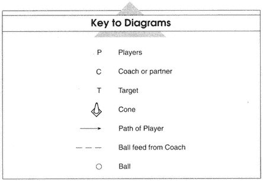
Chương 1: Nhu Cầu Thể Chất Của Quần Vợt
Todd Martin và Michael Chang là những tay vợt hàng đầu và đã giành được nhiều danh hiệu. Tuy nhiên, Todd cao 6 feet 5 inch và Michael cao 5 feet 7 inch. Đây là một lợi thế lớn của quần vợt so với các môn thể thao khác. Người chơi có chiều cao và cấu trúc cơ thể khác nhau có thể thành công. Todd sử dụng cú giao bóng lớn của mình và tìm kiếm bất kỳ cơ hội nào để sử dụng sải cánh rộng của mình vào lưới, còn Michael thì chơi một trận cơ bản, hầu hết đều thực hiện được mọi cú đánh. Một điểm chung của họ là thói quen tập luyện tuyệt vời và trình độ thể chất. Trong cuốn sách này, chúng ta sẽ xem xét những gì cần có, ngoài kỹ thuật đánh, để trở thành một tay vợt giỏi. Giờ đây, người chơi đang tìm kiếm bất kỳ lợi thế nào và việc có một chương trình tập luyện được thiết kế tốt là điều quan trọng để đạt đến đỉnh cao. Cuốn sách này sẽ bao gồm tất cả các khía cạnh của việc Thể lực toàn diện cho quần vợt.
Nhu Cầu Thể Chất Của Một Trận Đấu Quần Vợt
Các nhà nghiên cứu mô tả quần vợt là một môn thể thao trong đó người chơi phải ứng phó với một loạt các trường hợp khẩn cấp liên tục. Chạy nước rút theo bóng, đổi hướng, vươn người, duỗi người, lao tới, dừng lại và xuất phát. Tất cả những đặc điểm này, kết hợp với việc duy trì sự cân bằng và kỹ thuật phù hợp trong suốt trận đấu, là rất quan trọng để đạt được hiệu suất tối ưu trên sân. Do đó, người chơi phải giải quyết độ linh hoạt, sức mạnh và sức bền, sức mạnh, sự nhanh nhẹn và tốc độ, thành phần cơ thể cũng như thể dục nhịp điệu và yếm khí để cải thiện trò chơi quần vợt của họ. Sau đây là tổng quan ngắn gọn về các thành phần thể lực của người chơi quần vợt. Mỗi thành phần sẽ được giải thích đầy đủ hơn ở các chương sau.
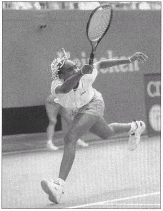
Độ Linh Hoạt
Quần vợt yêu cầu bạn thực hiện các cú đánh đặt các bộ phận cơ thể của bạn trong phạm vi chuyển động cực lớn (ví dụ: khi cánh tay của bạn duỗi thẳng hoàn toàn qua đầu để đạt được một cú lốp bóng). Trong suốt trận đấu, bạn được yêu cầu tạo ra lực lớn từ nhiều vị trí cơ thể khác nhau; thay đổi hướng, với tay để đánh, dừng lại nhanh và giao bóng là một vài ví dụ. Sức mạnh trong phạm vi chuyển động linh hoạt, không hạn chế sẽ giúp ngăn ngừa chấn thương và nâng cao hiệu suất.
Sức Mạnh Và Sức Bền
Bạn đã bao giờ chơi một trận đấu dài khiến cơ bắp của bạn bị đau vào ngày hôm sau chưa? Đó là bởi vì quần vợt đòi hỏi bạn không chỉ có những cú đánh tốt mà còn phải có sức mạnh tuyệt vời và sức bền cơ bắp. Trong suốt trận đấu, bạn có thể đánh hàng trăm quả bóng khi chạy từ bên này sang bên kia. Sức bền cơ bắp tốt, có nghĩa là bạn có thể tác dụng lực và duy trì lực đó theo thời gian, có thể giúp bạn đánh bóng mạnh vào cuối trận đấu như lúc bắt đầu. Ngoài ra, nó có thể giúp ngăn ngừa chấn thương.
Sức Mạnh
Quần vợt đòi hỏi những động tác bùng nổ. Sức mạnh lớn hơn cho phép bạn phản ứng nhanh hơn và tạo ra những chuyển động mạnh mẽ với ít nỗ lực hơn. Những tay vợt có những bước đi đầu tiên bùng nổ sẽ nhanh chóng vào vị trí, bố trí tốt và tung ra những cú đánh hiệu quả. Ngoài ra, bước đầu tiên bùng nổ sẽ giúp bạn tăng tốc độ đánh bóng ở xa hơn. Cả sức mạnh trên và dưới cơ thể đều cần thiết trong quần vợt. Để tối đa hóa sức mạnh của mình, bạn phải chuyển sức mạnh phần thân dưới sang phần thân trên.
Nhanh Nhẹn Và Tốc Độ
Sự nhanh nhẹn là yếu tố quan trọng để di chuyển trên sân tốt. Nó cho phép bạn ở đúng vị trí và cung cấp một nền tảng vững chắc để đánh bóng. Trong một thời điểm năm giây thông thường, có thể có tới bốn lần thay đổi hướng. Tốc độ là quan trọng để có được bóng. Mặc dù một số người có tốc độ tự nhiên nhưng những người khác có thể đạt được điều này bằng cách rèn luyện cơ bắp và hệ thần kinh để tạo ra hiệu ứng tương tự. Bạn có thể tiếp cận bóng càng nhanh thì bạn càng có nhiều thời gian để chuẩn bị cho cú đánh của mình.
Thành Phần Cơ Thể Tối Ưu
Lượng xương và nước trong cơ thể bạn không đổi, vì vậy bạn nên chú ý đến cơ và mỡ khi cố gắng thay đổi thành phần cơ thể. Bạn có thể tăng lượng cơ bắp trong cơ thể thông qua việc rèn luyện sức mạnh phù hợp. Tuy nhiên, tăng cơ thôi chưa đủ mà bạn còn phải duy trì lượng mỡ trong cơ thể ở mức thích hợp. Hai cách để tác động đến lượng mỡ trong cơ thể là ăn kiêng giảm béo và tập thể dục nhịp điệu. Ăn kiêng giảm béo, thuật ngữ chính xác cho chế độ ăn kiêng giảm cân vì bạn đang cố gắng giảm chất béo nói riêng, là một phương pháp giảm lượng chất béo trong khi vẫn duy trì đủ lượng calo. Cùng với việc sử dụng chất béo làm nguồn năng lượng, tập aerobic sẽ cải thiện sức bền của bạn trong những trận đấu dài hơn. Tỷ lệ mỡ cơ thể cần đạt là khoảng 8 đến 18% đối với nam và 15 đến 25% đối với nữ. Bằng cách tuân theo một chế độ ăn uống cân bằng và bao gồm các bài tập thể dục nhịp điệu (một vài hiệp quần vợt) trong chế độ tập luyện của bạn, bạn sẽ có thể đạt được tỷ lệ phần trăm này.
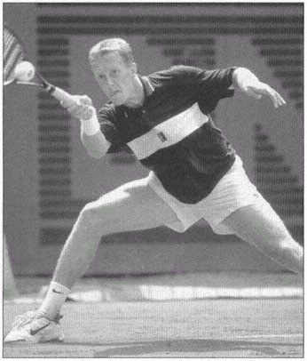
Thể Dục Yếm Khí Và Hiếu Khí
Cách tốt nhất để tập luyện quần vợt là gì? Để trả lời câu hỏi đó, chúng ta hãy nhìn vào nhu cầu năng lượng của môn thể thao này. Năng lượng được sử dụng trong một cuộc đua đường dài đến từ hệ thống hiếu khí (có oxy) và năng lượng được sử dụng trong các đợt hoạt động ngắn, chẳng hạn như chạy 20 yard, được gọi là yếm khí (không có oxy). Mặc dù rất khó để định lượng nhu cầu năng lượng của môn quần vợt nhưng chúng tôi biết rằng đây là môn thể thao dựa vào hệ thống hiếu khí và yếm khí mạnh mẽ.
Hầu hết các điểm trong quần vợt, ngay cả trên sân đất nện, kéo dài chưa đầy 10 giây, trong khi điểm trung bình trên sân cứng giữa hai tay vợt ngang ngửa kéo dài khoảng 5 giây. Một người chơi có thể nỗ lực từ 300 đến 500 lần trong một trận đấu. Mỗi nỗ lực ngắn hạn là một hoạt động yếm khí. Vì vậy, rõ ràng việc tập luyện yếm khí là quan trọng.
Điều đó có nghĩa là bạn có thể bỏ qua việc tập aerobic? KHÔNG! Trong một trận đấu quần vợt, bạn có 25 giây nghỉ giữa các điểm và 90 giây giữa các trận đấu. Nếu thể lực aerobic của bạn thấp, bạn sẽ khó hồi phục giữa các điểm và các trận đấu, đồng thời bạn có thể cảm thấy mệt mỏi khi kết thúc trận đấu. Một ưu điểm khác của nền tảng aerobic vững chắc là nó mang lại cho bạn sức bền để có những buổi tập luyện chất lượng. Vì vậy, vì trận đấu
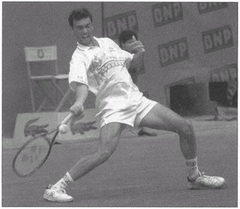
có thể tồn tại trong thời gian dài và người chơi phải phục hồi nhanh chóng giữa các điểm, thể dục nhịp điệu cũng là điều quan trọng.
Tất cả những thành phần thể chất này đều quan trọng trong việc phát triển trò chơi của bạn. Để giúp bạn tạo một chương trình phù hợp nhằm nâng cao thành tích, giảm nguy cơ chấn thương và tăng niềm vui trọn đời với trò chơi, hãy bắt đầu bằng việc thiết kế một chương trình tập luyện theo từng giai đoạn thích hợp (chương 9 bao gồm các ví dụ về các chương trình tập luyện này).
Lập Kế Hoạch Cho Chương Trình Dưỡng Tóc Của Bạn
Để đạt được kết quả tốt nhất trong việc đạt được mức thể lực tối ưu, hãy bắt đầu bằng cách tìm hiểu yêu cầu của một trận đấu quần vợt. Sau đó, bằng cách thiết kế một chương trình tập luyện theo chu kỳ, hãy đặt ra các mục tiêu thực hiện thực tế. Điều chỉnh các chương trình tập luyện định kỳ theo nhu cầu cá nhân của bạn và sửa đổi chúng khi mức độ thể lực, lịch thi đấu hoặc mục tiêu của bạn thay đổi. Mỗi khái niệm và hoạt động chúng tôi đề cập trong các chương sau phải phù hợp với chương trình định kỳ của bạn. Quyết định giải đấu nào trong năm tới là quan trọng nhất đối với bạn. Sau đó, xác định mức độ thể chất cơ bản của bạn bằng cách tự kiểm tra bằng cách sử dụng Giao thức kiểm tra sức khỏe của USTA (xem chương 2). Khi bạn đã xác định được lĩnh vực bạn cần tập trung vào, hãy sử dụng các bài tập, bài tập luyện và lịch trình luyện tập mẫu trong các chương từ 3 đến 9 để thiết kế một chương trình tập luyện tùy chỉnh cho riêng bạn. Thông tin ở chương 10 sẽ giúp bạn ngăn ngừa chấn thương khi tập luyện.
Chương 2: Kiểm Tra Thể Lực Quần Vợt
Điều gì khiến Pete Sampras và Steffi Graf trở thành những tay vợt vĩ đại như vậy? Trình độ kỹ năng của họ rõ ràng là vượt trội. Họ đánh những cú giao bóng, những cú đánh nền và những cú vô lê tuyệt vời. Tuy nhiên, họ không chỉ đánh bóng giỏi mà còn chăm chỉ rèn luyện thể lực. Cho dù khả năng của bạn là gì, bạn cũng không thể chơi thứ quần vợt tốt nhất nếu thể lực của bạn không tốt. Khỏe mạnh có nghĩa là tim, mạch máu, phổi và cơ bắp của bạn có thể hoạt động với hiệu quả tối đa. Khi bạn khỏe mạnh, cơ thể bạn sẽ dễ dàng điều chỉnh hơn để đáp ứng nhu cầu thể chất ngày càng tăng.
Bài Kiểm Tra Thể Lực Cho Môn Quần Vợt
USTA đã xác định các thành phần thiết yếu của thể lực và thiết kế một quy trình kiểm tra thể lực dựa trên các thành phần này. Các thành phần là độ linh hoạt, sức mạnh và sức bền, sức mạnh, sự nhanh nhẹn và tốc độ, thành phần cơ thể và khả năng hiếu khí.
Việc theo dõi kết quả kiểm tra thể lực có thể giúp bạn xác định điểm mạnh và điểm yếu, thiết kế hoặc tinh chỉnh chương trình tập luyện cũng như theo dõi sự tiến bộ của bạn. Từ kết quả kiểm tra, bạn và huấn luyện viên của bạn có thể xác định những lĩnh vực thể lực nào bạn cần cải thiện. Sau đó, bạn có thể thiết kế một chương trình tập luyện cụ thể dựa trên kết quả của mình. Sử dụng kết quả kiểm tra của nhiều tay vợt trẻ, USTA đã thiết lập phạm vi thể lực cho các nhóm tuổi và giới tính khác nhau. Việc diễn giải đúng kết quả có thể giúp bạn xác định vị trí tương đối của điểm thể lực trong phân bổ, nhận ra các điểm yếu để ngăn ngừa chấn thương và nâng cao hiệu suất.
Bạn có thể tạo hồ sơ nêu chi tiết điểm số của mình so với những người chơi khác ở độ tuổi và giới tính của bạn. Tay vợt mẫu ở hình 2.1 là tay vợt nam thuận tay phải ở lứa tuổi 18 trở xuống. Kết quả của anh ấy cho thấy rõ ràng điểm cao ở hạng mục sức mạnh và sức mạnh. Tuy nhiên, điểm số của anh ấy ở lĩnh vực tốc độ và sự nhanh nhẹn thấp hơn đáng kể so với những người chơi khác cùng tuổi. Người chơi này nên tập trung vào việc cải thiện kỹ năng di chuyển của mình trên sân, sử dụng các bài tập trong chương 6 và 7. Việc kiểm tra thể lực vài tháng một lần sẽ cho thấy sự tiến bộ của bạn ở các hạng mục khác nhau. Nó cũng sẽ cho bạn thấy nơi bạn cần sửa đổi chương trình tập luyện của mình. Bây giờ chúng ta hãy xem xét từng thành phần thể dục.
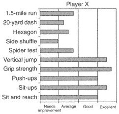
So Sánh Điểm Của Bạn
Các phạm vi được liệt kê trong biểu đồ sau mỗi bài kiểm tra thể lực là hướng dẫn dựa trên dữ liệu quy chuẩn được thu thập bằng cách kiểm tra các vận động viên quần vợt trẻ em và người lớn. Các tiêu chuẩn dành cho tay vợt trẻ dựa trên dữ liệu được thu thập từ các tay vợt trẻ từ 18 tuổi trở xuống được xếp hạng quốc gia và khu vực, cũng như các tay vợt cấp đại học và các chuyên gia du đấu trẻ. Tiêu chuẩn dành cho người chơi trưởng thành dựa trên dữ liệu được thu thập từ những người chơi quần vợt cuồng nhiệt từ 25 tuổi trở lên.
Kiểm Tra Độ Linh Hoạt
Độ linh hoạt là chuyển động có sẵn (bạn có thể di chuyển bao xa) tại một khớp (ví dụ: vai, khuỷu tay, cổ tay, hông, đầu gối, mắt cá chân). Nếu cơ không thể căng ra, cho phép khớp di chuyển trong toàn bộ phạm vi chuyển động, thì cả nguy cơ chấn thương và hiệu suất có thể bị ảnh hưởng. Vai và lưng dưới là những bộ phận cơ thể thường xuyên bị chấn thương nhất ở những tay vợt chuyên nghiệp. Những tay vợt như Mary Joe Fernandez đã phát hiện ra rằng thói quen giãn cơ thường xuyên có thể kéo dài sự nghiệp một cách đáng kể.
Thành tích trên sân phụ thuộc chủ yếu vào kỹ năng chơi quần vợt của bạn. Tuy nhiên, việc không linh hoạt có thể khiến bạn không thể di chuyển hiệu quả, ảnh hưởng đến việc thực hiện đúng các cú đánh của bạn. Bạn có thể chạm vào ngón chân trong khi vẫn giữ đầu gối thẳng không? Nếu không, bạn cũng giống như nhiều người chơi quần vợt có lưng dưới hoặc gân kheo kém linh hoạt. Cơ gân kheo bao gồm ba cơ ở phía sau đùi. Vì chúng bám vào xương chậu dưới nên tạo ra lực căng ở vùng thắt lưng. Sự linh hoạt tốt ở gân kheo sẽ cải thiện độ linh hoạt của thân và làm giảm tỷ lệ chấn thương vùng thắt lưng. Các bài kiểm tra độ linh hoạt của gân kheo và khả năng ngồi và tiếp cận sẽ cho biết bạn cần bao nhiêu công việc trong lĩnh vực này.
Một số nghiên cứu đã chỉ ra mối quan hệ giữa việc mất đi độ linh hoạt khi xoay trong của vai và số năm thi đấu của một tay vợt. Sự mất đi độ linh hoạt của vai này dường như trở nên tồi tệ hơn khi chơi trong thời gian dài hơn. Phát hiện sớm bằng cách kiểm tra độ linh hoạt của vai bạn có thể giúp cải thiện hiệu suất và giảm nguy cơ chấn thương.
Ngồi Và Vươn
Trong giải quần vợt chuyên nghiệp nam, 38% người chơi đã bỏ lỡ ít nhất một giải đấu vì vấn đề về lưng. Đánh bóng quần vợt không chỉ đòi hỏi phải duỗi cơ thể mà còn đòi hỏi nhiều sức lực.
xoắn. Chìa khóa để có sự linh hoạt tốt là giãn cơ thường xuyên (xem chương 3). Điều này sẽ giúp bạn, không chỉ trong việc ngăn ngừa chấn thương mà còn giúp bạn đạt được những cú đánh rộng mà trước đây bạn không bao giờ có được. Làm thế nào để bạn biết liệu bạn có đủ linh hoạt hay không? Hãy làm bài kiểm tra ngồi và tiếp cận và xem liệu bạn có thể với tay qua ngón chân hay không. Bài kiểm tra này đo độ linh hoạt của lưng dưới và gân kheo.
Cách Thực Hiện
- Ngồi duỗi thẳng đầu gối và đặt chân phẳng trên sàn. Nhờ một đối tác giữ đầu gối của bạn để chúng không rơi khỏi sàn.
- Nghiêng người về phía trước, dang rộng cánh tay và nhờ đối tác đo khoảng cách từ đầu ngón tay đến ngón chân của bạn. Hai bàn tay của bạn phải ở cạnh nhau.
- Ghi lại điểm số của bạn. Nếu bạn không chạm tới ngón chân, con số sẽ được ghi âm theo inch. Nếu bạn chạm quá ngón chân, con số sẽ được ghi dương bằng inch.
- So sánh điểm của bạn với điểm ở bảng 2.1.
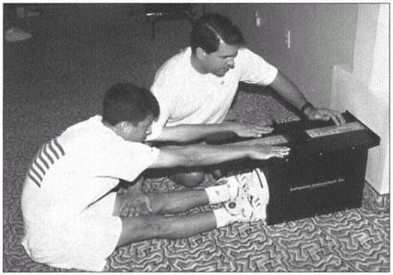
| Tuyệt Vời | Tốt | Trung Bình | Cần Cải Thiện | |
|---|---|---|---|---|
| Nữ — Người Lớn | >6 | 4–6 | 2–4 | <2 |
| Nữ — Thiếu Niên | >8 | 7–8 | 5–7 | <5 |
| Nam — Người Lớn | >3 | 1–3 | 0–1 | <0 |
| Nam — Thiếu Niên | >4 | 2–4 | 1–2 | <1 |
Độ Linh Hoạt Của Gân Kheo
Độ linh hoạt của gân kheo đo mức độ căng của cơ ở phía sau đùi. Người chơi quần vợt sử dụng cơ này để dừng, xuất phát, chạy và nhảy. Trong bài tập tiếp theo, sau khi khởi động, hãy thử thực hiện động tác lunge (một chân vươn về phía trước trong khi chân sau giữ nguyên) như thể bạn đang với một cú vô lê rộng. Nếu bạn cảm thấy căng ở phía sau đùi, độ linh hoạt của bạn có thể không đủ để thực hiện cú đánh này mà không có khả năng bị thương. Nếu không được kéo căng đúng cách, cơ này có thể dễ dàng bị căng hoặc bị thương do chuyển động nhanh trong quần vợt.
Quy Trình (Bài Kiểm Tra Này Phải Được Thực Hiện Bởi Chuyên Gia Đã Được Đào Tạo.)
- Nằm xuống bàn với một bạn tập ổn định xương chậu (giữ xương hông).
- Nâng một chân lên cho đến khi bạn cảm thấy căng cứng ở phía sau chân.
- Đối tác của bạn đo góc ở hông bằng máy đo góc.
- Lặp lại ở phía bên kia.
- So sánh điểm của bạn với điểm ở bảng 2.2.
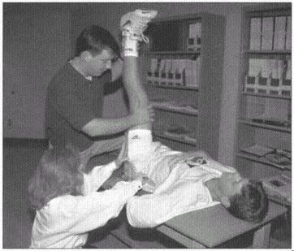
| Tuyệt Vời | Tốt | Cần Cải Thiện | |
|---|---|---|---|
| Nữ | >85 | 85–75 | <75 |
| Nam | >80 | 70–80 | <70 |
Độ Linh Hoạt Của Vai
Độ linh hoạt của vai mô tả khoảng cách bạn có thể di chuyển cánh tay quanh khớp vai. Phạm vi chuyển động đầy đủ, cả bên trong và bên ngoài, là điều cần thiết để ngăn ngừa chấn thương và kỹ thuật tốt trong các cú đánh. Với cánh tay trên của bạn ở một góc 90 độ so với phần thân trên của bạn (bắt cóc), xoay trong là khi các ngón tay của bạn hướng về phía ngón chân. Xoay ngoài là khi ngón tay của bạn hướng lên trên đầu. Nếu các cơ xoay bên trong hoặc bên ngoài chặt hơn bình thường thì có thể xảy ra mất cân bằng và chấn thương vai. Nhiều tay vợt có khả năng xoay vòng bên trong kém linh hoạt.
Quy Trình (Bài Kiểm Tra Này Phải Được Thực Hiện Bởi Chuyên Gia Đã Được Đào Tạo.)
- Nằm xuống bàn với một người bạn cố định xương bả vai của bạn (giữ bả vai của bạn).
- Cánh tay trên của bạn tạo thành một góc 90 độ so với phần trên cơ thể (dạng). Khuỷu tay cũng uốn cong một góc 90 độ (hướng lên trần nhà). Đây được coi là vị trí trung lập.
- Xoay cánh tay của bạn trong và ngoài và nhờ đối tác của bạn đo cả hai góc quay bằng máy đo điện áp.
- Lặp lại ở phía bên kia.
- So sánh điểm của bạn với điểm ở bảng 2.3.
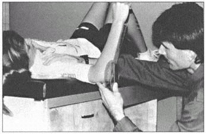
| Thống Lĩnh | Không Chiếm Ưu Thế | |
|---|---|---|
| Nữ — Bên Ngoài | 95–105 | 95–105 |
| Nữ — Nội Bộ | 45–55 | 55–65 |
| Nam — Bên Ngoài | 95–105 | 90–100 |
| Nam — Nội Bộ | 40–50 | 50–60 |
Kiểm Tra Sức Mạnh Và Sức Bền Cơ Bắp
Sức mạnh là khối lượng tạ bạn có thể nâng hoặc xử lý bất cứ lúc nào. Sức bền cơ bắp là số lần cơ bắp của bạn có thể nâng một trọng lượng hoặc thời gian cơ bắp của bạn có thể giữ một trọng lượng.
Một nghiên cứu gần đây về các vận động viên quần vợt ở trường đại học cho thấy rằng chương trình rèn luyện sức mạnh kéo dài 9 tháng đã cải thiện tốc độ giao bóng, thuận tay và trái tay của các vận động viên lên tới 35%. Ngoài ra, các tay vợt còn giảm lượng mỡ trong cơ thể và tăng khối lượng cơ nạc. Những tay vợt này đã phát hiện ra điều mà nhiều chuyên gia hàng đầu đã biết: việc cải thiện sức mạnh và sức bền của bạn có thể kéo dài thêm nhiều năm sự nghiệp thi đấu của bạn và giúp bạn đánh bóng mạnh hơn trong quá trình này.
Cơ bụng hầu như co lại mỗi khi bạn đánh bóng mạnh. Ngoài ra, với việc ngày càng nhiều người chơi đánh thuận tay ở tư thế mở, áp lực sẽ tăng thêm lên cơ thành bụng do khả năng xoay thân trên tăng lên. Động tác gập bụng phát triển các cơ chịu trách nhiệm uốn cong hoặc uốn cong thân người theo chuyển động về phía trước và bảo vệ chúng khỏi chấn thương khi thực hiện các cú đánh của bạn.
Sức mạnh ở phần thân trên là bắt buộc không chỉ để đánh bóng mạnh hơn mà còn ngăn ngừa chấn thương ở vai, khuỷu tay và cổ tay. Chống đẩy sẽ cho biết sức mạnh tổng thể của vai, ngực và cơ tam đầu, đồng thời phép đo độ bám tay không chỉ cho thấy sức mạnh của cẳng tay mà còn cho thấy sự khác biệt giữa bên thuận và bên không thuận.
Động Tác Ngồi Dậy
Tất cả chúng ta đều biết rằng điều quan trọng là phải có đôi chân khỏe để giúp bạn di chuyển quanh sân nhanh nhất có thể và bạn cần một cánh tay khỏe để thực hiện một cú vung mạnh. Điều quan trọng không kém có thể là cơ bụng và cơ lưng dưới của bạn. Những cơ này đóng vai trò là mối liên kết quan trọng giữa phần dưới và phần trên của cơ thể khi bạn truyền lực từ mặt đất lên vợt. Họ co lại ở cường độ cao trong khi thực hiện hầu hết các cú đánh quần vợt. Vì mục đích tập luyện, bạn có thể muốn thực hiện động tác gập bụng để giảm căng thẳng cho cơ gấp hông và lưng dưới (xem trang 76–77 để biết động tác gập bụng). Tuy nhiên, vì mục đích thử nghiệm, chúng tôi luôn khuyên bạn nên có người giữ chân bạn khi bạn thực hiện động tác ngồi dậy hoàn chỉnh. Sit-up kiểm tra sức mạnh cơ bụng và sức chịu đựng của bạn.
Quy Trình (Người Chơi Có Tiền Sử Đau Thắt Lưng Không Nên Thực Hiện Bài Kiểm Tra Sau.)
- Nằm ngửa, hông gập 45 độ và đầu gối gập 90 độ.
- Nhờ một người bạn giữ chân bạn để họ không di chuyển trong khi bạn thực hiện động tác gập bụng.
- Khoanh tay trước ngực và đặt tay lên vai đối diện.
- Thực hiện càng nhiều động tác gập bụng càng tốt trong khoảng thời gian 60 giây (yêu cầu đối tác của bạn đếm và để ý đồng hồ).
- Để được tính là một lần ngồi dậy hoàn chỉnh, khuỷu tay phải chạm vào đầu gối ở tư thế hướng lên (đồng thời giữ cánh tay áp vào cơ thể), và bả vai phải chạm thảm ở tư thế hướng xuống (hông phải tiếp xúc với thảm).
- So sánh điểm của bạn với điểm ở bảng 2.4.
| Tuyệt Vời | Tốt | Trung Bình | Cần Cải Thiện | |
|---|---|---|---|---|
| Nữ — Người Lớn | >53 | 46–53 | 42–46 | <42 |
| Nữ — Thiếu Niên | >54 | 46–54 | 35–46 | <35 |
| Nam — Người Lớn | >58 | 51–58 | 47–51 | <47 |
| Nam — Thiếu Niên | >63 | 56–63 | 50–56 | <50 |
Chống Đẩy
Vì vậy, bạn muốn đánh cú giao bóng của mình mạnh như Sampras. Thực hiện chống đẩy có thể không đảm bảo rằng bạn sẽ có thể giao bóng với tốc độ 130 dặm một giờ; tuy nhiên, có vai và cánh tay khỏe mạnh có thể giúp bạn đánh bóng mạnh hơn và giảm nguy cơ chấn thương. Nếu thực hiện động tác chống đẩy hoàn toàn quá khó, hãy bắt đầu bằng cách chống đẩy vào tường, sau đó chuyển sang chống đẩy sửa đổi (từ đầu gối). Điều này sẽ chuẩn bị cho phần thân trên của bạn sẵn sàng cho những cú giao bóng lớn mà bạn định đánh. Chống đẩy kiểm tra sức mạnh và sức bền của phần thân trên của bạn.
Cách Thực Hiện
- Vào tư thế nằm sấp, hai tay rộng bằng vai và dồn trọng lượng của phần thân dưới lên các ngón chân.
- Duỗi thẳng cánh tay nhưng giữ đầu, vai, lưng, hông, đầu gối và bàn chân trên một đường thẳng.
- Yêu cầu một đối tác ghi lại số lần chống đẩy bạn hoàn thành trong khoảng thời gian 60 giây hoặc thất bại.
- Để được tính là một lần chống đẩy hoàn toàn, cánh tay trên phải song song với sàn hoặc phía dưới ở tư thế hạ xuống, hai tay phải duỗi thẳng hoàn toàn ở tư thế hướng lên và bạn phải giữ thẳng cơ thể.
- So sánh điểm của bạn với điểm ở bảng 2.5.
| Tuyệt Vời | Tốt | Trung Bình | Cần Cải Thiện | |
|---|---|---|---|---|
| Nữ — Người Lớn | >44 | 34–44 | 27–36 | <24 |
| Nữ — Thiếu Niên | >42 | 34–42 | 20–34 | <20 |
| Nam — Người Lớn | >49 | 40–49 | 30–40 | <30 |
| Nam — Thiếu Niên | >52 | 49–52 | 35–49 | <35 |
Độ Bám Tay
Có lực cầm tốt có thể giúp bạn ngăn ngừa chấn thương cổ tay và khuỷu tay. Ngoài ra, nó có thể giúp bạn giữ vợt tốt hơn trong những cú đánh lệch tâm. Mặc dù cánh tay thuận của bạn sẽ khỏe hơn cánh tay không thuận, nhưng các chuyên gia khuyên rằng sự khác biệt giữa hai tay không được lớn hơn 25%. Sức cầm nắm đo sức mạnh của các cơ gấp ngón tay và cơ cẳng tay.
Cách Thực Hiện
- Giữ cánh tay của bạn ở bên cạnh và bóp một lực kế đo độ bám (Có tại phòng khám vật lý trị liệu hoặc khoa thể dục hoặc sinh lý thể dục của trường đại học.).
- Ghi kết quả bằng kilôgam (1 kilôgam bằng 2,2 pound).
- Lặp lại ở phía bên kia.
- So sánh điểm của bạn với điểm ở bảng 2.6.
| Tuyệt Vời | Tốt | Trung Bình | Cần Cải Thiện | |
|---|---|---|---|---|
| Nữ — Người Lớn | >39 / >27 | 34–39 / 24–27 | 28–34 / 22–24 | <28 / <22 |
| Nữ — Thiếu Niên | >37 / >33 | 34–37 / 27–33 | 31–34 / 25–27 | <31 / <25 |
| Nam — Người Lớn | >60 / >36 | 51–60 / 31–36 | 42–51 / 26–31 | <42 / <26 |
| Nam — Thiếu Niên | >52 / >42 | 48–52 / 34–42 | 39–48 / 31–34 | <39 / <31 |
(Dom. / Non-Dom.)
Kiểm Tra Sức Mạnh
Sức mạnh là khối lượng công việc bạn có thể thực hiện trong một khoảng thời gian nhất định. Sức mạnh cần thiết trong các hoạt động sử dụng cả sức mạnh và tốc độ. Cải thiện một hoặc cả hai thành phần thể chất này có thể giúp ích rất nhiều cho thể lực của bạn. Hãy hình dung Venus Williams hoặc Pete Sampras trong một trong những pha nhảy qua đầu nổi tiếng của họ. Họ đã nỗ lực cải thiện sức mạnh trong các trận đấu của mình. Sức mạnh phần thân dưới rất quan trọng để tiếp cận bóng nhanh nhất có thể; sức mạnh phần thân trên giúp bạn đánh bóng mạnh trong suốt trận đấu.
Cả thử nghiệm nhảy thẳng đứng và thử nghiệm bóng thuốc đều quan trọng để đánh giá mức độ mạnh mẽ của bạn. Phép đo bước nhảy thẳng đứng tập trung vào phần thân dưới. Điểm tốt trong bài kiểm tra này có thể cho thấy bước đầu tiên nhanh chóng và bùng nổ trong việc tiếp cận bóng, cũng như khả năng bật nhảy mạnh mẽ đối với những cú lốp bóng khó tiếp cận. Bài kiểm tra bóng thuốc liên quan đến toàn bộ cơ thể và đặc biệt hơn về quần vợt. Có thể rất thú vị khi so sánh điểm thuận tay và trái tay của bạn, sau đó liên hệ những điểm đó với các cú đánh thuận tay và trái tay của bạn để xem liệu những điểm mạnh và điểm yếu đó có giống nhau không. Trong quá trình ném bóng qua đầu, bạn nên sử dụng chân để đạt được khoảng cách tối đa.
Nhảy Dọc
Mọi người đều được sinh ra với một khả năng thể thao nhất định; tuy nhiên, bạn có thể cải thiện khả năng nhảy thẳng đứng và sức mạnh phần thân dưới của mình. Rèn luyện phần thân dưới có nghĩa là phát triển bước đầu tiên bùng nổ. Trong thời gian trung bình 5 giây của một trận đấu quần vợt, có thể có tới 4 lần chuyển hướng. Vì vậy, điều quan trọng là phát triển đôi chân khỏe mạnh. Nhảy thẳng đứng là thước đo sức mạnh của phần dưới cơ thể. Đó là độ cao bạn có thể nhảy từ tư thế đứng trừ đi độ cao bạn có thể đạt được khi đứng.
Cách Thực Hiện
- Đứng tựa lưng vào tường và chạm vào tường với cánh tay dang rộng càng cao càng tốt.
- Nhờ một bạn cùng đánh dấu vị trí.
- Kéo dài và gắn thước đo lên tường từ điểm cao nhất trong tầm tay của bạn.
- Bôi phấn lên ngón tay trước khi nhảy.
- Nhảy với tư thế quay mặt vào tường (không bước một bước), vươn người lên cao nhất có thể trên thước.
- Sự khác biệt giữa tầm với khi đứng và điểm cao nhất khi bạn nhảy là điểm của bạn.
- So sánh điểm của bạn với bảng 2.7.
| Tuyệt Vời | Tốt | Trung Bình | Cần Cải Thiện | |
|---|---|---|---|---|
| Nữ — Người Lớn | >21 | 16–21 | 12–16 | <12 |
| Nữ — Thiếu Niên | >22 | 17–22 | 13–17 | <13 |
| Nam — Người Lớn | >27 | 22–27 | 17–22 | <17 |
| Nam — Thiếu Niên | >28 | 26–28 | 21–26 | <21 |
Ném Bóng Thuốc
Tập luyện với quả bóng thuốc có thể thực tế vì bạn có thể bắt chước các động tác quần vợt. Việc ném quả bóng thuốc liên quan đến toàn bộ cơ thể. Có một mối quan hệ chặt chẽ giữa việc thể hiện tốt trong các bài kiểm tra này và thể lực tổng thể của người chơi quần vợt. Đặc biệt chú ý đến kỹ thuật tung đòn. Kỹ thuật phù hợp sẽ bao gồm việc gập và duỗi đầu gối cũng như xoay thân một cách đáng kể chứ không phải chỉ tung người bằng cánh tay. Việc ném bóng thuốc là thước đo sức mạnh.
Cách Thực Hiện
- Đứng ở vị trí được chỉ định, hướng mặt về phía trước và cầm một quả bóng thuốc nặng 6 pound.
- Thực hiện một bước và ném bóng, mô phỏng cú đánh thuận tay, đồng thời ở phía sau vạch.
- Đo khoảng cách từ đường thẳng đến điểm bóng chạm đất.
- Lặp lại cho phía trái tay.
- So sánh điểm của bạn với bảng 2.8 và 2.9.
Động tác ném bóng qua đầu và ném bóng ngược sử dụng các nhóm cơ giống như động tác giao bóng và ném bóng qua đầu. Bạn sẽ thành công nhất nếu sử dụng lực phản ứng mặt đất hợp lý. Từ vật lý, chúng ta biết rằng đối với mọi hành động đều có phản ứng bình đẳng và ngược chiều. Thả bóng thuốc ở góc 45 độ sẽ cho bạn kết quả tốt nhất. Cả cú ném từ trên cao và cú ném ngược đều là thước đo sức mạnh.
| Tuyệt Vời | Tốt | Trung Bình | Cần Cải Thiện | |
|---|---|---|---|---|
| Nữ — Người Lớn | >30.5 | 25–30.5 | 19.5–25 | <19.5 |
| Nữ — Thiếu Niên | >32 | 26–32 | 20–26 | <20 |
| Nam — Người Lớn | >39 | 32–39 | 25–32 | <25 |
| Nam — Thiếu Niên | >42 | 35–42 | 28–35 | <28 |
| Tuyệt Vời | Tốt | Trung Bình | Cần Cải Thiện | |
|---|---|---|---|---|
| Nữ — Người Lớn | >30 | 24–30 | 17.5–23.5 | <17.5 |
| Nữ — Thiếu Niên | >31 | 25–31 | 18–25 | <18 |
| Nam — Người Lớn | >37.5 | 30.5–37.5 | 23.5–30.5 | <23.5 |
| Nam — Thiếu Niên | >42 | 34–42 | 26–34 | <26 |
Cách Thực Hiện (Chi Phí Chung)
- Đứng sau hàng, hướng mặt về phía trước và cầm một quả bóng thuốc nặng 6 pound.
- Tung bóng càng xa càng tốt từ vị trí trên cao, chỉ sử dụng một bước. Đừng vượt qua ranh giới.
- Đo khoảng cách từ đường thẳng tới điểm bóng chạm đất.
- So sánh điểm của bạn với bảng 2.10.
Cách Thực Hiện (Chi Phí Đảo Ngược)
- Đứng quay lưng vào lưới và ném quả bóng thuốc nặng 6 pound về phía sau.
- Sử dụng tư thế thuận tay, ném bóng càng xa càng tốt.
- Đo khoảng cách từ lưới đến điểm bóng chạm đất.
- So sánh điểm của bạn với bảng 2.11.
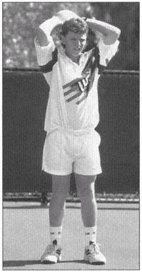
| Tuyệt Vời | Tốt | Trung Bình | Cần Cải Thiện | |
|---|---|---|---|---|
| Nữ — Người Lớn | >22.5 | 18.5–22.5 | 14.5–18.5 | <14.5 |
| Nữ — Thiếu Niên | >23 | 19–23 | 15–19 | <15 |
| Nam — Người Lớn | >30.5 | 25.5–30.5 | 20–26.5 | <20 |
| Nam — Thiếu Niên | >34 | 29–34 | 23–29 | <23 |
| Tuyệt Vời | Tốt | Trung Bình | Cần Cải Thiện | |
|---|---|---|---|---|
| Nữ — Người Lớn | >32.5 | 26.5–32.5 | 20.5–26.5 | <20.5 |
| Nữ — Thiếu Niên | >34 | 27–34 | 20–27 | <20 |
| Nam — Người Lớn | >43.5 | 35–43.5 | 27–35 | <27 |
| Nam — Thiếu Niên | >46 | 38–46 | 31–38 | <31 |
Kiểm Tra Độ Nhanh Nhẹn Và Tốc Độ
Sự nhanh nhẹn và tốc độ là khả năng bạn di chuyển xung quanh sân một cách nhanh chóng và thuận lợi để định vị cho cú đánh. Sự nhanh nhẹn là rất quan trọng để di chuyển trên sân tốt. Nó cho phép bạn ở đúng vị trí và cung cấp một nền tảng vững chắc để đánh bóng. Tốc độ là quan trọng để có được bóng.
Trong một nghiên cứu về những tay vợt trẻ ưu tú, các nhà nghiên cứu nhận thấy rằng sự nhanh nhẹn là yếu tố thể lực quan trọng nhất trong việc dự đoán thứ hạng của một tay vợt. Chúng ta biết rằng tốc độ trong quần vợt không đòi hỏi phải chạy một quãng đường dài. Khi bạn nhìn thấy Venus Williams và Michael Chang chạy nước rút quanh sân, họ thường chỉ phải chạy vài thước trước khi đổi hướng. Họ dường như làm điều này một cách dễ dàng và cân bằng. Xác định tốc độ bạn di chuyển trong khi vẫn kiểm soát được thăng bằng có thể là bước đầu tiên (bùng nổ) để tiếp cận quả bóng mà trước đây bạn chưa bao giờ có thể với tới.
Chơi quần vợt đòi hỏi bạn phải di chuyển theo mọi hướng có thể. Mặc dù quãng đường 20 yard cho biết tốc độ đi thẳng của bạn, tốc độ mà đôi khi bạn có thể cần khi đang trên đường chạy trốn để thực hiện một cú đánh rơi, nhưng quãng đường chạy ngang cho bạn biết tốc độ ngang của bạn hoặc tốc độ bạn có thể di chuyển từ bên này sang bên kia. Chạy nhện kết hợp các chuyển động này theo cách đặc trưng của quần vợt. Mô hình chuyển động liên quan đến việc chạy nước rút cũng như thay đổi hướng. Bài tập lục giác sẽ buộc bạn phải kiểm soát phần thân trên của mình để trọng tâm của bạn sẽ ở gần bệ đỡ khi thực hiện bài kiểm tra này.
Lục Giác
Bài kiểm tra hình lục giác đo độ nhanh của bàn chân khi thay đổi hướng lùi, tiến và sang một bên trong khi hướng mặt về một hướng (hướng mặt về cùng một hướng trong quá trình kiểm tra mô phỏng việc đối mặt với đối thủ của bạn trong trận đấu). Bài kiểm tra hình lục giác cũng kiểm tra khả năng ổn định cơ thể của bạn một cách nhanh chóng giữa những lần thay đổi hướng đó, bởi vì bạn cần sự ổn định trước khi có thể thực hiện bước nhảy tiếp theo. Nếu cơ thể không ổn định, bạn sẽ mất thăng bằng.
Cách Thực Hiện
- Trên mặt đất, dùng băng dính để tạo hình lục giác (sáu cạnh có góc 120 độ). Làm cho mỗi bên dài 24 inch.
- Đứng ở giữa hình lục giác và giữ nguyên hướng mặt trong suốt quá trình kiểm tra.
- Khi đối tác của bạn ra lệnh cho bạn, "sẵn sàng, bắt đầu", hãy nhảy về phía trước qua băng và ngay lập tức quay trở lại hình lục giác (đối tác của bạn phải tính giờ cho bạn bằng đồng hồ bấm giờ).
- Tiếp tục hướng mặt về phía trước, nhảy qua bên cạnh và quay trở lại giữa. Lặp lại cho mỗi bên.
- Tiếp tục mô hình này bằng cách nhảy qua tất cả sáu cạnh và quay lại giữa mỗi lần để thực hiện ba vòng quay đầy đủ của hình lục giác.
- Khi bàn chân đi vào hình lục giác sau ba vòng quay đầy đủ, đối tác của bạn nên dừng đồng hồ và ghi lại thời gian của bạn.
- Hãy thử luyện tập một lần.
- Tự kiểm tra hai lần, ghi lại cả hai lần bằng đồng hồ bấm giờ, sau đó ghi lại thời điểm tốt nhất của bạn.
- So sánh điểm của bạn với bảng 2.12.
| Tuyệt Vời | Tốt | Trung Bình | Cần Cải Thiện | |
|---|---|---|---|---|
| Nữ — Người Lớn | <12.00 | 12.00–12.10 | 12.10–12.40 | >13.40 |
| Nữ — Thiếu Niên | <10.48 | 10.48–11.70 | 11.70–12.30 | >12.30 |
| Nam — Người Lớn | <11.80 | 11.80–13.00 | 13.00–13.50 | >13.50 |
| Nam — Thiếu Niên | <11.10 | 11.10–11.80 | 11.80–12.70 | >12.70 |
Cú Nhảy Hai Mươi Thước
Michael Chang và Arantxa Sanchez Vicario là hai trong số những tay vợt nhanh nhất trong quần vợt chuyên nghiệp. Không có gì ngạc nhiên khi họ cũng đứng đầu bảng xếp hạng. Bạn không thể đánh tốt nếu không có đủ thời gian để vào đúng vị trí. Một điểm trung bình trong quần vợt kéo dài từ 5 đến 10 giây. Vì vậy, tốc độ bùng nổ là rất quan trọng. Việc luyện tập chạy nước rút cự ly ngắn sẽ ảnh hưởng đến hệ thống yếm khí (xem chương 5). Dấu gạch ngang 20 yard đo tốc độ.
Cách Thực Hiện
- Đánh dấu khoảng cách 20 yard trên sân quần vợt bằng băng dính (khoảng cách từ vạch cuối sân đến đường giao bóng phía đối diện chính xác là 20 yard).
- Yêu cầu một đồng đội đứng ở vạch đích với cánh tay giơ lên và đồng hồ bấm giờ trên tay.
- Khi thả tay và có hiệu lệnh "sẵn sàng, chạy", hãy chạy nhanh về đích.
- Ghi lại điểm số của bạn.
- So sánh điểm của bạn với bảng 2.13.
| Tuyệt Vời | Tốt | Trung Bình | Cần Cải Thiện | |
|---|---|---|---|---|
| Nữ — Người Lớn | <3.30 | 3.33–3.40 | 3.40–3.60 | >3.80 |
| Nữ — Thiếu Niên | <3.20 | 3.20–3.36 | 3.20–3.54 | >3.62 |
| Nam — Người Lớn | <3.20 | 3.20–3.30 | 3.30–3.50 | >3.50 |
| Nam — Thiếu Niên | <2.90 | 2.90–3.00 | 3.00–3.30 | >3.30 |
Nhện Chạy
Bạn có nhớ chuyến tàu con thoi ngày xưa chạy ở trường không? Chà, đường chạy nhện là phiên bản quần vợt của đường chạy con thoi. Trong tất cả các bài kiểm tra thể lực mà chúng tôi thực hiện cho người chơi, các kiểu chuyển động trong bài kiểm tra này mô phỏng gần giống nhất các chuyển động trong một trận đấu quần vợt. Các hành động dừng và bắt đầu của hoạt động này khiến nó trở thành một bài kiểm tra xuất sắc cũng như một bài tập huấn luyện tuyệt vời. Cuộc chạy nhện kiểm tra tốc độ và sự nhanh nhẹn của bạn.
Cách Thực Hiện
- Sử dụng băng dính, đánh dấu hình chữ nhật 12 x 18 inch phía sau tâm của vạch cuối sân, sử dụng vạch cuối sân làm một cạnh.
- Đặt năm quả bóng trên sân: một quả bóng ở mỗi góc nơi đường biên cuối sân và đường biên đơn gặp nhau, một quả bóng ở mỗi bên nơi đường biên đơn và đường giao bóng gặp nhau, và một quả bóng ở chữ T.
- Nhờ một người cùng tập ghi điểm của bạn bằng đồng hồ bấm giờ.
- Bắt đầu với một chân trong hình chữ nhật, lấy từng quả bóng và đặt nó vào hình chữ nhật, lần lượt từng chân một theo hướng ngược chiều kim đồng hồ.
- Ngay khi bạn đặt quả bóng cuối cùng vào hình chữ nhật, đồng đội của bạn sẽ dừng thời gian.
- So sánh điểm của bạn với bảng 2.14.
| Tuyệt Vời | Tốt | Trung Bình | Cần Cải Thiện | |
|---|---|---|---|---|
| Nữ — Người Lớn | <17.30 | 17.30–18.00 | 18.00–18.30 | >18.30 |
| Nữ — Thiếu Niên | <17.10 | 17.10–17.16 | 17.16–17.34 | >17.34 |
| Nam — Người Lớn | <15.00 | 15.00–15.30 | 15.30–16.00 | >16.00 |
| Nam — Thiếu Niên | <14.60 | 14.60–15.00 | 15.00–15.40 | >15.40 |
Bước Lướt Ngang
Nhiều bài kiểm tra tốc độ và sự nhanh nhẹn đo tốc độ tiến về phía trước của bạn; tuy nhiên, trong quần vợt, tốc độ ngang cũng quan trọng không kém. Bạn dành phần lớn thời gian của mình trên vạch cuối sân để xáo trộn từ bên này sang bên kia, lấy các cú thuận tay và trái tay. Di chuyển nhanh chóng trong khi giữ thăng bằng (giữ trọng tâm của bạn trên điểm tựa) là điều quan trọng trong bài tập này. Di chuyển ngang là một bài kiểm tra tốc độ và sự nhanh nhẹn tập trung vào chuyển động ngang.
Cách Thực Hiện
- Bắt đầu trên đường giao bóng ở giữa tại chữ T, với một chân ở hai bên đường giao bóng, hướng về phía lưới.
- Nhờ một người cùng tập ghi điểm của bạn bằng đồng hồ bấm giờ.
- Trong khi đối mặt với lưới, di chuyển dọc theo đường giao bóng, chạm vào đường biên đôi, sau đó di chuyển sang đường biên đôi đối diện và tiếp tục quay trở lại giữa. Các bước chéo không được phép.
- So sánh điểm của bạn với bảng 2.15.
| Tuyệt Vời | Tốt | Trung Bình | Cần Cải Thiện | |
|---|---|---|---|---|
| Nữ — Người Lớn | <6.0 | 6.0–7.0 | 7.0–7.3 | >7.3 |
| Nữ — Thiếu Niên | <7.0 | 7.0–7.1 | 7.1–7.4 | >7.4 |
| Nam — Người Lớn | <6.4 | 6.4–6.7 | 6.7–7.0 | >7.0 |
| Nam — Thiếu Niên | <5.5 | 5.5–5.6 | 5.6–5.7 | >5.7 |
Kiểm Tra Thành Phần Cơ Thể
Biết thành phần cơ thể của bạn là kết quả của việc đo lường, thông qua nhiều phương pháp khác nhau, tỷ lệ phần trăm mỡ, cơ, xương và nước tạo nên cơ thể bạn. Phần trăm mỡ cơ thể cho thấy một dấu hiệu tốt về tình trạng thể chất của bạn. Tỷ lệ cần đạt được liệt kê trong bảng 2.16. Tất nhiên, bạn cần lưu ý rằng việc có quá ít mỡ trong cơ thể có thể gây bất lợi không chỉ cho việc chơi quần vợt mà còn cho sức khỏe tổng thể của bạn.
Thành phần cơ thể có thể được đo bằng nhiều cách khác nhau. Phương pháp gấp da có độ chính xác cao và tiết kiệm chi phí hơn các phương pháp khác. Vì cần phải thực hành để tiến hành kiểm tra nếp gấp da đúng cách nên xét nghiệm này thường được thực hiện bởi chuyên gia đã qua đào tạo, chẳng hạn như chuyên gia vật lý trị liệu hoặc chuyên gia khoa học thể dục.
Các phép đo nếp gấp da cung cấp một phương pháp đơn giản và không xâm lấn để ước tính phần trăm mỡ cơ thể. Tổng của ba vị trí được lấy và đưa vào phương trình để dự đoán thành phần cơ thể.
Quy Trình (Bài Kiểm Tra Này Phải Được Thực Hiện Bởi Chuyên Gia Đã Được Đào Tạo.)
- Các vị trí được đo ở nam giới là ngực, bụng và đùi. Các vị trí được đo ở phụ nữ là cơ tam đầu, cơ trên và đùi.
- Cộng ba số đo nếp gấp da lại với nhau. Sau đó sử dụng công thức có sẵn của chuyên gia đã qua đào tạo để tính phần trăm mỡ trong cơ thể.
- So sánh tỷ lệ phần trăm với tỷ lệ liệt kê trong bảng 2.16.
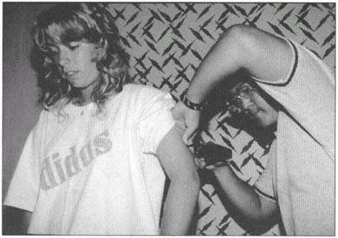
| Nữ | Nam | |
|---|---|---|
| Người Lớn | 15–25% | 8–20% |
| Thiếu Niên | 12–22% | 5–15% |
Kiểm Tra Sức Bền Hiếu Khí
Sức bền hiếu khí là khả năng tiếp nhận, vận chuyển và sử dụng oxy. Năng lượng hiếu khí được sử dụng trong các hoạt động kéo dài, nhịp độ ổn định, chủ yếu sử dụng các nhóm cơ lớn. Ví dụ bao gồm chạy bộ, đạp xe và bơi lội.
Sức bền trong môn thể dục nhịp điệu rất quan trọng trong quần vợt. Khi bạn trở nên khỏe mạnh hơn về thể dục nhịp điệu, bạn có thể phục hồi nhanh hơn giữa các điểm và hoạt động lâu hơn trước khi cảm thấy mệt mỏi. Khi sức bền của bạn được cải thiện, dây chằng và gân của bạn sẽ trở nên dẻo dai hơn, giảm nguy cơ chấn thương và tạo nền tảng cho việc tập luyện cường độ cao hơn.
Tất cả chúng tôi đều biết bạn cần rất nhiều sức bền để thi đấu trên sân đất nện chậm của Roland Garros trong Giải vô địch Pháp mở rộng. Những tay vợt như Sergi Bruguera và Thomas Muster có thể chiến đấu hàng giờ trên đất đỏ.
Tuy nhiên, hãy nhớ rằng ngay cả khi bạn không có điều kiện sử dụng sân đất nện, quần vợt trên sân cứng cũng đòi hỏi sức chịu đựng. Nền tảng hiếu khí mạnh mẽ sẽ cho phép bạn phục hồi hiệu quả giữa các điểm, thậm chí trong các trận đấu kéo dài và gần nhau. Để xem liệu bạn có đủ thể lực cho những trận đấu khó khăn đó hay không, hãy kiểm tra thể lực aerobic của bạn.
Một bài kiểm tra chính xác và đơn giản để đo lường thể lực hiếu khí của bạn là chạy một dặm rưỡi. Nếu bạn thực hiện trên một đường đua, bạn có thể dễ dàng kiểm tra một người chơi hoặc một nhóm người chơi. Vì đây là bài kiểm tra thông thường nên bạn cũng có thể so sánh với dữ liệu có sẵn từ các môn thể thao khác.
Mặc dù quần vợt bao gồm nhiều pha chạy nước rút ngắn trên sân nhưng cũng có phần thể dục nhịp điệu. Các trận đấu có thể kéo dài ba giờ hoặc lâu hơn, gây căng thẳng cho hệ thống hiếu khí. Khi hoàn thành quãng đường một dặm rưỡi, bạn nên tập trung chạy với tốc độ ổn định trong suốt sáu vòng. Bạn nên tập luyện với quãng đường dài hơn trong giai đoạn ngoài mùa giải và tiền mùa giải.
Cách Thực Hiện
- Đứng ở vạch xuất phát và về đích trên đường đua có độ cao 440 yard (chúng tôi khuyên dùng đường chạy bằng than hoặc kẻ sọc).
- Một đồng đội ra lệnh ''sẵn sàng, bắt đầu'' và bắt đầu bấm giờ.
- Hoàn thành một dặm rưỡi (sáu vòng) và ghi lại điểm số của bạn.
- So sánh điểm của bạn với điểm ở bảng 2.17.
| Tuyệt Vời | Tốt | Trung Bình | Cần Cải Thiện | |
|---|---|---|---|---|
| Nữ — Người Lớn | <11:49 | 11:49–13:43 | 13:43–15:08 | >15:08 |
| Nữ — Thiếu Niên | <10:30 | 10:30–11:00 | 11:00–11:30 | >11:30 |
| Nam — Người Lớn | <8:44 | 8:44–10:47 | 10:47–12:20 | >12:20 |
| Nam — Thiếu Niên | <9:45 | 9:45–10:15 | 10:15–11:00 | >11:00 |
Gói Tập Thể Dục Quần Vợt
Nhiều yếu tố góp phần tạo nên thành công trong môn quần vợt, và vì quần vợt là môn thể thao kỹ năng nên chỉ mạnh hay nhanh không khiến bạn trở thành người chơi giỏi hơn người khác. Tuy nhiên, bạn luôn có thể cải thiện khả năng thể chất và giải quyết những điểm yếu của mình. Những người chơi hàng đầu không ngừng tìm kiếm lợi thế hơn đối thủ của họ. Tất cả họ đều có thể đánh bóng tốt, vì vậy việc rèn luyện thể lực phù hợp có thể là sự khác biệt giúp họ vượt lên dẫn trước đối thủ. Tại sao bạn không tự mình kiểm tra những thành phần thể dục này giống như những gì các chuyên gia vẫn làm? Theo dõi kết quả kiểm tra thể lực có thể giúp bạn theo dõi hiệu suất của mình, giảm nguy cơ chấn thương và hiểu rõ hơn về khả năng thể lực của bạn. Sau đó, bạn có thể thiết kế các chương trình tập luyện phù hợp như đã nêu trong chương 8 và 9, dựa trên nhu cầu cá nhân của bạn.
Chương 3: Khởi Động Và Độ Dẻo Dai
Trong một cuộc phỏng vấn gần đây, John McEnroe được trích dẫn rằng "Kéo giãn giúp tôi không bị thương và di chuyển nhanh hơn một chút." McEnroe, một trong những nhà vô địch vĩ đại nhất nước Mỹ, đã gặp khó khăn trong sự nghiệp của mình với chấn thương gân khoeo, háng và thắt lưng. Giờ đây, anh ấy đánh giá cao lợi ích của việc giãn cơ và cũng trong cuộc phỏng vấn đó, anh ấy đã nói: "Khi tôi già đi, gân kheo của tôi trở nên rất căng, vì vậy đó là điều mà tôi thực sự phải căng ra." Bất kể tuổi tác, người chơi quần vợt đều có thể được hưởng lợi từ việc giãn cơ trước và sau khi thi đấu và tập luyện.
Một chương trình thể lực chất lượng dành cho quần vợt bao gồm sức mạnh, độ linh hoạt và sức bền, cũng như luyện tập yếm khí và hiếu khí. Nếu bỏ qua bất kỳ thành phần nào trong chương trình tập luyện của người chơi quần vợt, người chơi khó có thể phát huy hết tiềm năng hoạt động của mình và dễ bị chấn thương hơn khi thi đấu. Quần vợt đòi hỏi phải khởi động thích hợp và rèn luyện độ linh hoạt cho tất cả các vùng trên cơ thể. Chấn thương ở chi trên và chi dưới cũng như thân đã được báo cáo ở những người chơi chuyên nghiệp và giải trí và sẽ được thảo luận trong chương 10.
Khởi Động
Việc khởi động đóng một vai trò quan trọng trong chương trình thể lực của người chơi quần vợt. Bạn nên thực hiện các bài khởi động trước khi tập linh hoạt như bảng 3.1. Mục đích của việc khởi động là để chuẩn bị cho các mô cơ thể phản ứng tối ưu với các bài tập và các động tác giãn cơ được áp dụng trong quá trình tập luyện và để ngăn ngừa chấn thương. Các vận động viên thường sử dụng hai kiểu khởi động. Khởi động thụ động bao gồm việc truyền nhiệt bên ngoài vào cơ thể. Ví dụ về các phương pháp khởi động thụ động bao gồm chườm túi nhiệt ẩm, miếng đệm sưởi ấm hoặc xoáy nước ấm trước khi tập thể dục. Những kỹ thuật này làm tăng nhiệt độ mô nhưng không phải lúc nào cũng thực tế. Kiểu khởi động thứ hai là khởi động tích cực và bao gồm các bài tập cường độ thấp, giúp tăng nhiệt độ mô, tăng nhịp tim và giúp vận động viên tích cực chuẩn bị cho việc tập luyện.
Hoạt Động Được Đề Xuất
- Giắc cắm nhảy
- Thể dục mềm dẻo
- Chạy bộ chậm hoặc chạy bộ tại chỗ
- Đạp xe tại chỗ cường độ thấp
- Vòng tay lớn (theo chiều kim đồng hồ và ngược chiều kim đồng hồ)
Làm việc cho đến khi bạn đổ mồ hôi nhẹ cho biết thời gian và cường độ khởi động thích hợp. Bằng cách sử dụng các hoạt động được đề xuất, bạn thường có thể đạt được điều này trong vòng ba đến năm phút. Lợi ích bổ sung của việc khởi động đúng cách là cải thiện độ đàn hồi của mô và giảm nguy cơ chấn thương cơ và gân.
Bảng 3.1 — Kết Hợp Giãn Cơ Trong Quần Vợt
- Khởi động toàn thân (ba đến năm phút) để tăng nhiệt độ mô (chạy bộ chậm, bật nhảy, v.v.).
- Kéo dãn tĩnh các vùng chật hẹp và hạn chế.
- Kéo dài động với sự gia tăng dần dần về phạm vi và vận tốc của chuyển động.
- Chơi quần vợt.
- Giảm nhiệt độ giãn cơ tĩnh để ngăn ngừa đau nhức cơ bắp và tăng cường sự linh hoạt.
Rèn Luyện Độ Linh Hoạt
Huấn luyện độ linh hoạt thường bị bỏ qua nhiều nhất và ít được tuân thủ nhất trong một chương trình rèn luyện chất lượng. Một số lý do cho việc này bao gồm
- giãn cơ không có cảm giác dễ chịu;
- lợi ích của độ linh hoạt trên sân là không rõ ràng đối với người chơi;
- hầu hết người chơi không có hướng dẫn riêng, cụ thể về cách thức, lý do, cái gì và khi nào cần giãn cơ; và
- độ linh hoạt được huấn luyện viên ít chú trọng hơn so với các thành phần khác của thể lực.
Chúng tôi định nghĩa độ linh hoạt là mức độ mà các cơ, gân và mô liên kết xung quanh khớp có thể kéo dài và uốn cong. Thực hiện gần như tất cả các cú đánh quần vợt đòi hỏi các mô phải kéo dài và uốn cong. Có một số loại độ linh hoạt. Độ linh hoạt tĩnh mô tả lượng chuyển động bạn có xung quanh một khớp hoặc một loạt khớp khi ở trạng thái nghỉ ngơi. Độ linh hoạt động đề cập đến chuyển động tích cực xung quanh một khớp hoặc một loạt khớp và thể hiện mức độ chuyển động mà người chơi có sẵn để thực hiện các cú giao bóng, cú đánh nền và cú vô lê. Độ linh hoạt động bị hạn chế bởi khả năng chống lại chuyển động của các cấu trúc khớp (xương và dây chằng); khả năng biến dạng của các mô liên kết mềm (cơ và gân); và các thành phần thần kinh cơ của cơ thể, bao gồm cả dây thần kinh.
Các yếu tố ảnh hưởng đến độ linh hoạt bao gồm di truyền, các thành phần thần kinh cơ và nhiệt độ mô. Về di truyền, hình dáng cơ thể quyết định tiềm năng linh hoạt tổng thể của chúng ta. Mặc dù hầu hết mọi người có xu hướng không linh hoạt, nhưng một số lại có khớp lỏng lẻo hoặc siêu linh hoạt. Các khía cạnh di truyền và thiết kế cơ thể ảnh hưởng đến tiềm năng linh hoạt của chúng ta bao gồm hình dạng và hướng của bề mặt khớp, cũng như cấu trúc và thiết kế của bao khớp, cơ, gân và dây chằng.
Yếu tố thứ hai ảnh hưởng đến độ linh hoạt liên quan đến các thành phần thần kinh cơ. Trục cơ là một cơ chế giám sát, nằm giữa các sợi cơ. Khi bạn căng cơ quá nhanh, trục cơ sẽ gửi một thông điệp đến hệ thần kinh trung ương (CNS) để co cơ. Với phản xạ căng này, cơ sẽ rút ngắn và co lại, cản trở quá trình kéo giãn. Vì vậy, khi giãn cơ, chúng tôi khuyên bạn nên vận động chậm rãi, từ từ để giảm thiểu tác động phản xạ của trục cơ và tăng cường quá trình giãn cơ.
Yếu tố thứ ba ảnh hưởng đến độ linh hoạt là nhiệt độ của mô. Nhiệt làm tăng tính giãn dài và uốn cong của mô mềm. Làm nóng trước khi giãn cơ bằng cách tăng nhiệt độ cơ thể hoặc đổ mồ hôi nhẹ sẽ giúp bạn linh hoạt hơn, với
ít chấn thương vi mô hơn đối với các mô bạn đang kéo căng. Ở phần sau của chương này, chúng ta sẽ thảo luận về cách kết hợp việc giãn cơ vào chương trình tập luyện quần vợt.
Lĩnh Vực Cần Đào Tạo Linh Hoạt
Rất ít người có thể linh hoạt quanh các khớp xương của họ như họ cần, và quần vợt đặt ra yêu cầu to lớn đối với các bộ phận cơ thể khác nhau trong chuyển động cực đoan của họ. Ví dụ, phạm vi chuyển động mà vai cần trong quá trình xoay quả giao bóng ra bên ngoài sẽ gây áp lực rất lớn lên phía trước vai. Người chơi quần vợt rất linh hoạt trong động tác xoay vai bên ngoài này do chuyển động giao bóng, nhưng lại thể hiện khả năng xoay bên trong hạn chế ở phía chơi quần vợt của họ.
Để chứng minh điều này, hãy thử chạm tay ra sau lưng như trong hình 3.1a bằng cách đặt cánh tay cầm vợt của bạn phía sau đầu và cổ và cánh tay không cầm vợt ra sau lưng. Nhiều người chơi có thể chạm hoặc gần chạm hai tay vào nhau ở vị trí này. Bây giờ đảo ngược vị trí của hai bàn tay và cố gắng chạm hai bàn tay vào nhau như người chơi thuận tay phải đang làm trong hình 3.1b. Bạn có thể cảm nhận rõ ràng rằng việc chạm tay sẽ khó khăn hơn khi cánh tay cầm vợt của bạn đưa lên từ phía sau lưng.
Điều này chứng tỏ độ linh hoạt của chuyển động xoay bên ngoài trên cánh tay vợt tăng lên cũng như độ linh hoạt của chuyển động xoay bên trong giảm đi. Để giải quyết sự mất cân bằng về độ linh hoạt này, chúng tôi khuyên bạn nên thực hiện các động tác kéo giãn cụ thể cho các cơ ở phía sau vai (cơ xoay ngoài). Chúng tôi không khuyến nghị các bài tập gây căng thẳng cho phần trước của vai bằng cách đặt hai tay ra sau cơ thể (chẳng hạn như trước cửa) đối với người chơi quần vợt và vận động viên ném.
Các ví dụ bổ sung về phạm vi chuyển động cực độ trong khi chơi quần vợt bao gồm
- các kiểu chuyển động bên gây căng thẳng cho hông và háng,
- ổn định hoạt động của cơ bụng trong quá trình giao bóng quần vợt, và
- Các kiểu chuyển động bùng nổ của cơ bắp chân và gân Achilles.
Trong suốt trận đấu, người chơi phải tạo ra lực và tốc độ lớn khi ở tư thế dang rộng. Một chương trình thể lực bao gồm các bài tập linh hoạt đảm bảo rằng bạn sẽ có phạm vi chuyển động phù hợp
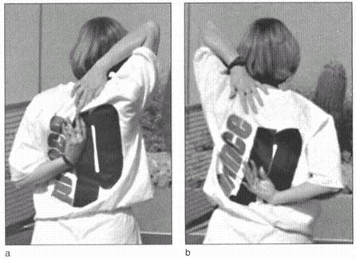
cần có hiệu suất tối ưu. Độ linh hoạt, kết hợp với khả năng tạo ra sức mạnh trong những chuyển động cực độ này, là điều cần thiết trong quần vợt. Chỉ giãn cơ sẽ không ngăn ngừa được chấn thương hoặc nâng cao hiệu suất; tuy nhiên, sức mạnh cân bằng trong phạm vi chuyển động linh hoạt, ít hạn chế hơn sẽ giúp ích. Bạn chỉ có thể đạt được mục tiêu này bằng cách sử dụng một chương trình tập luyện hoàn chỉnh cho quần vợt.
Lợi Ích Của Độ Linh Hoạt
- Cho phép tăng cường sức mạnh dành riêng cho thể thao khi chuyển động cực độ
- Giảm bớt căng thẳng bằng cách giúp mô phân phối lực tác động và lực tác động hiệu quả hơn
- Làm nhẹ bớt công việc của các nhóm cơ đối lập bằng cách cung cấp chuyển động ít bị hạn chế hơn
- Tăng cường cung cấp máu và nuôi dưỡng mô
- Cho phép hình thức tốt mà không cần bù đắp từ các phần cơ thể khác
- Khắc phục sự mất cân bằng do thể thao và hoạt động hàng ngày tạo ra
Bài Tập Dẻo Dai
Một trong một số loại bài tập linh hoạt, kéo dài đạn đạo liên quan đến việc bật nhanh ở mức chuyển động cực độ. Vì nó có khả năng gây hại và không mang lại lợi ích đáng kể so với các kỹ thuật khác nên chúng tôi không khuyến nghị kéo giãn theo đường đạn đạo. Kéo căng đạn đạo thường gây ra phản xạ căng, do đó nó có thể cản trở độ linh hoạt bằng cách khởi động cơ chế tự bảo vệ trong cơ, khiến cơ bị ngắn lại. Kéo căng bằng đạn đạo có thể gây thương tích vì có nguy cơ vượt quá giới hạn kéo dài và uốn cong của mô.
Loại bài tập linh hoạt thứ hai rất được khuyến khích là giãn cơ tĩnh. Kéo giãn tĩnh bao gồm các chuyển động chậm, cô lập, mượt mà và giữ phạm vi cực xa một cách thụ động. Đây là phương pháp thiết thực và hiệu quả nhất và có thể cải thiện độ linh hoạt một cách an toàn và hiệu quả. Thực hiện đúng cách, nó đòi hỏi ít năng lượng, ít gây nguy hiểm và không đau nhức. Bảng 3.2 liệt kê các quy trình chúng tôi đề xuất để kéo giãn tĩnh.
Loại bài tập linh hoạt thứ ba là giãn cơ năng động, mô phỏng các chuyển động trong môn thể thao mà không bị căng thẳng do chịu trọng lượng hoặc va đập. Kiểu giãn cơ này có hiệu quả ngay trước khi chơi. Bộ phận cơ thể chủ động thực hiện các chuyển động quần vợt một cách có kiểm soát. Chuyển động dần dần được phóng đại, tăng kích thước của các chuyển động chảy. Bảng 3.3 liệt kê các ví dụ về độ giãn động.
Bảng 3.2 — Kéo Dài Tĩnh
- Khởi động từ ba đến năm phút.
- Nhấn mạnh vào các chuyển động chậm, nhịp nhàng và phối hợp hít thở sâu. Hít sâu, thở ra khi bạn duỗi người đến mức cử động mà không thấy đau, sau đó thả lỏng nhẹ nhàng. Giữ tư thế căng tĩnh này trong 15 đến 20 giây khi bạn thở bình thường. Lặp lại hai hoặc ba lần.
- Bạn không nên cảm thấy đau. Nếu thấy đau hoặc cảm thấy nóng rát thì có nghĩa là bạn đã duỗi quá mức.
- Trước tiên hãy căng cơ bên hông.
- Chỉ kéo dài đến giới hạn của bạn.
- Đừng khóa khớp của bạn.
- Đừng nảy lên.
- Trước tiên hãy kéo căng các nhóm cơ lớn hơn và lặp lại cùng một thói quen mỗi ngày.
- Thời điểm lý tưởng để giãn cơ là ngay sau khi tập aerobic.
Nhận thấy vai trò quan trọng của độ linh hoạt trong hiệu suất cao nhất và phòng ngừa chấn thương, ủy ban Khoa học Thể thao của Hiệp hội Quần vợt Hoa Kỳ đã đưa ra các khuyến nghị cho một chương trình tập luyện độ linh hoạt. Các chỉnh sửa linh hoạt dành riêng cho từng cá nhân và khớp.
Bạn có thể sử dụng các bài kiểm tra đo lường độ linh hoạt để xác định các lĩnh vực không linh hoạt và để chứng minh sự tiến bộ trong một chương trình linh hoạt cụ thể. Một ví dụ về bài kiểm tra thích hợp về độ linh hoạt là bài kiểm tra ngồi và vươn, đo độ linh hoạt của lưng dưới và gân kheo (xem trang 9 trong chương 2).
Bạn có thể đánh giá khả năng xoay bên trong của vai kết hợp bằng cách đặt mặt sau của cả hai tay với ngón cái hướng lên phía lưng dưới, vươn lên về phía xương bả vai càng cao càng tốt. Mặc dù cánh tay thuận không có khả năng vươn cao bằng cánh tay không thuận ở người chơi quần vợt (xem hình 3.1a và b), việc giãn cơ sau vai sẽ tăng cường phạm vi chuyển động này và giảm sự khác biệt giữa hai vai. Một cách cụ thể hơn để đo độ xoay trong và ngoài của vai là dùng máy đo góc (xem trang 11 ở chương 2). Một nhà trị liệu vật lý, huấn luyện viên thể thao hoặc nhà sinh lý học thể dục có thể đo chính xác độ xoay bên trong và bên ngoài của vai và thực hiện các bài kiểm tra khác để đo độ linh hoạt.
Hình 3.2, a–b mô tả hệ thống cơ bắp của con người để tham khảo khi thiết kế chương trình rèn luyện độ linh hoạt của bạn. Trong nhiều trường hợp trong chương này, chúng tôi đưa ra nhiều bài tập linh hoạt cho từng bộ phận cơ thể vì một số bài tập cơ bản hơn những bài khác. Nếu một vùng trên cơ thể bị hạn chế phạm vi chuyển động, bạn có thể muốn thực hiện nhiều bài tập kéo giãn cho vùng cơ thể đó. Khi bạn có thể thực hiện một động tác kéo dãn, bạn có thể
Bảng 3.3 — Kéo Dài Năng Động
- Xoay vợt theo từng cung chuyển động—các chuyển động thuận tay, trái tay và giao bóng.
- Dùng hai cánh tay xen kẽ nhau vươn lên, giống như đang leo lên một cái thang, kết hợp thân mình vào từng động tác.
- Chống tay lên hông, uốn cong sang mỗi bên.
- Hai tay đặt ở hai đầu vợt giơ cao trên đầu, uốn cong sang bên.
- Giữ vợt bằng hai tay ở hai đầu, xoay thân cây bằng cách vặn sang bên.
- Thực hiện chuyển động đạp xe bằng mỗi chân, vẽ các vòng tròn lớn dần.
- Tháng ba, luân phiên hai chân, cho đến khi đầu gối cao ngang mũi.
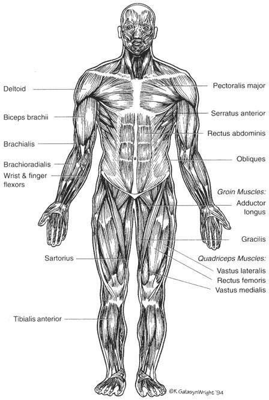
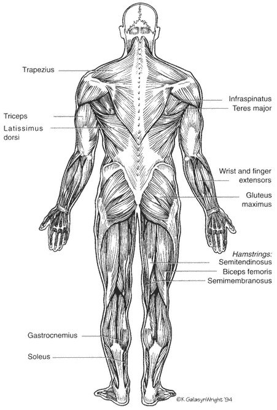
muốn kéo dài vùng đó hơn. Chúng tôi khuyên bạn nên tập trung vào những vùng cơ thể kém linh hoạt nhất. Chúng tôi khuyên bạn không nên chỉ kéo giãn những vùng linh hoạt nhất hoặc dễ dàng nhất để vận động viên duỗi ra. Điều này sẽ làm mất thời gian của các khu vực khác cần được chú ý đặc biệt và có thể làm giảm sự ổn định của khớp hoặc thúc đẩy sự mất cân bằng.
Giãn Cơ Vai Và Cánh Tay
Căng Cơ Vai Và Thân
Nhóm cơ chính: cơ Latissimus dorsi, cơ tam đầu, bao dưới của vai.
Tư thế chuẩn bị: Đứng với hai tay trên đầu, giữ khuỷu tay phải bằng tay trái.
Động tác thực hiện: Dùng tay trái kéo khuỷu tay phải ra sau đầu. Giữ khuỷu tay của bạn ở vị trí này và uốn cong thân mình sang bên trái. Lặp lại ở phía đối diện.
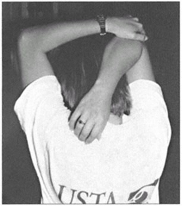
Căng Cơ Trên Đầu
Nhóm cơ chính: Cơ liên sườn, bao dưới của vai.
Tư thế chuẩn bị: Đứng với hai tay trên đầu, cổ tay bắt chéo và lòng bàn tay chạm vào nhau.
Động tác tập thể dục: Hơi duỗi tay về phía sau và cao nhất có thể. Uốn cong một vài inch sang hai bên để tăng độ căng cho thân cây của bạn.
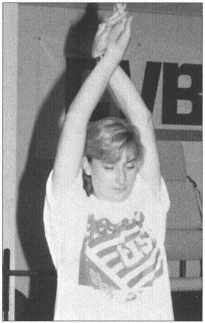
Căng Cơ Vai Sau
Nhóm cơ chính: Cơ xoay vai, cơ lưng trên (xương bả vai).
Tư thế chuẩn bị: Đứng giữ thẳng cánh tay phải trước mặt. Đặt tay trái của bạn phía sau khuỷu tay phải của bạn.
Bài tập Thực hiện: Kéo ngang cơ thể bằng tay trái. Không cho phép thân cây của bạn xoay. Đứng dựa vào tường và giữ cả hai xương bả vai chạm vào tường trong khi thực hiện động tác kéo giãn có thể hữu ích.
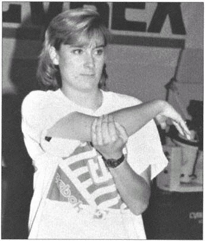
Bóp Vai
Nhóm cơ chính: Trước ngực, sau, vai.
Tư thế chuẩn bị: Với các ngón tay đan xen phía sau đầu, giữ khuỷu tay của bạn thẳng sang một bên và phần thân trên của bạn ở tư thế thẳng đứng, thẳng hàng.
Bài tập Hành động: Kéo hai khuỷu tay của bạn lại phía sau và kéo hai bả vai lại với nhau để tạo lực căng cho lưng trên và bả vai.
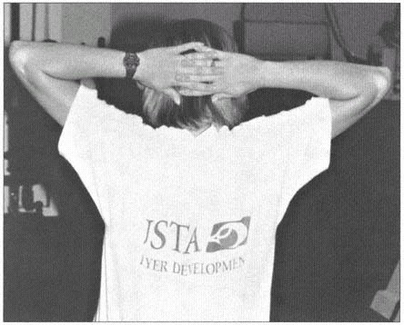
Căng Cơ Gấp Cẳng Tay
Nhóm cơ chính: Cơ cẳng tay (cơ gấp và cơ quay sấp).
Tư thế chuẩn bị: Khuỷu tay thẳng và cẳng tay ngửa (lòng bàn tay hướng lên).
Động tác thực hiện: Dùng tay đối diện duỗi cổ tay ra sau (duỗi), khuỷu tay giữ thẳng.
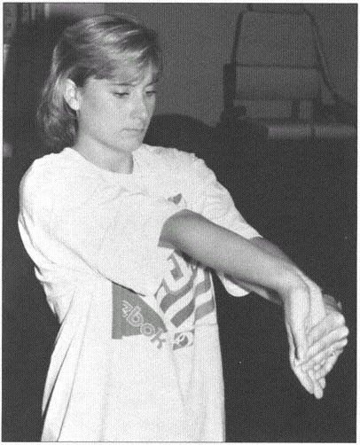
Cơ Duỗi Cẳng Tay
Nhóm cơ chính: Cơ cẳng tay (cơ duỗi và cơ ngửa).
Tư thế chuẩn bị: Khuỷu tay thẳng và cẳng tay quay sấp (lòng bàn tay úp xuống).
Động tác thực hiện: Dùng tay đối diện duỗi cổ tay xuống (uốn cong), giữ thẳng khuỷu tay.
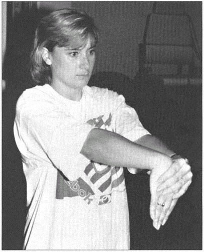
Kéo Dãn Hông Và Chân
Hình 4 Căng Gân Kheo
Nhóm cơ chính: Cơ gân kheo.
Tư thế chuẩn bị: Ngồi với chân bạn sẽ duỗi thẳng về phía trước, đầu gối thẳng và các ngón chân hướng lên trên. Cong đầu gối đối diện và đặt lòng bàn chân lên đầu gối mở rộng.
Động tác thực hiện: Giữ lưng thẳng và đầu gối càng thẳng càng tốt, đưa hai tay về phía trước về phía bàn chân.
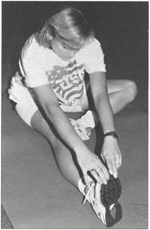
Căng Gân Kheo
Nhóm cơ chính: Cơ gân kheo, cơ mông.
Tư thế chuẩn bị: Nằm ngửa, uốn cong chân bạn sẽ duỗi một góc 90 độ ở hông. Hỗ trợ chân bằng cách nắm cả hai tay sau đầu gối. Giữ chân đối diện thẳng.
Động tác thực hiện: Duỗi thẳng chân và nâng cao về phía thân người. Dùng tay nhẹ nhàng tăng độ giãn. Hướng các ngón chân về phía mặt để tăng độ căng.
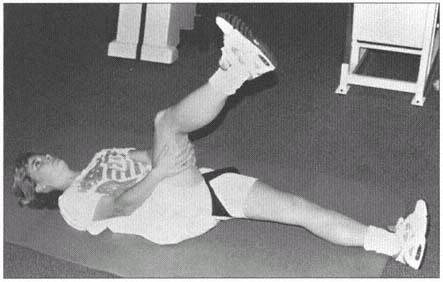
Cơ Gân Kheo Siêu Căng
Nhóm cơ chính: Cơ gân kheo, cơ bắp chân.
Tư thế chuẩn bị: Đặt chân cao khoảng thắt lưng lên một vật (bàn hoặc ghế).
Động tác thực hiện: Từ từ cúi người về phía trước ở thắt lưng, đưa thân về phía đùi. Uốn các ngón chân về phía mặt sẽ tăng cường độ căng.
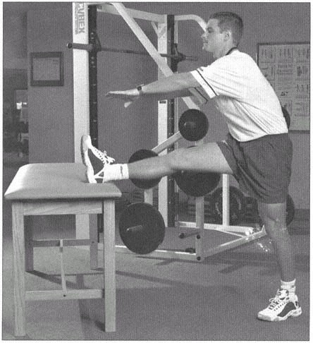
Kéo Dãn Cơ Tứ Đầu Cò
Nhóm cơ chính: Cơ tứ đầu, cơ gấp hông.
Tư thế chuẩn bị: Đứng trên một chân, uốn cong đầu gối đối diện trong khi nắm lấy bàn chân hoặc mắt cá chân.
Động tác thực hiện: Giữ lưng thẳng và mông hóp xuống, uốn cong đầu gối, đưa chân về phía mông và hướng đầu gối xuống đất. Đừng vặn đầu gối.
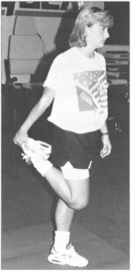
Căng Cơ Tứ Đầu Dễ Bị Tổn Thương
Nhóm cơ chính: Cơ tứ đầu, cơ gấp hông.
Tư thế chuẩn bị: Nằm sấp.
Động tác thực hiện: Cong đầu gối về phía mông trong khi dùng tay nắm lấy bàn chân hoặc mắt cá chân. Kéo chân thẳng về phía mông, không vặn đầu gối.
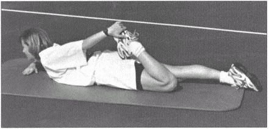
Căng Cơ Háng
Nhóm cơ chính: Cơ háng, cơ đùi trong.
Tư thế chuẩn bị: Ở tư thế đứng, hai chân rộng bằng vai, đặt hai tay lên hông.
Động tác tập thể dục: Với các ngón chân hơi hướng ra ngoài, từ từ uốn cong đầu gối cho đến khi bạn cảm thấy căng ở vùng háng. Lăn trọng lượng của bạn lên mặt trong của bàn chân đối diện.
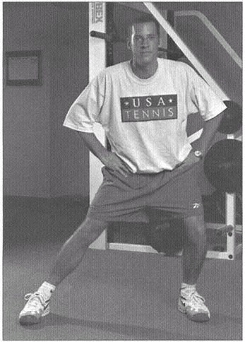
Ngồi Căng Cơ Háng
Nhóm cơ chính: Cơ háng, cơ đùi trong.
Tư thế chuẩn bị: Ngồi khép hai lòng bàn chân lại với nhau, đầu gối hướng ra ngoài, giữ các ngón chân.
Động tác thực hiện: Nhẹ nhàng kéo về phía trước, uốn cong từ hông và đưa ngực về phía chân. Đừng làm cong lưng trên của bạn. Dùng khuỷu tay đẩy nhẹ đầu gối về phía mặt đất.
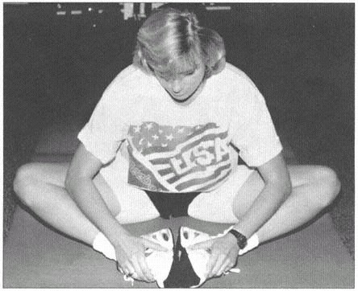
Xoay Hông
Nhóm cơ chính: Cơ hông bên, lưng dưới.
Tư thế bắt đầu: Nằm ngửa, gập đầu gối, bàn chân đặt phẳng trên sàn. Đặt cánh tay của bạn sang một bên trên mặt đất để ổn định phần lưng trên. Đặt mắt cá chân trái của bạn bên ngoài đầu gối phải.
Bài tập Hành động: Dùng chân trái kéo chân phải về phía sàn cho đến khi bạn cảm thấy căng dọc theo bên ngoài hông hoặc lưng dưới. Giữ lưng trên và vai phẳng với sàn. Không chạm sàn bằng đầu gối phải mà hãy duỗi nó trong giới hạn của bạn.
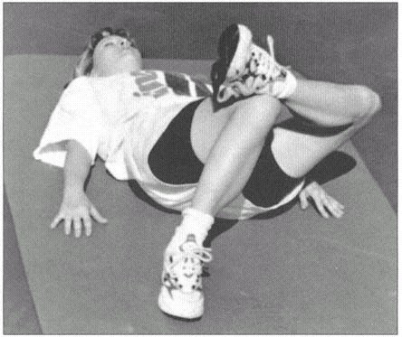
Căng Cơ Piriformis
Nhóm cơ chính: Cơ Piriformis.
Tư thế chuẩn bị: Nằm ngửa, gập đầu gối trái. Đặt mắt cá chân phải ngay phía trên đầu gối trái.
Động tác thực hiện: Từ từ đưa đầu gối trái về phía ngực. Bạn sẽ cảm thấy căng ở mông phải.
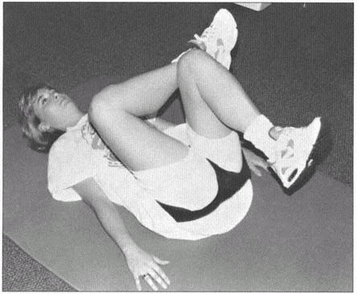
Kéo Giãn Cơ Xoay Hông
Nhóm cơ chính: Cơ xoay hông, cơ hông bên, cơ đùi.
Tư thế chuẩn bị: Nằm ngửa, hai tay dang sang một bên và hai chân duỗi thẳng.
Động tác tập thể dục: Nâng chân tập lên 9 độ, sau đó hạ chân kia xuống. Giữ thân và cả hai vai của bạn trên sàn trong suốt quãng đường.
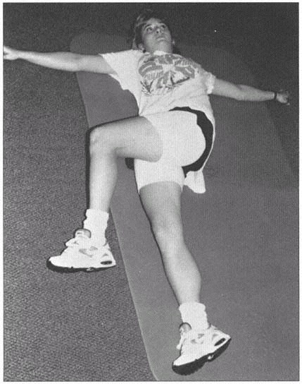
Căng Dây Chậu Chày
Nhóm cơ chính: Băng chậu chày.
Tư thế chuẩn bị: Đứng với tay phải trên tường, chân phải cách tường khoảng 3 feet và chân trái bắt chéo qua bên phải.
Động tác thực hiện: Nhẹ nhàng đẩy hông phải về phía tường. Tăng độ giãn bằng cách đứng xa tường hơn.
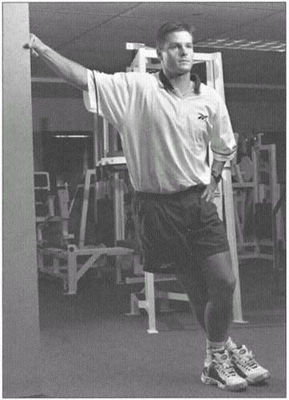
Kéo Dài Bắp Chân
Nhóm cơ chính: Cơ bắp chân (dạ dày, cơ dép).
Tư thế chuẩn bị: Đứng trước một bức tường hoặc hàng rào với một chân ở sau chân kia hai hoặc ba feet và các ngón chân hướng về phía trước.
Động Tác Thực Hiện:
a. Giữ đầu gối phía sau thẳng và gót chân chạm sàn, uốn cong đầu gối phía trước và nghiêng người về phía trước. Đừng cong lưng.
b. Lặp lại với đầu gối sau hơi cong, giữ gót chân trên mặt đất.
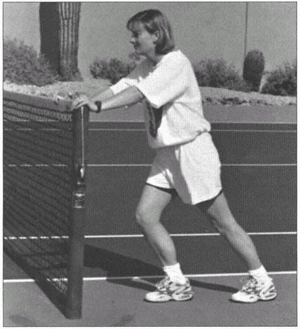
Kéo Giãn Thân
Co Giãn Đầu Gối Vào Ngực
Nhóm cơ chính: Thắt lưng, mông.
Tư thế chuẩn bị: Đứng hai chân rộng bằng vai.
Động tác thực hiện: Cong một chân và nắm lấy cẳng chân ngay dưới đầu gối. Từ từ kéo đầu gối về phía ngực.
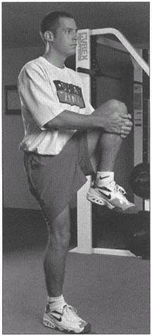
Gấp Đôi Đầu Gối Vào Ngực
Nhóm cơ chính: Thắt lưng, mông.
Tư thế chuẩn bị: Nằm ngửa, gập đầu gối.
Động tác thực hiện: Đưa đầu gối về phía ngực bằng cách nắm lấy cẳng chân ngay dưới đầu gối.
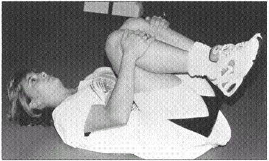
Xoay Thân Mình
Nhóm cơ chính: Thắt lưng, xoay hông.
Tư thế chuẩn bị: Ở tư thế ngồi, đặt mắt cá chân phải bên ngoài đầu gối trái.
Động tác thực hiện: Đưa tay trái vòng qua đầu gối phải. Từ từ xoay vai và thân sang phải, đồng thời nhìn qua vai phải.
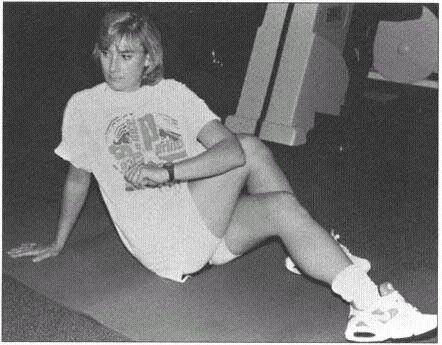
Chương 4: Rèn Luyện Sức Mạnh
Những tay vợt như Patrick Rafter và Lindsay Davenport có thể đánh bóng mạnh ở game cuối cùng của set cuối cùng cũng như trong game đầu tiên của trận đấu. Những người chơi chuyên nghiệp này đã cam kết thực hiện các bài tập sức mạnh và sức mạnh cho phép cơ bắp của họ hoạt động ở mức cao nhất. Chương này sẽ định nghĩa các thuật ngữ phổ biến, phác thảo các thành phần quan trọng của chương trình rèn luyện sức mạnh và cung cấp cho bạn các ví dụ về các bài tập dành riêng cho môn quần vợt để cải thiện sức mạnh và sức bền cơ bắp của bạn.
Chúng ta có thể định nghĩa rèn luyện sức mạnh là một loại bài tập đòi hỏi cơ bắp của cơ thể phải di chuyển để chống lại một lực đối nghịch. Sức mạnh là lượng lực tối đa mà cơ có thể tạo ra. Người chơi quần vợt phải có sức mạnh cơ bắp cao và do tính chất lặp đi lặp lại của trò chơi, họ cũng phải có khả năng co cơ nhiều lần. Sức bền cơ bắp là khả năng co bóp liên tục một cơ hoặc một nhóm cơ.
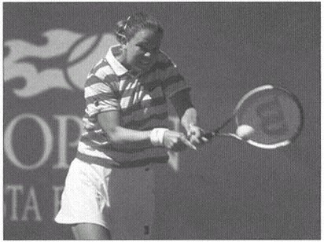
Sức mạnh là lượng công thực hiện trên một đơn vị thời gian và chúng ta có thể coi nó là sức bùng nổ của cơ hoặc nhóm cơ. Sức mạnh cơ bắp là hàm số của sức mạnh nhân với tốc độ. Chúng ta có thể minh họa rõ nhất sức mạnh khác với sức mạnh như thế nào bằng cách so sánh một vận động viên thể hình với một vận động viên quần vợt.
Một vận động viên thể hình rèn luyện cơ bắp của mình tới sáu giờ mỗi ngày để đạt được kích thước, sức mạnh và ngoại hình cơ bắp như mong muốn. Phương pháp tập luyện dành cho người tập thể hình nhấn mạnh vào các động tác chậm, mạnh với mức kháng lực cao, ít lần lặp lại hoặc âm lượng thấp. Mặc dù vận động viên thể hình có thể tạo ra lực lớn nhưng họ không thể tạo ra lực (lực ở tốc độ cao) và thiếu khả năng di chuyển bùng nổ cần thiết cho quần vợt. Việc rèn luyện hệ thống cơ bắp của bạn để chơi quần vợt đòi hỏi mức độ kháng cự thấp hơn, số lần lặp lại nhiều hơn và các bài tập luyện tốc độ cao cho phép cơ bắp tạo ra sức mạnh. Việc tập luyện quần vợt phải đáp ứng cả ba lĩnh vực: sức mạnh, sức mạnh và sức bền.
Bảng 4.1 cho thấy cơ nào được sử dụng trong các cú đánh quần vợt cụ thể. Chúng tôi khuyên bạn nên nhắm mục tiêu vào các cơ được sử dụng thường xuyên này cũng như các cơ giúp ổn định và giảm tốc độ của cơ thể bằng chương trình rèn luyện sức mạnh, dành riêng cho quần vợt, nhấn mạnh vào các hành động đồng tâm và lập dị.
Điều Khoản Huấn Luyện Kháng Chiến
Các vận động viên sử dụng một số hình thức rèn luyện kháng lực để phát triển sức mạnh cơ bắp, sức mạnh và sức bền. Người chơi quần vợt ít sử dụng bài tập sức mạnh đẳng cự nhất. Huấn luyện sức mạnh đẳng cự không yêu cầu các sợi cơ ngắn lại hoặc dài ra và không yêu cầu cử động khớp. Một ví dụ phổ biến của hình thức tập thể dục tĩnh này là đặt lòng bàn tay trước ngực và đẩy chúng vào nhau.
Một hình thức rèn luyện sức mạnh khác là đẳng trương. Người chơi quần vợt có thể sử dụng phương pháp rèn luyện kháng lực đẳng trương, năng động hơn và sử dụng trọng lượng hoặc độ căng không đổi (như tạ hoặc máy tập tạ tại phòng tập thể dục). Hình thức rèn luyện sức mạnh này bao gồm chuyển động của khớp và làm ngắn và kéo dài các sợi cơ. Có hai loại co thắt xảy ra trong quá trình rèn luyện sức mạnh đẳng trương: đồng tâm và lệch tâm.
Trong sự co đồng tâm, các sợi cơ co lại và rút ngắn lại. Một ví dụ về co cơ đồng tâm là giơ tay và cẳng tay về phía vai trong khi thực hiện động tác gập bắp tay. Khớp khuỷu tay di chuyển khi sợi cơ ngắn lại. Sự co lệch tâm xảy ra khi sợi cơ dài ra. Sử dụng ví dụ về động tác uốn cong bắp tay, sự co lệch tâm xảy ra khi bạn từ từ hạ tay và cẳng tay ra khỏi vai.
| Hành Động | Cơ Bắp Được Sử Dụng | |
|---|---|---|
| Các Cơ Được Sử Dụng Trong Cú Thuận Tay Và Vô-lê | ||
| Đẩy Lùi | Soleus, gastrocnemius, quadriceps, gluteals | |
| Xoay Thân Cây | Obliques, spinal erectors | |
| Cú Đánh Thuận Tay | Anterior deltoid, pectorals, shoulder internal rotators, elbow flexors (biceps), serratus anterior | |
| Các Cơ Được Sử Dụng Trong Cú Trái Tay Bằng Một Tay Và Vô-lê | ||
| Đẩy Lùi | Soleus, gastrocnemius, quadriceps, gluteals | |
| Xoay Thân Cây | Obliques, spinal erectors | |
| Cú Đánh Trái Tay | Rhomboids and middle trapezius, posterior deltoid, middle deltoid, shoulder external rotators, triceps, serratus anterior | |
| Các Cơ Được Sử Dụng Trong Cú Trái Tay Bằng Hai Tay | ||
| Đẩy Lùi | Soleus, gastrocnemius, quadriceps, gluteals | |
| Xoay Thân Cây | Obliques, spinal erectors | |
| Cú Đánh Trái Tay — Bên Không Thuận | Pectorals, anterior deltoid, shoulder interior rotators | |
| Cú Đánh Trái Tay — Bên Chiếm Ưu Thế | Rhomboids and middle trapezius, posterior deltoid, middle deltoid, shoulder external rotators, triceps, serratus anterior | |
| Cơ Bắp Được Sử Dụng Trong Cú Giao Bóng Và Cú Đánh Trên Cao | ||
| Xoay Thân Cây | Obliques, spinal erectors | |
| Duỗi Gối Và Hông Trước Khi Va Chạm | Quadriceps, gluteals | |
| Xoay Cánh Tay | Pectorals, shoulder interior rotators, latissimus, triceps | |
| Nối Dài Cánh Tay | Triceps | |
| Gập Cổ Tay | Wrist flexors |
(bảng tiếp theo ở trang tiếp theo)
(bảng tiếp theo từ trang trước)
Rèn Luyện Sức Mạnh Cho Quần Vợt
Quần vợt là môn thể thao nhanh, năng động, đòi hỏi sự co cơ mạnh mẽ và lặp đi lặp lại. Chức năng thể lực quần vợt phải bao gồm rèn luyện sức mạnh động thay vì luyện tập tĩnh, đẳng cự.
Việc rút ngắn và kéo dài các sợi cơ trong quá trình tập luyện là rất quan trọng vì quần vợt đòi hỏi những sự co cơ này trong mỗi cú đánh và chuyển động của cơ thể. Thông thường, người chơi sử dụng các cơn co lệch tâm để giảm tốc và kiểm soát hoặc ổn định cơ thể, đồng thời sử dụng các cơn co đồng tâm để tạo ra chuyển động và tăng tốc cho cơ thể. Ví dụ, các cơn co thắt lệch tâm xảy ra ở cơ đùi khi bạn tiếp đất bằng chân và hồi phục để thực hiện một cú đánh mặt đất rộng thuận tay hoặc trái tay. Các cơn co đồng tâm xảy ra ở phía trước vai của bạn khi bạn tăng tốc vợt về phía trước để đánh một cú giao bóng hoặc thuận tay.
Bạn có thể thực hiện các bài tập đẳng trương với trọng lượng cơ thể, tạ tự do như tạ hoặc tạ, bóng tập, ống cao su và máy tập tạ. Mặc dù không có một hình thức tập thể dục đẳng trương nào tốt nhất cho người chơi quần vợt, nhưng mỗi hình thức đều có ưu điểm và nhược điểm. Ví dụ, trọng lượng cơ thể luôn có sẵn, bạn mang nó theo bên mình mọi lúc mọi nơi, nhưng bạn không thể dễ dàng thay đổi trọng lượng cơ thể khi bạn khỏe hơn để tạo ra lực cản lớn hơn.
Sử dụng tạ tự do là một hình thức tập luyện tiết kiệm chi phí, đòi hỏi phải có khả năng kiểm soát tốt trong quá trình nâng vì không có đường dẫn hướng hoặc đường chuyển động như máy tập tạ cung cấp. Việc sử dụng tạ tự do buộc bạn phải ổn định tạ theo mọi hướng trong khi di chuyển nó theo kiểu chuyển động chính. Điều này tác động lên các nhóm cơ thứ cấp giúp ổn định các khớp mà bạn đang tập luyện, nhưng đòi hỏi kỹ năng và sự giám sát cao hơn do khả năng kiểm soát kém hơn. Một lợi ích nữa của nhiều máy tập tạ là khả năng thay đổi lực cản trong phạm vi chuyển động của bài tập.
Một loại vận động viên kháng cự khác thường sử dụng là ống cao su hoặc dây cao su. Dạng điện trở này được ưa chuộng vì nó tiết kiệm chi phí, dễ di chuyển và mạnh vì bạn kéo dây càng xa thì điện trở tạo ra càng lớn.
Dù bạn tập bài tập đẳng trương nào thì yếu tố quan trọng nhất vẫn là chuyển động. Các khớp di chuyển, các cơ kéo dài và rút ngắn, và điều này bắt chước các hành động bạn thực hiện khi thực hiện một cú giao bóng hoặc cú đánh chạm đất. Hầu hết các bài tập trong chương này là bài tập đẳng trương dành cho người chơi quần vợt. Họ sử dụng tạ tự do, ống cao su và máy tập tạ để cung cấp cho bạn chương trình rèn luyện kháng lực bằng bất kỳ phương pháp nào có sẵn cho bạn.
Huấn luyện kháng lực đẳng động sử dụng vận tốc không đổi và lượng lực cản thay đổi. Nó sử dụng một cỗ máy đắt tiền và kỹ thuật cao, không cho phép hầu hết người chơi đưa hình thức kháng cự này vào chiến dịch của họ.
đào tạo. Máy Isokinetic được sử dụng rộng rãi trong việc phục hồi chấn thương và trong nghiên cứu, đồng thời chúng đã cung cấp cho các nhà khoa học thể thao những thông tin quan trọng liên quan đến điểm mạnh và điểm yếu của hệ thống cơ xương của người chơi quần vợt.
Trong mỗi loại kháng lực để tăng sức mạnh, có hai hình thức tập luyện chính. Hai hình thức này là bài tập đơn khớp và bài tập đa khớp. Trong bài tập một khớp, vận động viên sẽ tập một nhóm cơ và khớp chính. Ví dụ, một bài tập duỗi đầu gối chỉ liên quan đến chuyển động ở khớp gối và hoạt động chủ yếu ở cơ tứ đầu (đùi trước). Bài tập đa khớp là bài tập tác động lên nhiều cơ, nhóm cơ và bao gồm các động tác ở nhiều khớp cùng một lúc. Squat là một bài tập đa khớp tác động lên cơ mông, cơ tứ đầu, gân kheo, cơ bắp chân và các cơ khác, với chuyển động xảy ra ở khớp hông, đầu gối và mắt cá chân. Xem hình 3.2a và b để minh họa về cơ bắp của con người.
Cả hai loại bài tập đều có lợi cho người chơi quần vợt. Các bài tập đa khớp tác động đồng thời nhiều cơ và khớp hơn và chắc chắn là hiệu quả về thời gian. Các bài tập đa khớp như squat và lunge đòi hỏi sự cân bằng tuyệt vời. Hình thức và tập luyện phù hợp là điều cần thiết để đạt được lợi ích tối ưu và ngăn ngừa chấn thương. Các bài tập đơn khớp có lợi khi một nhóm cơ yếu và người chơi bị mất cân bằng cơ cần tập cho một nhóm cơ.
Huấn Luyện Sức Mạnh Cho Quần Vợt
Việc rèn luyện hệ thống cơ bắp để có được sức mạnh bao gồm các cơn co thắt mạnh, bùng nổ được thực hiện nhanh chóng, bởi vì sức mạnh là tốc độ được áp dụng cho sức mạnh. Do nguy cơ chấn thương tăng lên, chúng tôi không ủng hộ việc sử dụng các hình thức tập thể dục truyền thống với máy tập tạ và tạ tự do mà chỉ thực hiện chúng bằng các động tác nhanh, không kiểm soát. Thay vào đó, người chơi nên sử dụng các hình thức rèn luyện kháng lực đặc biệt để nâng cao sức mạnh trong quần vợt.
Một loại hình rèn luyện kháng lực chính trong quần vợt là plyometrics. Plyometrics ban đầu được sử dụng như một phương pháp nâng cao sức mạnh bùng nổ ở Đông Âu và hiện nay đã trở thành phương pháp tập luyện phổ biến trên toàn thế giới. Plyometrics thể lực cơ thể thông qua rèn luyện kháng lực năng động theo một mô hình cụ thể.
Các bài tập Plyometric bắt đầu bằng việc giãn cơ nhanh chóng, sử dụng động tác co cơ lệch tâm. Ngay sau đó là sự co rút bùng nổ của cơ (co cơ đồng tâm). Một cổ điển
ví dụ về bài tập plyometric là nhảy hộp. Người chơi đứng trên một hộp gỗ hoặc kim loại cao khoảng 18 inch, nhảy ra khỏi hộp và khi tiếp xúc với mặt đất sẽ đảo hướng để nhảy lên không trung càng cao càng tốt. Khoảng thời gian giữa các cơ kéo dài hoặc co lệch tâm và co rút ngắn được gọi là giai đoạn khấu hao. Thời gian hoặc giai đoạn này càng ngắn thì chương trình plyometric càng bùng nổ hoặc mãnh liệt.
Mục tiêu của plyometrics là rèn luyện cơ bắp và hệ thần kinh phản ứng nhanh với sự căng cơ bằng cách rút ngắn cơ ở lực và tốc độ tối đa. Lớp trắc quang đã được sử dụng trong nhiều năm để tạo ra sức mạnh và sức mạnh bùng nổ ở các vận động viên chạy nước rút và các vận động viên khác.
Các hoạt động plyometric trong quần vợt có ở khắp mọi nơi. Hãy nghĩ về chân của bạn trong bước phục hồi sau cú thuận tay rộng. Khi chân của bạn xoay để tiếp xúc với mặt đất, trọng lượng cơ thể của bạn sẽ chuyển qua chân đó và kéo căng cơ đùi để hấp thụ động lượng. Sau đó, cơ bắp của bạn ngay lập tức rút ngắn lại để hồi phục và đẩy cơ thể bạn trở lại sân để tiếp tục chơi điểm.
Một ví dụ khác là cơ bụng trong khi giao bóng. Khi cánh tay của bạn vươn ra phía sau, lưng của bạn cong hoặc duỗi ra, kéo căng cơ bụng. Khi vai và cánh tay của bạn xoay mạnh về phía trước để tiếp xúc với bóng, bụng của bạn sẽ ngắn lại, giống như trong bài tập plyometric. Sự co lệch tâm làm căng cơ và các mô xung quanh; tạo ra một cơn co đồng tâm bùng nổ; và cung cấp một kích thích tập luyện để tăng sức mạnh.
Việc rèn luyện sức mạnh cho quần vợt sử dụng các động tác plyometric này. Các vận động viên sử dụng các bài tập trên sân dành riêng cho quần vợt và nhảy hộp cho phần thân dưới và bóng thuốc cho phần thân trên và thân mình. Bạn có thể thực hiện các kiểu chuyển động bùng nổ một cách an toàn bằng cách sử dụng bóng thuốc, điều này cho phép bạn tập luyện bằng plyometrics một cách thú vị, dành riêng cho quần vợt.
Thích Ứng Với Rèn Luyện Kháng Lực
Chúng ta có thể chia sự thích nghi với việc rèn luyện kháng lực thành hai dạng—hệ thần kinh và phát triển cơ bắp. Những cải tiến liên quan đến hệ thần kinh có thể xảy ra chỉ trong hai tuần sau khi bắt đầu chương trình rèn luyện kháng lực. Khi bạn bắt đầu nâng tạ và cảm thấy khỏe hơn sau một hoặc hai tuần, điều này chủ yếu là do hệ thống thần kinh hoạt động hiệu quả hơn trong cách nó huy động hoặc giao tiếp với cơ. Điều này lại khiến bạn cảm thấy khỏe hơn, mặc dù có rất ít thay đổi xảy ra bên trong cơ.
Loại thích ứng thứ hai với việc rèn luyện sức mạnh liên quan đến sự thích ứng của cơ bắp. Các nhà khoa học vẫn đang tranh luận về cơ chế chính xác của sự thích ứng này. Bất kể nó hoạt động như thế nào, các nhà khoa học đều đồng ý rằng phải mất ít nhất sáu tuần để cơ bắp thích nghi với việc tập luyện. Các chương trình rèn luyện sức mạnh kéo dài từ 6 đến 24 tuần sẽ làm tăng tỷ lệ khối lượng cơ nạc (cơ, xương, v.v.) và dẫn đến tỷ lệ mỡ trong cơ thể thấp hơn.
Một quan niệm sai lầm phổ biến về việc nâng tạ trong quần vợt là nó sẽ khiến vận động viên trở nên cồng kềnh và cơ bắp và sẽ có tác động tiêu cực đến tốc độ chân và các cú đánh quần vợt. Điều này có thể xảy ra nhưng chỉ khi bạn không tuân theo một chương trình rèn luyện sức mạnh dành riêng cho người chơi quần vợt. Một chương trình rèn luyện sức mạnh dành riêng cho quần vợt không bao gồm các bài tập nặng, nỗ lực tối đa mà thay vào đó sử dụng mức kháng lực từ nhẹ đến trung bình với số lần lặp lại cao để xây dựng sức mạnh và sức bền của cơ chứ không phải số lượng lớn và kích thước.
Một lầm tưởng khác liên quan đến việc rèn luyện kháng lực là nó sẽ gây ra tình trạng cứng khớp và mất độ linh hoạt. Một lần nữa, một chương trình dành riêng cho người chơi quần vợt, với một chương trình thể lực tổng thể về độ linh hoạt (được nêu ở chương 3), sẽ ngăn ngừa tình trạng mất độ linh hoạt, tối ưu hóa hiệu suất và ngăn ngừa chấn thương.
Thiết Kế Chương Trình Rèn Luyện Sức Mạnh
Phát triển phân tích nhu cầu là bước đầu tiên trong việc thiết kế chương trình rèn luyện sức mạnh cho bất kỳ vận động viên nào. Hình 4.1 phác thảo một số yếu tố cần thiết để xác định xem vận động viên cần những gì, dựa trên nhu cầu của môn thể thao này.
Khái niệm về tính đặc thù cực kỳ quan trọng khi thiết kế chương trình tập luyện của bạn. Mỗi chương trình tập luyện kháng lực phải giải quyết được nhu cầu của hoạt động và xem xét các yêu cầu cơ sinh học của
Roetert và Ellenbecker đã thực hiện một nghiên cứu về cơ sinh học để xác định vận tốc đầu vợt trong lần giao bóng quần vợt thứ nhất và thứ hai ở những tay vợt trẻ ưu tú. Họ phát hiện ra rằng vận tốc đầu vợt vẫn giữ nguyên trong hai lần giao bóng. Ngược lại với những gì người ta thường tin, phân tích cơ sinh học cho thấy vợt di chuyển với tốc độ như nhau trong lần giao bóng thứ nhất và thứ hai, nghĩa là các cơ phải hoạt động mạnh như nhau trong cả hai lần giao bóng để tạo ra và duy trì tốc độ đầu vợt.
Cần Phân Tích
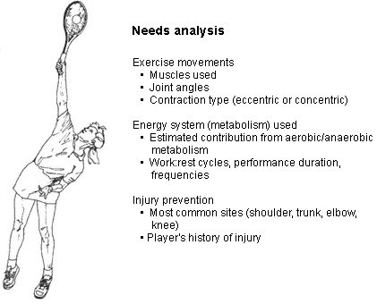
môn thể thao. Phân tích cơ sinh học giúp các nhà khoa học thể thao điều chỉnh chương trình tập luyện cho người chơi quần vợt. Ví dụ, bằng cách phân tích cú giao bóng quần vợt, các nhà khoa học phát hiện ra rằng vai được nâng lên hơn một góc 90 độ so với cơ thể khi tiếp xúc với bóng. Lý do khiến vợt trông quá cao so với đầu người chơi trong khi giao bóng là do thân vợt được uốn cong để cho vai giữ nguyên góc 90 độ mà vẫn đánh bóng với hiệu quả tối đa. Biết được thông tin này, chúng tôi sẽ đề xuất các bài tập vai không nâng cánh tay cao hơn vai.
Các Thành Phần Của Chương Trình Rèn Luyện Sức Mạnh
Khi thiết kế chế độ tập luyện quần vợt, hãy cân nhắc các thành phần sau:
- Bộ—nhóm các lần lặp lại trong một chương trình rèn luyện kháng lực. Thông thường, cần có nhiều hiệp tập thể dục để cải thiện sức mạnh và sức bền cơ bắp. Đối với môn quần vợt, chúng tôi khuyên bạn nên chơi từ hai đến bốn hiệp.
- Số lần lặp lại—số lần lặp lại bạn thực hiện trong mỗi hiệp. Điều này xác định khối lượng công việc và điều chỉnh cường độ tập luyện. Các bài tập có từ ba đến sáu lần lặp lại thường phát triển sức mạnh và sức mạnh khi bạn sử dụng mức tạ có kháng lực cao hơn. Các hiệp từ 10 đến 15 lần lặp lại cũng phát triển sức mạnh cơ bắp cũng như sức bền cơ cục bộ do số lần lặp lại mỗi hiệp cao hơn. Các hiệp có 20 đến 25 lần lặp lại sẽ rèn luyện sức bền và dành cho vận động viên sức bền như vận động viên chạy marathon.
- Cường độ—bạn nâng được bao nhiêu cân. Bạn đặt cường độ tập luyện bằng cách sử dụng mức lặp lại tối đa hoặc hệ thống RM. Điều này liên quan đến việc chọn mức tạ phù hợp cho một hiệp tập để bạn có thể thực hiện tất cả các lần lặp lại mong muốn mà không vi phạm hình thức phù hợp và do đó bạn cảm thấy cơ bị mỏi đáng kể trong một hoặc hai lần lặp lại cuối cùng của hiệp đó. Ví dụ: chọn mức tạ nặng 2 pound để thực hiện 10 lần lặp lại động tác gập bắp tay có thể sẽ không cung cấp đủ lực cản để gây mệt mỏi ở lần lặp lại thứ chín hoặc thứ mười. Trọng lượng 50 pound sẽ quá nặng để thực hiện 10 lần lặp lại động tác gập bắp tay trừ khi bạn là Arnold Schwarzenegger. Để áp dụng đúng hệ thống lặp lại tối đa, cần phải thử và sai khi bắt đầu chương trình rèn luyện sức mạnh vì mục tiêu rất cụ thể: chọn mức tạ hoặc lực cản mà bạn có thể thực hiện số lần lặp lại định sẵn mà không bị gãy hình nhưng vẫn làm mỏi cơ.
Số lần lặp lại tối ưu trong một hiệp đối với một vận động viên quần vợt là bao nhiêu? Hầu hết các chuyên gia khuyên bạn nên tập từ 10 đến 15 lần lặp lại. Con số này mang lại sự kích thích rèn luyện sức mạnh cũng như sức bền, cả hai đều cần thiết cho môn quần vợt. Sử dụng số lần lặp lại nhiều cũng có nghĩa là mức tạ tương đối mà bạn sử dụng sẽ thấp hơn vì bạn phải có khả năng thực hiện nhiều lần với mức tạ đó.
- Nhịp chuyển động—tốc độ. Tốc độ di chuyển tạ có ảnh hưởng rất lớn đến chất lượng tập luyện. Tất cả chúng ta đều đã thấy những người tập tạ quá nặng, di chuyển tạ nhanh từ đầu đến cuối chỉ để đạt được số lần lặp lại. Điều quan trọng là bạn phải nhấn mạnh chuyển động chậm, có kiểm soát khi tập trên máy tập tạ, tạ tự do và ống cao su. Điều này sẽ đảm bảo rằng bạn đang nâng và hạ hoặc đẩy và kéo tạ, có nghĩa là bạn sẽ hoạt động cơ ở cả giai đoạn rút ngắn (đồng tâm) và kéo dài (lệch tâm), tương tự như chơi quần vợt.
- Tần suất—tần suất bạn thực hiện các phiên. Thông thường, các chương trình rèn luyện sức mạnh khuyên bạn nên nghỉ ngơi giữa các buổi tập. Tùy thuộc vào những yếu tố khác mà người chơi đang nhấn mạnh trong chương trình thể lực tổng thể, tần suất luyện tập có thể dao động từ một lần mỗi tuần đến ba hoặc bốn lần mỗi tuần. Hầu hết các chương trình rèn luyện sức mạnh đều khuyến nghị ba lần mỗi tuần để xây dựng sức mạnh, với một ngày nghỉ giữa các buổi tập. Một số người chơi có thể nâng tạ mỗi ngày, nhưng họ luân phiên các nhóm cơ và vùng cơ thể mà họ tập luyện để có một ngày phục hồi cho các cơ đang hoạt động.
- Nghỉ—thời gian giữa các hiệp. Một yếu tố gắn chặt với tính đặc hiệu là nghỉ ngơi. Trong quần vợt, điểm trung bình kéo dài dưới 10 giây, sau đó là 25 đến 30 giây nghỉ. Do đó, chương trình tập luyện của người chơi quần vợt nên nhấn mạnh thời gian nghỉ khoảng 25 đến 30 giây giữa các hiệp. Chu kỳ làm việc:nghỉ ngơi này tạo ra sự căng thẳng cho các cơ tương tự như khi chơi quần vợt và nó gây căng thẳng về mặt trao đổi chất cho các hệ thống cung cấp năng lượng cho các cơ đang hoạt động giống như khi bạn đang chơi.
Các Bài Tập Rèn Luyện Sức Mạnh
Sau khi lưu ý đến các yếu tố thiết kế thiết yếu, hãy xem xét việc đưa chúng vào các bài tập luyện. Hãy nhận biết ba điểm sau:
- Đừng nhấc tạ ngay trước khi chơi quần vợt. Bạn không muốn bị mệt mỏi khi thực hiện các nhiệm vụ vận động đòi hỏi kỹ năng cao như động tác chạm đất. Tốt hơn là bạn nên rèn luyện sức mạnh vào những ngày mà các bài tập quần vợt nhẹ nhàng hơn và bạn có thể nâng tạ sau khi chơi quần vợt.
- Hiện trạng không thay đổi được bằng việc rèn luyện sức mạnh. Mọi chương trình tốt đều phải được cập nhật, tuân theo nguyên tắc quá tải. Nếu bạn luôn sử dụng tạ nặng 2 pound khi thực hiện động tác gập bắp tay 10 lần thì điều đó sẽ trở nên quá dễ dàng. Để tránh tập luyện ở mức cường độ quá thấp, hãy tăng thêm kháng lực khi bạn không còn mệt mỏi khi kết thúc buổi tập. Một số vận động viên tăng số lần lặp lại từ ba đến năm lần với cùng mức tạ; sau đó khi việc đó trở nên dễ dàng, họ quay trở lại số lần lặp ban đầu trong mỗi hiệp nhưng với mức tạ nặng hơn.
- Tránh bồi thường. Nếu sử dụng tạ quá nhiều, bạn sẽ sử dụng các nhóm cơ lớn hơn và cách di chuyển không đúng cách có thể gây chấn thương. Ở trong giới hạn kháng cự của bạn, không phải mức độ của bạn bè hoặc đối thủ của bạn!
Bài Tập Với Máy Cho Thân Dưới
Bấm Chân
Nhóm cơ chính: Bài tập luyện nhiều khớp có tác dụng lên cơ mông, cơ tứ đầu, gân kheo và bắp chân.
Tư thế chuẩn bị: Nằm ngửa, điều chỉnh ghế/xe trượt đến vị trí mà hông và đầu gối của bạn uốn cong một góc 90 độ. Hai chân của bạn phải cách nhau khoảng rộng bằng vai.
Động tác thực hiện: Duỗi thẳng đầu gối và hông của bạn bằng cách ấn xuống bệ cho đến khi chúng gần như thẳng hoàn toàn. Đừng khóa đầu gối của bạn. Từ từ trở lại vị trí bắt đầu.
*Một biến thể của bài tập này có thể được thực hiện chỉ với một chân mỗi lần để tập trung vào từng chân một cách độc lập. Biến thể thứ hai bao gồm đặt một quả bóng thuốc nặng từ 6 đến 8 pound giữa hai đầu gối và ép quả bóng thuốc khi bạn duỗi thẳng đầu gối và hông.
Duỗi Chân
Nhóm cơ chính: Bài tập đơn khớp nhấn mạnh vào việc tăng cường sức mạnh cho cơ tứ đầu.
Tư thế chuẩn bị: Ngồi trên máy điều chỉnh tựa lưng (nếu có) sao cho tâm đầu gối của bạn thẳng hàng với trục quay của thiết bị. Đầu gối của bạn phải uốn cong khoảng 90 độ và miếng đệm kháng lực phải được đặt ngay phía trên mắt cá chân của bạn.
Động tác thực hiện: Duỗi hai chân lên cao để chống lại lực cản, duỗi thẳng đầu gối hoàn toàn. Đừng duỗi quá mức đầu gối của bạn. Từ từ hạ tạ xuống vị trí ban đầu.
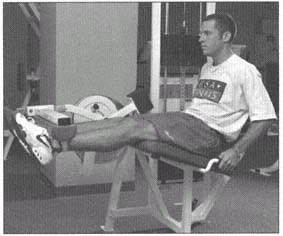
Lưu ý: Nếu bạn bị đau đầu gối hoặc có tiền sử các vấn đề về đầu gối, hãy xem chương 10 để biết những sửa đổi cụ thể của bài tập này.
Cong Gân Khoeo
Nhóm cơ chính: Bài tập đơn khớp chủ yếu tác động đến gân kheo.
Tư thế chuẩn bị: Nằm sấp trên máy. Miếng đệm kháng lực phải được điều chỉnh sao cho nó chạm vào bạn ở phần dưới của bắp chân, ngay phía trên mắt cá chân.
Động tác thực hiện: Từ từ cong bàn chân về phía mông. Từ từ đưa tạ về vị trí ban đầu. Đầu gối của bạn không được duỗi quá mức ở vị trí bắt đầu.
*Một biến thể của bài tập này bao gồm nâng tạ lên bằng cả hai chân rồi hạ tạ xuống bằng một chân, luân phiên hai chân trong mỗi lần lặp lại khác.
Đa Hông
Nhóm cơ chính: Một bài tập quan trọng có tác dụng ổn định các cơ xung quanh hông và háng.
Tư thế chuẩn bị: Đứng quay mặt về phía máy, điều chỉnh độ cao sao cho trục của máy thẳng hàng với phía trước hông của bạn. Bằng cách điều chỉnh thanh đòn một góc 45 độ, bạn có thể thực hiện động tác khép hông (đưa chân qua cơ thể). Việc điều chỉnh thanh theo chiều dọc cho phép vận động viên thực hiện động tác dang hông (nâng chân ra khỏi cơ thể), cũng như gập hông. Việc mở rộng hông có thể được thực hiện bằng cách đặt thanh đòn theo hướng nằm ngang và đẩy thanh về phía sau.
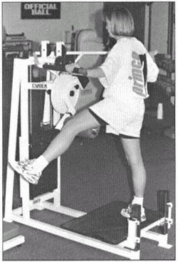
Động tác tập: Trong cả bốn hướng chuyển động, chân giữ thăng bằng có tác dụng giữ thăng bằng cơ thể, trong khi chân tập chuyển động. Hãy chắc chắn tập thể dục cả hai chân trên chiếc máy quan trọng này.
Bài Tập Tạ Tự Do Cho Thân Dưới
Bước Lên
Nhóm cơ chính: Bài tập đa khớp nhấn mạnh vào cơ tứ đầu, cơ mông và cơ bắp chân.
Tư thế chuẩn bị: Đứng với một quả bóng thuốc đặt sau cổ và cố định bằng tay hoặc cầm tạ ở hai bên.
Bài tập Hành động: Sử dụng bước dài từ 6 đến 8 inch, lần lượt bước lên. Thay đổi bài tập này bằng cách bước về phía trước, sang một bên và bước qua để bước lên bục.
Ngồi Xổm
Nhóm cơ chính: Bài tập luyện nhiều khớp tác động đến nhiều cơ, bao gồm cơ mông, cơ tứ đầu, cơ gân kheo, cơ duỗi lưng và bắp chân.
Tư thế chuẩn bị: Đứng hai chân song song với vai (bàn chân có thể hơi hướng ra ngoài), với tạ trong tay đặt ở hai bên hoặc một quả bóng thuốc đặt sau cổ và cố định bằng cả hai tay.
Động tác thực hiện: Cong chân một cách chậm rãi, có kiểm soát cho đến khi đầu gối tạo thành một góc 90 độ, đùi song song với mặt đất. Khi bạn cúi xuống, hãy ngẩng cao đầu nhìn thẳng về phía trước, ưỡn ngực và lưng phẳng. Giữ trọng lượng của bạn hướng về giữa và phía sau bàn chân, không phải trên ngón chân. Trở lại vị trí ban đầu, giữ đầu ngẩng cao và lưng thẳng.
Lưu ý: Nếu bạn có vấn đề về đầu gối hoặc có tiền sử vấn đề về đầu gối, chỉ uốn cong đầu gối của bạn một góc từ 45 đến 60 độ nếu bạn có thể chịu đựng được (xem chương 10, Chấn thương đầu gối).
Lunge
Nhóm cơ chính: Một bài tập đa khớp tác động đến hầu hết các cơ ở chi dưới và thân. Đó là một mô hình chuyển động dành riêng cho quần vợt.
Tư thế chuẩn bị: Đứng hai chân cách nhau từ 6 đến 8 inch, cầm một quả tạ hoặc đặt một quả bóng thuốc một cách thoải mái sau cổ và giữ ổn định bằng cả hai tay.
Bài tập Hành động: Bước một bước lớn về phía trước và đặt cơ thể lên trên chân trước. Cong đầu gối trước của bạn sao cho thẳng hàng hoặc hơi ở phía trước khớp mắt cá chân và không nhô ra ngoài một đường kéo lên từ phía trước giày của bạn. Trở lại vị trí ban đầu bằng cách đẩy trọng lượng về phía sau và duỗi thẳng chân trước. Bạn có thể cần thực hiện một vài bước nhỏ để đưa chân về vị trí ban đầu. Giữ thân người thẳng trong khi tập bằng cách nhìn thẳng về phía trước và giữ ngực hướng ra ngoài. Chân thay thế.
Lunge (biến thể 1): Bước nhảy chéo—Thay vì bước về phía trước, hãy di chuyển chân trước của bạn theo đường chéo 45 độ (di chuyển chân trái theo hướng bắt chéo trước chân và bàn chân phải của bạn). Luân phiên giữa chân phải và chân trái, sử dụng kiểu bước chéo này.
Lunge (biến thể 2): Bước lunge sang bên—Bước thẳng sang bên phải hoặc bên trái, ngồi xổm như hình. Luân phiên giữa bên trái và bên phải. Nếu bạn có vấn đề về đầu gối, bạn chỉ nên gập đầu gối một góc 30 đến 45 độ để giảm căng thẳng.
Nâng Chân Bằng Tạ Quấn Cổ
Nhóm cơ chính: Một bài tập đơn khớp giúp rèn luyện cơ gấp hông và cơ tứ đầu.
Tư thế chuẩn bị: Nằm ngửa, khuỷu tay đặt trên mặt đất và tạ ở cổ chân. Cong đầu gối không tập thể dục 90 độ.
Động tác tập thể dục: Giữ đầu gối thẳng, siết chặt cơ đùi. Với cơ đùi căng, nâng chân lên khỏi sàn khoảng 6 đến 8 inch. Giữ trong một đến hai giây và hạ chân xuống sàn. Thư giãn ba đến năm giây và lặp lại 20 đến 30 lần.
Nuôi Bê
Nhóm cơ chính: Phát triển cơ dạ dày và cơ dép (bắp chân).
Tư thế chuẩn bị: Đứng hai chân cách nhau từ 6 đến 8 inch, mỗi tay cầm tạ hoặc đặt một quả bóng thuốc thoải mái sau đầu và giữ ổn định bằng cả hai tay.
Động tác thực hiện: Giữ đầu gối thẳng và thân thẳng, nâng gót chân lên khỏi mặt đất cho đến khi bạn đứng trên mu bàn chân. Từ từ trở lại vị trí bắt đầu. Di chuyển qua phạm vi chuyển động càng lớn càng tốt. Bắt đầu bài tập này với tư thế đứng thẳng trên sàn và tiến tới thực hiện bằng ngón chân trên bậc thang hoặc trên bệ của máy tập thể dục. Vị trí này cho phép gót chân hạ xuống dưới đầu bàn chân khi bạn bắt đầu và cho phép bạn tập thể dục với phạm vi chuyển động lớn hơn.
Thân Cây
Giòn
Nhóm cơ chính: Phát triển sức mạnh cho tất cả các cú đánh. Cơ thể khỏe mạnh (cơ thẳng bụng) là nguồn gốc của nhiều chuyển động và cho phép phần thân trên luôn đồng bộ với phần thân dưới.
Tư thế bắt đầu: Nằm ngửa, gập đầu gối và đặt bàn chân phẳng trên sàn. Giữ hai tay sau đầu với khuỷu tay sang hai bên hoặc đặt chéo trên ngực. Tránh dùng tay kéo đầu về phía trước.
Động tác tập thể dục: Cong phần thân trên khỏi sàn, bao gồm cả đầu và vai, cho đến khi bạn có thể cảm nhận được cơ bụng đang co lại. Phần thân trên phải cách mặt đất khoảng 3 inch ở bả vai. Hạ thấp cho đến khi bả vai chạm đất và lặp lại.
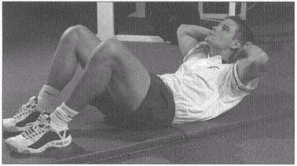
Crossover Crunch
Nhóm cơ chính: Tăng cường cơ xiên trong và ngoài của thân. Họ chịu trách nhiệm xoay thân cây.
Tư thế chuẩn bị: Nằm ngửa, gập một đầu gối và bàn chân đặt phẳng trên sàn. Đầu gối đối diện cong lại sao cho gót chân tựa lên đầu gối bên kia. Giữ hai tay sau đầu với khuỷu tay hướng ra hai bên. Tránh dùng tay kéo đầu về phía trước.
Động tác tập thể dục: Cong phần thân trên sao cho khuỷu tay đối diện với đầu gối nâng lên di chuyển theo đường chéo về phía nó. Lặp lại động tác này ở phía đối diện.
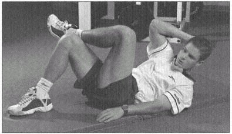
Vòng Tròn Ngồi
Nhóm cơ chính: Phát triển toàn bộ vùng bụng và thân. Bài tập này đòi hỏi nhiều sức mạnh hơn các bài tập bụng cơ bản.
Tư thế chuẩn bị: Nằm ngửa, hông và đầu gối cong 90 độ. Giữ cánh tay và bàn tay của bạn phía sau đầu với khuỷu tay hướng ra hai bên. Tránh dùng tay kéo đầu về phía trước.
Động tác thực hiện: Chạm khuỷu tay trái vào đầu gối phải và ngược lại. Chạm xen kẽ mà không cho phép đầu gối nghỉ ngơi.
Tư Thế Ngồi Ngược
Nhóm cơ chính: Hoạt động của cơ bụng trực tràng thông qua đầy đủ các chuyển động mà ít sử dụng cơ thắt lưng (cơ gấp hông).
Tư thế chuẩn bị: Nằm ngửa, giơ chân lên và đặt trên hộp hoặc ghế dài. Giữ hai tay sau đầu với khuỷu tay hướng ra hai bên. Tránh dùng tay kéo đầu về phía trước.
Động tác thực hiện: Cong người lên và cố gắng chạm ngực vào đùi.
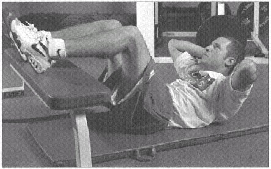
Nâng Hông
Nhóm cơ chính: Phát triển sức mạnh cơ bụng trực tràng.
Tư thế chuẩn bị: Nằm ngửa, hông nâng cao và hai chân duỗi thẳng trên không. Đặt cánh tay và bàn tay sang hai bên để giữ thăng bằng hoặc đặt dưới lưng dưới để được hỗ trợ.
Động tác thực hiện: Nâng hông lên khỏi mặt đất và hướng các ngón chân lên trần nhà đồng thời uốn cong thành bụng. Với sự kiểm soát, hạ hông xuống đất và lặp lại.
Tư Thế Ngồi Chéo
Nhóm cơ chính: Nhắm vào các cơ xiên của thân.
Tư thế chuẩn bị: Cố định bàn chân của bạn trên sàn, với đầu gối cong và cơ thể áp sát sàn. Đặt cả hai cánh tay về cùng một phía và cầm vợt trong tay.
Động tác thực hiện: Đưa cánh tay lên và ngang qua cơ thể bằng cách dùng thân người nâng lên và vặn người sang phía đối diện. Thực hiện động tác chéo, xen kẽ hai bên.
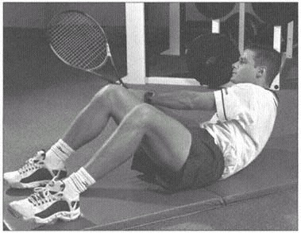
Ngồi Dậy Với Chân Giơ Lên
Nhóm cơ chính: Phát triển cơ thẳng bụng và cơ thắt lưng.
Tư thế chuẩn bị: Nằm ngửa, hông và đầu gối nâng lên 90 độ. Giữ hai tay sau đầu với khuỷu tay hướng ra hai bên. Tránh dùng tay kéo đầu về phía trước.
Động tác thực hiện: Cong phần thân trên khỏi sàn, bao gồm cả đầu và vai, cho đến khi bạn có thể cảm nhận được cơ bụng đang co lại. Phần thân trên phải cách mặt đất ba inch ở bả vai. Hạ thấp cho đến khi bả vai chạm đất và lặp lại.
Máy Quay Torso
Nhóm cơ chính: Tăng cường cơ xiên bên trong và bên ngoài.
Tư thế chuẩn bị: Đặt ghế sao cho hông và đầu gối gập khoảng 90 độ. Đặt chế độ xoay để cho phép chuyển động theo vòng cung từ 60 đến 90 độ.
Động tác thực hiện: Dùng vai ấn vào phần đệm trên cơ thể, xoay thân mình sang một bên. Từ từ quay trở lại vị trí bắt đầu và lặp lại. Thực hiện xoay người sang hai bên để phát huy lực xoay thân cây cân bằng.
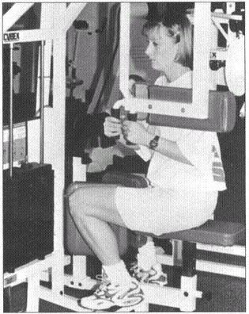
Vòng Xoắn Nga
Nhóm cơ chính: Hoạt động theo đường xiên của thân cây.
Tư thế chuẩn bị: Giữ chân vững chắc trên sàn, gập đầu gối và cơ thể ngả về phía sau một góc 45 độ. Giữ cánh tay thẳng ra khỏi vai sao cho chúng song song với đùi. Cầm vợt làm tăng kháng lực của bài tập.
Động tác thực hiện: Xoay người sang bên, xoay vai cho đến khi cánh tay tạo thành một góc 90 độ với cơ thể. Thực hiện một vòng xoắn hoàn toàn sang phía đối diện. Lặp đi lặp lại tạo nên một sự lặp lại.
Xoay Hông
Nhóm cơ chính: Phát triển sức mạnh ở cơ bụng trực tràng, cơ xiên và cơ thắt lưng.
Tư thế chuẩn bị: Nằm ngửa, hông gập và đầu gối duỗi. Đặt cánh tay và bàn tay ra hai bên để ổn định.
Động tác thực hiện: Xoay hông và thân sang một bên cho đến khi chạm đất. Giữ hai đầu gối lại với nhau, xoay chúng hết cỡ cho đến khi chúng chạm vào phía bên kia. Bạn đã thực hiện xong một vòng quay đầy đủ khi chạm vào cả hai bên.
Mở Rộng Đường Trục
Máy Duỗi Lưng
Nhóm cơ chính: Tăng cường cơ dựng sống và cơ mông.
Tư thế chuẩn bị: Căn chỉnh hông của bạn với trục máy và cố định vị trí của bạn bằng đai an toàn hoặc dây nịt nếu có. Vị trí bắt đầu thường là ở tư thế gập thân (uốn cong) khoảng 45 độ.
Động tác thực hiện: Khoanh tay trước ngực và di chuyển cột sống của bạn về phía sau tấm đệm kháng lực cho đến khi nó thẳng hoàn toàn. Từ từ quay trở lại vị trí ban đầu, vận động cơ lưng dưới theo hướng lệch tâm.
Siêu Nhân
Nhóm cơ chính: Giúp ngăn ngừa chấn thương do sử dụng quá mức hoặc đau thắt lưng mãn tính bằng cách nhắm vào các cơ dựng sống dọc theo cột sống.
Tư thế chuẩn bị: Nằm sấp trên sàn với hai tay duỗi thẳng hoàn toàn qua đầu.
Động tác thực hiện: Nâng cả hai tay và cả hai chân cùng một lúc. Giữ vị trí này trong một đến năm giây và trở về vị trí bắt đầu. Một biến thể có thể bao gồm nâng cánh tay phải và chân trái, sau đó nâng cánh tay trái và chân phải theo kiểu xen kẽ.
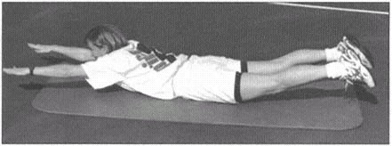
Siêu Tiện Ích Mở Rộng
Nhóm cơ chính: Tăng cường sức mạnh của cột sống cương cứng. Cho phép lưng dưới hấp thụ và tạo ra lực lớn hơn trong các hoạt động như chuyển động giao bóng và động tác trên cao.
Tư thế chuẩn bị: Nằm sấp trên bàn với thân và phần thân trên buông thõng ở một đầu. Đưa tay ra sau đầu. Nhờ một đối tác giữ phần thân dưới của bạn.
Bài tập Hành động: Từ vị trí bắt đầu hạ thấp, nâng phần thân trên lên cho đến khi thẳng hàng với phần còn lại của cơ thể hoặc cho đến khi lưng căng cứng. Hạ phần thân trên xuống một góc 30 độ hoặc ngay trước khi lưng dưới cong.
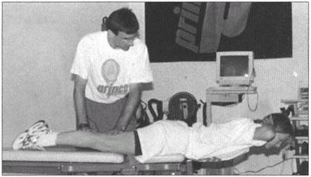
Hạ Phần Mở Rộng Ngược
Nhóm cơ chính: Tăng cường cột sống cương cứng để ngăn ngừa chấn thương và đau lưng mãn tính.
Tư thế chuẩn bị: Nằm sấp trên bàn, hai chân buông thõng ở cuối.
Động tác tập thể dục: Trong khi giữ hai bàn chân lại với nhau, nâng và hạ chân. Thực hiện điều này từ từ và lặp lại.
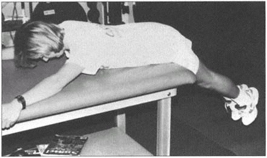
Chương Trình Vòng Bít Quay
Các bài tập sau đây giúp rèn luyện cơ chóp xoay. Ban đầu bạn nên thực hiện chúng với mức tạ khoảng 1 hoặc 2 pound vì những cơ này nhỏ. Chúng tôi khuyên bạn nên thực hiện ba hiệp, từ 12 đến 15 lần lặp lại để tăng cường sức bền cho các cơ này. Nếu bạn sử dụng mức tạ nặng hơn, bạn có thể bù lại và thực hiện bài tập bằng cách sử dụng các nhóm cơ lớn hơn đã phát triển. Ngay cả những vận động viên khỏe nhất, to lớn nhất cũng sử dụng tối đa 4 hoặc 5 pound cho các bài tập này.
Xoay Vai Ngoài
Nhóm cơ chính: Phát triển sức mạnh của vòng bít xoay.
Tư thế chuẩn bị: Nằm nghiêng về bên trái, cánh tay phải ở bên cạnh và lót một chiếc gối hoặc khăn nhỏ bên dưới. Giữ khuỷu tay phải uốn cong một góc vuông và cố định sang một bên.
Động tác thực hiện: Đặt tay phải gần bụng, từ từ nâng tay lên cho đến khi cẳng tay chỉ hơi thẳng đứng với cơ thể. Từ từ hạ xuống vị trí bắt đầu và lặp lại. Ghi chú ảnh trang 188.
Dễ Bị Mở Rộng
Nhóm cơ chính: Hoạt động với cơ xoay ngoài của vai, bộ ổn định xương bả vai và cơ delta sau.
Tư thế chuẩn bị: Nằm sấp trên bàn với tay vợt buông thõng thẳng xuống sàn.
Động tác thực hiện: Với ngón tay cái hướng ra ngoài, nâng cánh tay thẳng về phía hông. Từ từ hạ cánh tay xuống và lặp lại. Không giơ cánh tay về phía trước về phía đầu. Ghi chú ảnh trang 189.
Dễ Bị Bắt Cóc Theo Chiều Ngang
Nhóm cơ chính: Hoạt động cơ chóp xoay, cơ hình thoi, hình thang và cơ delta sau.
Tư thế chuẩn bị: Nằm sấp trên bàn với tay vợt buông thõng thẳng xuống sàn và ngón cái hướng ra ngoài.
Động tác thực hiện: Nâng cánh tay ra một bên một góc 90 độ cho đến khi gần như song song với sàn. Hạ nó xuống vị trí bắt đầu và lặp lại.
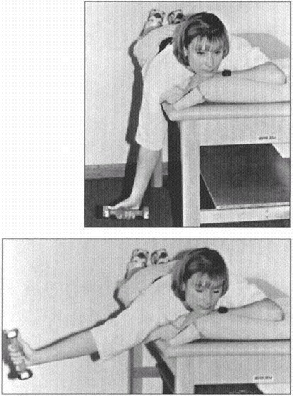
Xoay Vai Ngoài 90-90
Nhóm cơ chính: Phát triển cơ xoay ngoài của vai.
Tư thế chuẩn bị: Quỳ với cánh tay trên ghế nghiêng. Đặt cánh tay trên song song với mặt đất và cẳng tay vuông góc với cánh tay trên một góc 90 độ.
Động tác thực hiện: Trong khi duy trì một góc vuông ở khuỷu tay, xoay cẳng tay ra bên ngoài cho đến khi nó hướng lên trần nhà (dạng 90 độ). Từ từ hạ nó xuống và trở về vị trí bắt đầu.
Xoay vai ngoài (biến thể): Bạn cũng có thể thực hiện bài tập này trong tư thế nằm sấp với vai nâng lên một góc 90 độ, khuỷu tay và bàn tay buông thõng trên mép bàn. Nâng mặt sau của cánh tay về phía trần nhà cho đến khi song song với sàn nhà.
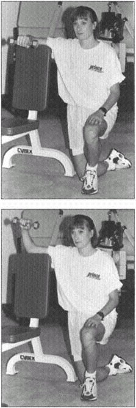
Scaption Hoặc Lon Rỗng
Nhóm cơ chính: Hoạt động cơ trên gai và cơ delta.
Tư thế chuẩn bị: Đứng thẳng với khuỷu tay và ngón tay cái hướng xuống đất.
Bài tập Hành động: Nâng cánh tay lên ngang vai trên một mặt phẳng chéo (30–45 độ sang một bên, không duỗi thẳng về phía trước). Từ từ hạ xuống và lặp lại.
Lưu ý: Đảm bảo bạn không nâng cánh tay quá ngang vai.
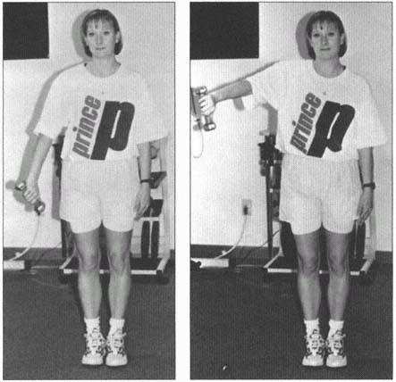
Chương Trình Vòng Bít Quay Với Ống Cao Su
Những bài tập này sử dụng ống cao su hoặc Thera-band. Bạn có thể mua sản phẩm này từ các phòng khám vật lý trị liệu và nhà phân phối thể dục. Bạn có thể sử dụng ống vừa (xanh) hoặc nặng vừa (đen) để tăng cường sức mạnh cho vòng bít.
Xoay Vai Ngoài
Nhóm cơ chính: Phát triển sức mạnh xoay bên ngoài.
Tư thế chuẩn bị: Cố định ống cao su cao khoảng thắt lưng vào tay nắm cửa. Đứng nghiêng về phía cửa, tay cầm vợt cách xa cửa. Đặt một chiếc khăn nhỏ cuộn tròn dưới cánh tay vợt.
Động tác thực hiện: Giữ ống cao su trong tay vợt và bắt đầu với tay sát bụng. Xoay bàn tay và cẳng tay ra khỏi bụng cho đến khi bàn tay và cẳng tay thẳng ra phía trước, kéo ống để tạo lực cản. Quay trở lại vị trí bắt đầu và lặp lại. Giữ khuỷu tay của bạn ở một góc 90 độ trong suốt bài tập. Bạn có thể đặt tay đối diện dưới khuỷu tay để đỡ cánh tay nếu cần.
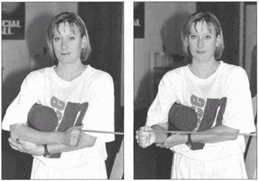
Xoay Vai Ngoài Kèm Dạng
Nhóm cơ chính: Vận hành vòng bít xoay ở một vị trí cụ thể cho cú giao bóng quần vợt.
Tư thế chuẩn bị: Cố định ống cao su cao khoảng thắt lưng vào tay nắm cửa. Đứng quay mặt ra cửa với vai dang 90 độ, tạo thành một đường chéo trước mặt khoảng 30 độ. Sử dụng bàn tay đối diện của bạn để hỗ trợ cánh tay trên của bạn.
Bài tập Hành động: Giữ ống trong tay và xoay tay về phía sau cho đến khi nó gần như thẳng đứng. Quay trở lại vị trí bắt đầu và lặp lại.
Xoay Vai Trong
Nhóm cơ chính: Phát triển sức mạnh luân chuyển bên trong.
Tư thế chuẩn bị: Cố định ống cao su cao khoảng thắt lưng vào tay nắm cửa. Đứng nghiêng về phía cửa, tay cầm vợt sát cửa. Đặt một chiếc khăn nhỏ cuộn tròn dưới cánh tay vợt.
Động tác thực hiện: Giữ ống cao su trong tay vợt và bắt đầu với bàn tay và cẳng tay duỗi thẳng ra trước mặt. Xoay bàn tay về phía bụng. Trở lại vị trí ban đầu và
lặp lại. Giữ khuỷu tay của bạn ở một góc 90 độ trong suốt bài tập. Bạn có thể đặt tay đối diện dưới khuỷu tay để đỡ cánh tay nếu cần.
Các Bài Tập Bổ Sung Cho Phần Thân Trên
Hàng Ngồi
Nhóm cơ chính: Phát triển cơ hình thoi, cơ thang, cơ delta sau và bắp tay.
Tư thế chuẩn bị: Ngồi với đầu gối hơi cong và tay cầm thiết bị dây hoặc băng, cột cáp hoặc máy chèo thuyền ngồi.
Động tác tập thể dục: Trong khi giữ phần thân trên thẳng và không nghiêng về phía sau, hãy kéo tay cầm dây về phía ngực và vùng bụng trên. Giữ khuỷu tay sát hai bên. Từ từ quay trở lại vị trí bắt đầu và lặp lại.
Cúi Xuống Hàng
Nhóm cơ chính: Phát triển cơ lưng to, cơ thoi, cơ thang và cơ delta sau.
Tư thế chuẩn bị: Cúi người trên một ghế tập phẳng, với đầu gối không hoạt động và bàn tay đặt trên ghế tập. Giữ lưng ở tư thế phẳng, được hỗ trợ bằng cách siết chặt cơ bụng và mông.
Động tác tập thể dục: Bắt đầu với quả tạ trong tay và cánh tay duỗi thẳng hoàn toàn dưới vai. Nâng quả tạ bằng cách nâng khuỷu tay về phía trần nhà. Bạn đã hoàn thành một lần lặp lại khi quả tạ chạm vào một bên bụng.
Chống Đẩy
Nhóm cơ chính: Bài tập tăng cường/thể lực tổng thể phần trên cơ thể.
Tư thế chuẩn bị: Hai tay đặt rộng bằng vai, cơ thể tạo thành một đường thẳng từ ngón chân đến đầu.
Động tác thực hiện: Từ từ hạ người xuống cho đến khi cánh tay trên song song với mặt đất. Đẩy người lên trên cho đến khi khuỷu tay hoàn toàn thẳng và cong lưng ra ngoài như một con mèo. Chuyển động tròn người này khi kết thúc động tác chống đẩy rất quan trọng và làm tăng công việc của các cơ giúp ổn định bả vai của bạn.
Lưu ý: Nếu bạn bị đau vai hoặc có tiền sử bệnh về vai thì chỉ nên hạ người xuống khoảng một nửa quãng đường.
Lat Kéo Xuống
Nhóm cơ chính: Phát triển cơ lưng to và cơ bắp tay.
Tư thế chuẩn bị: Sử dụng máy kéo lat xuống, cáp trên cao hoặc ống cao su, vươn người lên trên để nắm lấy tay cầm bằng tay cầm rộng.
Động tác thực hiện: Kéo thanh, dây cáp hoặc ống xuống, đưa thanh trước mặt bạn về phía giữa ngực. Từ từ đưa thanh đòn về vị trí ban đầu bằng điều khiển và lặp lại.
Máy Ép Ngực
Nhóm cơ chính: Phát triển cơ ngực lớn/nhỏ, cơ răng trước, cơ tam đầu và cơ delta trước.
Tư thế chuẩn bị: Nằm ngửa trên một chiếc ghế hẹp với hai cánh tay xoay ra ngoài một góc 90 độ so với thân.
Động tác thực hiện: Trong khi giữ cổ tay thẳng trên khuỷu tay và không khóa khuỷu tay, hãy đưa tay về phía trần nhà. Khi bạn đưa tay lên trên, hãy vòng qua vai và đẩy tay ra xa bạn nhất có thể. Chuyển động bổ sung này tác động lên cơ răng trước, cơ này hỗ trợ xương bả vai của bạn khi bạn chơi quần vợt.
Bài Tập Uốn Cong Bắp Tay
Nhóm cơ chính: Hoạt động ở bắp tay brachi, brachialis và brachioradialis.
Tư thế chuẩn bị: Đứng cầm một quả tạ trên tay, hai chân rộng bằng vai.
Động tác thực hiện: Giữ vai ở một bên, uốn cong khuỷu tay và đưa trọng lượng về phía vai. Nếu đã chọn đúng mức tạ, bạn không nên cong lưng hoặc ngả người về phía sau trong khi tập. Từ từ đưa tạ về vị trí ban đầu, đảm bảo bạn không duỗi quá mức hoặc khóa khuỷu tay.
Kéo Dài Cơ Tam Đầu
Nhóm cơ chính: Phát triển cơ tam đầu.
Tư thế chuẩn bị: Nằm ngửa, cầm một quả tạ trên tay với vai và khuỷu tay uốn cong 90 độ. Dùng tay đối diện để đỡ cánh tay trên và giữ cố định trong suốt bài tập.
Động tác thực hiện: Duỗi thẳng khuỷu tay bằng cách giơ tay và tạ lên trên, đảm bảo khuỷu tay không bị khóa.
Nhún Vai
Nhóm cơ chính: Hoạt động ổn định hình thang trên và xương bả vai.
Tư thế chuẩn bị: Đứng hai chân rộng bằng vai, hai tay ở hai bên và cầm tạ trên tay.
Động tác thực hiện: Giữ hai cánh tay ở hai bên, nâng vai lên về phía tai, sau đó ép hai bả vai vào nhau đồng thời cuộn vai về phía sau. Trở lại vị trí ban đầu bằng cách từ từ hạ vai xuống và lặp lại.
Đấm Vào Vai
Nhóm cơ chính: Phát triển cơ răng trước—một cơ quan ổn định xương bả vai quan trọng.
Tư thế chuẩn bị: Nằm ngửa, vai gập 90 độ và khuỷu tay thẳng. Giữ một quả bóng thuốc hoặc quả tạ.
Bài tập Thực hiện: Giữ thẳng khuỷu tay, giơ tay về phía trần nhà xa nhất có thể. Từ từ trở lại vị trí bắt đầu. Nếu bạn làm điều này một cách chính xác, bàn tay của bạn sẽ chỉ di chuyển lên xuống khoảng 6 inch.
Ruồi Dễ Bị
Nhóm cơ chính: Phát triển cơ delta sau, cơ thoi và cơ thang.
Tư thế chuẩn bị: Nằm sấp trên một chiếc ghế hẹp với hai chân cách mặt đất.
Động tác tập thể dục: Với quả tạ trong tay, mở rộng cánh tay của bạn từ hai bên theo một góc vuông (90 độ). Trong khi duy trì một góc vuông ở vai, hãy giơ hai tay lên cho đến khi chúng gần như song song với mặt đất.
Chương Trình Cẳng Tay Và Cổ Tay
Uốn Cổ Tay: Cơ Duỗi
Nhóm cơ chính: Phát triển cơ duỗi cổ tay và ngón tay.
Tư thế chuẩn bị: Ngồi trên ghế với khuỷu tay gập và cẳng tay đặt trên bàn hoặc qua đầu gối. Để cổ tay và bàn tay treo trên mép. Xoay bàn tay để lòng bàn tay hướng xuống.
Động tác thực hiện: Giữ vững cẳng tay bằng tay đối diện, đồng thời từ từ cong cổ tay và bàn tay hướng lên trên. Đảm bảo chỉ di chuyển ở cổ tay chứ không phải ở khuỷu tay. Từ từ giơ tay lên, giữ số đếm và từ từ hạ tạ xuống. Lặp lại.
Uốn Cổ Tay: Cơ Gấp
Nhóm cơ chính: Phát triển cơ gấp cổ tay và ngón tay.
Tư thế chuẩn bị: Ngồi trên ghế với khuỷu tay gập và cẳng tay đặt trên bàn hoặc trên đầu gối. Để cổ tay và bàn tay treo trên mép. Xoay bàn tay để lòng bàn tay hướng lên.
Động tác thực hiện: Giữ vững cẳng tay bằng tay đối diện, đồng thời từ từ cong cổ tay và bàn tay hướng lên trên. Đảm bảo chỉ di chuyển ở cổ tay chứ không phải ở khuỷu tay. Từ từ giơ tay lên, giữ số đếm và từ từ hạ tạ xuống. Lặp lại.
Phát Âm Cẳng Tay
Nhóm cơ chính: Phát triển cơ quay sấp của cẳng tay.
Tư thế chuẩn bị: Ngồi trên ghế với khuỷu tay uốn cong và cẳng tay đặt trên bàn hoặc đầu gối của bạn. Để cổ tay và bàn tay treo trên mép. Sử dụng một quả tạ có trọng lượng chỉ ở một đầu (tức là một cái búa), bắt đầu bài tập với lòng bàn tay hướng lên trên sao cho tay cầm nằm ngang.
Động tác thực hiện: Từ từ nâng tạ bằng cách xoay cẳng tay và cổ tay của bạn sang vị trí thẳng đứng (thẳng đứng).
Hỗ Trợ Cẳng Tay
Nhóm cơ chính: Phát triển cơ ngửa của cẳng tay.
Tư thế chuẩn bị: Ngồi trên ghế, gập khuỷu tay và đặt cẳng tay lên bàn hoặc đầu gối. Để cổ tay và bàn tay treo trên mép. Sử dụng một quả tạ có trọng lượng chỉ ở một đầu (tức là một cái búa), bắt đầu bài tập với lòng bàn tay úp xuống.
Động tác tập thể dục: Từ từ nâng tạ lên bằng cách xoay cẳng tay và cổ tay của bạn ở tư thế thẳng đứng. Giữ đếm rồi từ từ trở về vị trí bắt đầu.
Độ Lệch Hướng Tâm
Nhóm cơ chính: Phát triển các cơ giúp ổn định cổ tay khi chơi quần vợt.
Tư thế chuẩn bị: Đứng với cánh tay ở bên cạnh và nắm một quả tạ chỉ có trọng lượng ở một đầu. Đầu có trọng lượng phải ở phía trước ở vị trí trung lập (ngón cái chỉ thẳng về phía trước bạn).
Động tác thực hiện: Nâng và hạ tạ từ từ thông qua một phạm vi chuyển động thoải mái. Tất cả các chuyển động sẽ xảy ra ở cổ tay mà không có chuyển động ở khuỷu tay hoặc khớp vai. Bạn sẽ không thể tập thể dục thông qua một vòng chuyển động lớn. Lặp lại.
Độ Lệch Trụ
Nhóm cơ chính: Phát triển các cơ giúp ổn định cổ tay khi chơi quần vợt.
Tư thế chuẩn bị: Đứng với cánh tay ở bên cạnh và nắm một quả tạ chỉ có trọng lượng ở một đầu. Đầu có trọng lượng phải ở phía sau bàn tay tập thể dục của bạn.
Động tác thực hiện: Với cẳng tay của bạn ở vị trí trung lập (ngón tay cái hướng thẳng về phía trước), từ từ nâng và hạ tạ thông qua một phạm vi chuyển động thoải mái. Tất cả các chuyển động sẽ xảy ra ở cổ tay của bạn mà không có chuyển động ở khuỷu tay hoặc khớp vai. Bạn sẽ không thể tập thể dục thông qua một chuyển động vòng cung lớn. Lặp lại.
Tăng Cường Khả Năng Cầm Nắm
Nhóm cơ chính: Phát triển các cơ cẳng tay, cổ tay và bàn tay cần thiết để cầm vợt quần vợt.
Tư thế chuẩn bị: Bắt đầu với khuỷu tay uốn cong 90 độ ở bên cạnh. Giữ một quả bóng quần vợt hoặc bột bả trong lòng bàn tay.
Bài tập Hành động: Bóp chặt quả bóng hoặc bột bả và giữ từ ba đến năm giây. Giải phóng áp lực và lặp lại cho đến khi bạn cảm thấy mệt mỏi. Tiến tới thực hiện bài tập này với khuỷu tay thẳng.
Chương Trình Giảm Cân Cơ Thể
Bạn có thể thực hiện các bài tập này chỉ bằng cách sử dụng trọng lượng cơ thể của mình. Chúng tôi giới thiệu chúng cho những người chơi trẻ chưa bao giờ bắt đầu chương trình huấn luyện kháng lực và cho những người chơi đi du lịch và không phải lúc nào cũng có thiết bị hoặc tạ tự do.
Lưu ý: Bạn có thể tìm thấy mô tả và hướng dẫn cho các bài tập sau trên số trang được liệt kê trong ngoặc đơn.
- Squat (tr. 74)
- Tăng dần (tr. 74)
- Phổi (tr. 74)
- Gập bụng (tr. 78)
- Siêu nhân (tr. 82)
- Chống đẩy (tr. 91)
Chương Trình Bóng Y Học Plyometric
Những bài tập này phát triển sức mạnh ở phần thân trên. Họ sử dụng một quả bóng thuốc để kháng cự và yêu cầu các kiểu chuyển động bùng nổ. Thông thường, bạn có thể thực hiện chúng với một quả bóng thuốc nặng từ 4 đến 6 pound. Bạn có thể tăng trọng lượng của quả bóng khi việc tập luyện trở nên quá dễ dàng. Bắt đầu với các hiệp từ 20 đến 25 lần lặp lại mỗi bài tập và chuyển sang các hiệp thực hiện cho đến khi bạn mệt mỏi. Nếu có thể thực hiện hơn 50 lần mà không thấy mệt thì bạn nên tăng trọng lượng của quả bóng lên.
Đường Chuyền Ngực
Nhóm cơ chính: Tác dụng ổn định cơ ngực, cơ tam đầu và xương bả vai.
Tư thế chuẩn bị: Đứng cách đối tác 8 đến 10 feet. Giữ bóng trước ngực.
Bài tập Động tác: chuyền bóng cho đồng đội. Khi nhận bóng từ đồng đội, hãy cố gắng bắt và thả lại cho đồng đội càng nhanh càng tốt.
Ném Từ Trên Cao
Nhóm cơ chính: Phát triển cơ lưng to và cơ tam đầu.
Tư thế chuẩn bị: Đứng cách đối tác của bạn 8 đến 10 feet. Giữ quả bóng thuốc trực tiếp trên đầu của bạn.
Bài tập Hành động: Tung bóng cho đồng đội. Khi nhận bóng từ đồng đội, hãy cố gắng bắt và thả lại cho đồng đội càng nhanh càng tốt.
Tung Thuận Tay
Nhóm cơ chính: Phát triển các cơ sử dụng ở cú thuận tay.
Tư thế chuẩn bị: Đứng cách đối tác của bạn 8 đến 10 feet. Giữ bóng bằng cả hai tay ở phía thuận tay của bạn.
Bài tập Hành động: Bước và xoay người, giống như khi bạn đánh thuận tay, giật bóng lại như vợt. chuyền bóng cho đồng đội của bạn, mô phỏng cú đánh thuận tay chéo bàn. Khi nhận bóng từ đồng đội, hãy cố gắng bắt và thả lại cho đồng đội càng nhanh càng tốt.
Tung Bóng Trái Tay
Nhóm cơ chính: Phát triển các cơ sử dụng trong cú đánh trái tay.
Tư thế chuẩn bị: Đứng cách đối tác của bạn 8 đến 10 feet. Giữ bóng bằng cả hai tay ở phía trái tay của bạn.
Bài tập Hành động: Bước và xoay người, giống như khi bạn đánh trái tay, lấy bóng về như vợt. chuyền bóng cho đồng đội,
bắt chước một cú đánh trái tay chéo bàn. Khi nhận bóng từ đồng đội, hãy cố gắng bắt và thả lại cho đồng đội càng nhanh càng tốt.
Đòn Chặt Gỗ Hoặc Ném Ngang
Nhóm cơ chính: Nhấn mạnh vào việc xoay thân và sự phát triển của cơ xiên và cơ thẳng bụng.
Tư thế chuẩn bị: Đứng cách đối tác của bạn 8 đến 10 feet, quay mặt sang một bên. Giữ bóng ở độ cao ngang vai bằng cả hai tay.
Bài tập Hành động: Ném bóng theo kiểu chuyển động sang ngang và hơi hướng xuống cho đối tác của bạn. Khi nhận bóng từ đồng đội, hãy cố gắng bắt và thả lại cho đồng đội càng nhanh càng tốt.
Ngồi Vặn Mình
Nhóm cơ chính: Phát triển các cơ của thân: cơ thẳng, cơ dựng cột sống và cơ xiên.
Tư thế chuẩn bị: Ở tư thế ngồi, giữ bóng ngay trước mặt bạn bằng cả hai tay.
Bài tập Thực hiện: Đặt bóng nhẹ nhàng xuống đất ngay phía sau bạn. Nhanh chóng xoay thân mình sang phía đối diện và lấy bóng bằng cả hai tay. Lặp lại chuyển động này với số lần lặp lại mong muốn; sau đó đảo ngược hướng.
Xoay Thân Cây Đứng
Nhóm cơ chính: Phát triển cơ thân và cơ lưng dưới: cơ thẳng, cơ dựng cột sống, cơ xiên và cơ mông.
Tư thế chuẩn bị: Đứng quay lưng lại với một đối tác, cách bạn và đối tác một hoặc hai chân.
Bài tập Hành động: Đưa bóng cho đối tác của bạn bằng cách xoay sang phải và đối tác của bạn xoay sang trái. Sau đó, đối tác nhận bóng và xoay sang phía đối diện khi bạn nhận bóng bằng cách xoay người để
bạn bên trái. Tiếp tục mô hình này với số lần lặp lại mong muốn; sau đó lặp lại bài tập này bằng cách thay đổi hướng.
Lưu ý: Tiến trình của bài tập này bao gồm cả hai đối tác đồng thời xoay sang cùng một phía và giao bóng ngay phía sau bạn. Điều này đòi hỏi phải quay nhiều hơn và phạm vi chuyển động lớn hơn.
Động Tác Gập Bụng Với Đối Tác Ném
Nhóm cơ chính: Phát triển cơ bụng trực tràng bằng cách sử dụng định dạng hướng sức mạnh bùng nổ hơn.
Tư thế chuẩn bị: Nằm ngửa, đầu gối cong 90 độ và bàn chân đặt trên sàn. Giữ một quả bóng thuốc bằng cả hai tay trước ngực. Có một đối tác đứng cách chân bạn từ 3 đến 5 feet.
Bài tập Hành động: Ngồi dậy và chuyền bóng cho đối tác khi bạn tiến lên. Tiếp tục chuyển động đi lên của tư thế ngồi dậy và hướng dẫn đối tác chuyền bóng cho bạn khi bạn quay trở lại vị trí bắt đầu. Cố gắng hấp thụ trọng lượng của quả bóng mà không tăng tốc độ.
Luyện Tập Theo Vòng Cho Quần Vợt
Các bài tập tăng cường sức mạnh truyền thống mà chúng tôi trình bày trong chương này có thể mang lại sự kích thích toàn diện để phát triển sức mạnh và sức bền cơ bắp. Việc thêm các bài tập vào chương trình cơ bản giúp ngăn ngừa sự nhàm chán và có thể thúc đẩy động lực cũng như nỗ lực của bạn khi tập luyện. Một chế độ tập luyện thay thế như vậy là luyện tập theo mạch.
Luyện tập theo mạch kết hợp bài tập sức mạnh cơ bắp và sức bền với thành phần luyện tập tim mạch (thể dục nhịp điệu). Huấn luyện theo mạch sử dụng các trạm bao gồm các bài tập thể dục trị liệu, tạ tự do, máy tập tạ và plyometrics. Việc sử dụng các trạm đào tạo này sẽ tạo ra một loại hình đào tạo xen kẽ, với khoảng thời gian làm việc:nghỉ ngơi xấp xỉ một: một. Thời gian nghỉ ngơi và khoảng thời gian làm việc ngắn sẽ gây căng thẳng cho hệ thống tim mạch, ngoài ra còn cung cấp sức mạnh và sức bền cho hệ thống cơ bắp. Các hiệp điển hình và số lần lặp lại được sử dụng trong luyện tập theo mạch như sau:
Số lần lặp lại: 8 đến 12*
Bộ: 2 hoặc 3
Nghỉ: 30 đến 45 giây
*Bạn có thể sử dụng khoảng thời gian tập luyện từ 30 đến 45 giây thay cho các lần lặp lại.
Thông thường, 10 đến 15 trạm được sử dụng trong một chương trình tập luyện theo vòng, với hai hoặc ba khoảng thời gian làm việc tại mỗi trạm. Xem chương 9 để biết các chương trình mẫu. Ưu điểm của việc thêm chương trình luyện tập theo mạch vào chương trình rèn luyện sức mạnh của bạn là bao gồm các lợi ích về sức mạnh tim mạch và cơ bắp, đồng thời bổ sung thêm sự đa dạng cho lịch tập luyện của bạn.
Chương 5: Luyện Tập Hiếu Khí Và Yếm Khí
Nhiều tay vợt sẽ nhớ lại một cách sống động con đường giành chức vô địch Giải Mỹ mở rộng năm 1996 của Pete Sampras. Pete đã phải chịu đựng năm trận đấu, bệnh tật, nhiệt độ và độ ẩm khắc nghiệt cũng như tất cả những căng thẳng mà một giải Grand Slam gây ra. Khả năng duy trì thành tích xuất sắc của Pete trong giải đấu kéo dài hai tuần cuối cùng đã dẫn đến chiến thắng của anh trong trận chung kết. Thành công trong quần vợt đòi hỏi mức độ rèn luyện tim mạch cao và người chơi phải bao gồm các hoạt động nâng cao thể lực tim mạch trong chương trình thể lực hoàn chỉnh của họ.
Hiệu suất chơi quần vợt tối ưu đòi hỏi cường độ cao với các hoạt động bùng nổ mạnh mẽ, cũng như sức chịu đựng và sức bền trong một trận đấu hoặc buổi tập kéo dài. Do những đặc điểm này, người chơi quần vợt phải có thể lực hiếu khí và yếm khí tốt. Các phân tích trận đấu chỉ ra rằng cần có hơn 300 đến 500 lần bùng nổ năng lượng trong một trận đấu quần vợt. Để rèn luyện các hệ năng lượng quan trọng này, bạn phải hiểu các khái niệm và đặc điểm của hệ năng lượng yếm khí và hiếu khí.
Khái Niệm Cơ Bản Về Hiếu Khí Và Yếm Khí
Năng lượng mà cơ thể sử dụng để hoạt động đến từ hai nguồn: hiếu khí (có oxy) và yếm khí (không có oxy). Hoạt động aerobic bao gồm thời gian dài hơn và các chuyển động có nhịp độ ổn định đòi hỏi cơ thể nhận năng lượng từ việc đốt cháy carbohydrate và chất béo bằng con đường năng lượng hiếu khí. Hoạt động yếm khí là hoạt động cường độ cao, diễn ra trong thời gian ngắn, sử dụng năng lượng dự trữ trong cơ hoặc được thực hiện nhanh chóng khi bạn bắt đầu hoạt động.
Nhịp tim của cơ thể khi tập thể dục nhịp điệu thấp hơn so với khi tập thể dục yếm khí ở mức tối đa. Các hoạt động aerobic thực sự, chẳng hạn như chạy marathon hoặc bơi đường dài, chủ yếu sử dụng các nguồn năng lượng aerobic, cung cấp cho cơ thể nguồn năng lượng liên tục cần thiết để tiếp tục hoạt động. Tập thể dục nhịp điệu sử dụng chất béo làm nguồn nhiên liệu và rất quan trọng trong chương trình tập luyện nhằm tác động đến thành phần cơ thể. Tập thể dục nhịp điệu, với chế độ ăn giảm chất béo, có thể làm giảm lượng mỡ trong cơ thể và ảnh hưởng tích cực đến thành phần cơ thể của người chơi.
Đối với các hoạt động tập luyện liên tục như chạy bộ tốc độ chậm, lượng năng lượng yếm khí bạn sử dụng là khoảng 5%, với 95%
đến từ việc sản xuất năng lượng hiếu khí. Chạy nước rút chỉ sử dụng 5% năng lượng hiếu khí và 95% năng lượng yếm khí.
Quần vợt khác với chạy hoặc bơi ở chỗ nó kết hợp các đợt hoạt động ngắn—đòi hỏi nỗ lực tối đa, với nhịp tim cao—chỉ cho phép thời gian nghỉ ngơi ngắn để phục hồi. Chơi quần vợt dựa vào cả con đường năng lượng hiếu khí và yếm khí để cung cấp năng lượng liên tục. Năng lượng này cho phép người chơi hoạt động ở cường độ mạnh trong các điểm (yếm khí), cũng như phục hồi và lặp lại các hiệp này nhiều lần trong một trận đấu hoặc buổi tập (thể dục nhịp điệu).
Quần Vợt—Hiệp Khí Và Yếm Khí
Nghiên cứu được thực hiện trên những người chơi quần vợt trong quá trình luyện tập đơn và thi đấu đã liên tục đánh giá quần vợt là một hoạt động tập luyện kéo dài, cường độ vừa phải. Một chỉ số dùng để đo cường độ tập luyện là nhịp tim.
Các hoạt động được đánh giá theo phần trăm nhịp tim tối đa của cá nhân. Chúng ta có thể đo lường điều này một cách trực tiếp bằng cách thực hiện bài kiểm tra mức độ căng thẳng tối đa trên máy chạy bộ hoặc máy đo sức đạp xe đạp, bài kiểm tra này sẽ tăng dần cường độ tập luyện cho đến khi vận động viên không thể tiếp tục. Nhịp tim tính bằng nhịp mỗi phút tại thời điểm kiệt sức do khối lượng công việc tập thể dục là nhịp tim tối đa. Chúng ta cũng có thể ước tính giá trị nhịp tim tối đa bằng phương trình sau khi thử nghiệm khoa học không thực tế: Nhịp tim tối đa = 220 - (tuổi của vận động viên).
Sử dụng công thức cho một vận động viên quần vợt 20 tuổi sẽ có nhịp tim tối đa là 200 nhịp mỗi phút. Sau đó, chúng tôi sẽ biểu thị cường độ tập luyện theo phần trăm của nhịp tim tối đa. Hình 5.1 cho thấy nhịp tim tối đa trung bình ở người lớn. Nhịp tim tối đa giảm theo độ tuổi và có một số thay đổi dựa trên mức độ tập luyện và thể lực như được biểu thị bằng vùng bóng mờ trên biểu đồ.
Đối với người chơi quần vợt, mức cường độ tập luyện dao động trong khoảng từ 60 đến 90 phần trăm nhịp tim tối đa trong khi chơi. Điều này có nghĩa là khi chàng trai 20 tuổi chơi quần vợt, nhịp tim sẽ dao động trong khoảng 120 đến 180 nhịp mỗi phút. Cường độ nhịp tim này phân loại quần vợt là một hoạt động đáp ứng yêu cầu của Trường Cao đẳng Y học Thể thao Hoa Kỳ về việc cải thiện thể lực tim mạch. Quần vợt bao gồm các hoạt động gắng sức với cường độ cao lặp đi lặp lại trong khi vẫn duy trì cường độ tổng thể vừa phải trong suốt quá trình thi đấu. Vì vậy nó bao gồm cả nhu cầu hiếu khí và yếm khí. Hình 5.2 trình bày tỷ lệ phần trăm chung của các hoạt động thể thao, tất cả đều có nhu cầu năng lượng hiếu khí và yếm khí liên tục.
Sản Xuất Năng Lượng Yếm Khí Và Hiếu Khí
Dựa trên sinh lý học của quần vợt, người chơi phải có cả thể lực hiếu khí và yếm khí để chơi ở phong độ cao nhất của mình. Điều này có nghĩa là gì? Yếm khí có nghĩa đen là "không có oxy" và dùng để chỉ hệ thống năng lượng được cơ thể sử dụng để tạo ra các đơn vị năng lượng gọi là ATP. Đối với người chơi quần vợt, ATP thường là viết tắt của Hiệp hội các nhà quần vợt chuyên nghiệp, nhưng để tập thể dục các nhà sinh lý học và các nhà khoa học thể thao khác ATP là viết tắt của Adenosine Tn-Phosphate, là một hợp chất năng lượng cao được cơ bắp và các mô cơ thể khác sử dụng để hoạt động. ATP cần thiết cho mọi hoạt động của cơ thể, cho dù đó là thở, đập tim hay co cơ để đánh trái tay.
Quá trình sản xuất hoặc chuyển hóa năng lượng yếm khí bao gồm hai hệ thống. Đầu tiên và trực tiếp nhất được gọi là hệ thống ATP-PC. Năng lượng này bao gồm năng lượng dự trữ trong cơ và các mô hoạt động và có sẵn ngay khi chúng ta bắt đầu hoạt động. Ví dụ, đánh một cú giao bóng sẽ sử dụng năng lượng dự trữ trong cơ vì nó chỉ mất vài giây.
Cơ có thể lưu trữ một lượng ATP hạn chế và hệ thống yếm khí có thể ngay lập tức tạo ra khoảng 6 đến 10 giây hoạt động với cường độ tối đa. Sau khoảng 10 giây hoạt động cường độ cao, hệ thống năng lượng chủ yếu mà cơ thể sử dụng là quá trình glycolysis yếm khí. Glycolysis liên quan đến việc phá vỡ carbohydrate từ chế độ ăn uống của chúng ta
thông qua một quá trình chuyển đổi hóa học phức tạp. Năng lượng ở dạng ATP được tạo ra mà không cần có oxy.
Một sản phẩm phụ của quá trình glycolysis yếm khí là axit lactic, được hình thành trong quá trình sản xuất ATP bằng hệ thống này. Khi cơ bắp hoạt động với cường độ cao liên tục, axit lactic sẽ tích tụ trong cơ và vận động viên phải dừng lại do cảm giác nóng rát do axit lactic. Một ví dụ về sự tích tụ axit lactic trong quần vợt là một cuộc giao tranh kéo dài giữa hai người chơi. Cảm giác nặng nề, nóng rát ở cơ tứ đầu (cơ đùi) mà bạn cảm thấy khi di chuyển mạnh mẽ giữa các cú thuận tay và thuận tay là do sự tích tụ axit lactic.
Quá trình glycolysis yếm khí chỉ là nguồn năng lượng hiệu quả cho các bài tập cường độ cao kéo dài tối đa hai hoặc ba phút. Khi đó hoạt động tập luyện phải dừng lại hoặc giảm cường độ để hệ thống năng lượng tiếp theo có thể tạo ra năng lượng cho hoạt động kéo dài hơn. Thực hiện các bài tập sức mạnh và sự nhanh nhẹn trên sân (chẳng hạn như các bài tập trong chương 6 và 7) có thể cải thiện khả năng sản xuất năng lượng của bạn bằng cách sử dụng hệ thống này và xây dựng khả năng chịu đựng axit lactic. Bằng cách tập luyện, cơ thể sẽ nhanh chóng loại bỏ axit lactic khỏi cơ bắp đang hoạt động tốt hơn trong quá trình phục hồi. Việc loại bỏ nhanh chóng axit lactic tích lũy này cho phép những tay vợt hàng đầu tiếp tục thi đấu chỉ sau 30 giây nghỉ ngơi trong quần vợt.
Hệ thống năng lượng cuối cùng mà chúng ta sẽ thảo luận là hệ thống năng lượng hiếu khí. Đúng như tên gọi của nó, hệ thống năng lượng hiếu khí cần oxy được đưa vào qua phổi và đưa đến các mô hoạt động trong máu để tạo ra năng lượng. Khi có đủ oxy, hệ thống năng lượng hiếu khí là nơi sản xuất ATP hiệu quả nhất cho cơ thể và là hệ thống năng lượng chính cho các hoạt động thể thao bền bỉ, lâu dài, chẳng hạn như chạy 10 km hoặc chạy marathon.
Để cung cấp cho bạn nguồn năng lượng hoặc ATP liên tục, cơ thể sử dụng tất cả các hệ thống năng lượng mà chúng tôi đã đề cập trong chương này. Hình 5.3 cho thấy các hệ thống năng lượng của cơ thể phối hợp với nhau như thế nào để tạo ra năng lượng liên tục chồng chéo trong các hoạt động.
Việc áp dụng tính liên tục của hệ thống năng lượng vào quần vợt thật dễ dàng và nó giúp giải thích tại sao cả thể lực yếm khí và hiếu khí đều cần thiết để nâng cao thành tích quần vợt. Bởi vì quần vợt bao gồm các hoạt động co cơ và gắng sức lặp đi lặp lại nên hệ thống aerobic cung cấp năng lượng cơ bản trong một trận đấu quần vợt và//buổi tập luyện. Thể dục nhịp điệu rất quan trọng để phục hồi sau một đợt tập luyện cơ bản vất vả, các chuyển động bùng nổ và các kỹ năng tối đa như thực hiện chuỗi giao bóng và vô lê hoặc một cú đánh trên cao.
Chúng ta cần sản xuất năng lượng yếm khí cho các hoạt động tối đa trong thời gian tập luyện. Thử nghiệm do USTA thực hiện trên những người chơi quần vợt ưu tú cho thấy mức độ thể dục nhịp điệu cao (kiểm tra trên máy chạy bộ, chạy sức bền) cũng như sức mạnh yếm khí vượt trội (kiểm tra chạy nước rút và nhanh nhẹn). Cái này
giải thích khả năng người chơi chạy nước rút tối đa từ bên này sang bên kia trong một lượt đánh cơ bản và sau 25 giây nghỉ ngơi, hãy thực hiện lại. Các vận động viên có trình độ tập luyện aerobic tốt hơn có thể loại bỏ axit lactic tích lũy khỏi cơ bắp đang hoạt động nhanh hơn những người có thể lực kém hơn. Tương tự như vậy, các vận động viên có khả năng yếm khí lớn hơn có thể chạy nhanh hơn và nhảy cao hơn do cơ bắp được tập luyện có nhiều năng lượng dự trữ hơn.
Tập Luyện Yếm Khí Cho Quần Vợt
Trong các trận đấu quần vợt, điểm trung bình kéo dài từ 5 đến 10 giây. Thời gian nghỉ trung bình của hầu hết người chơi là từ 18 đến 20 giây, với thời gian nghỉ tối đa cho phép giữa các điểm là 25 giây. Điều này tạo ra một chu kỳ làm việc:nghỉ ngơi. Chu kỳ một:hai công:nghỉ tượng trưng cho mô hình hoạt động sinh lý trong quần vợt.
Ngoài chu trình làm việc:nghỉ ngơi, chúng tôi thường áp dụng thuật ngữ tính đặc thù. Tính đặc thù liên quan đến việc đào tạo vận động viên tương tự như nhu cầu trong môn thể thao của họ.
Kỹ thuật luyện tập yếm khí trong quần vợt sử dụng cả khái niệm công việc:nghỉ ngơi và tính đặc thù. Các bài tập và hoạt động được khuyến nghị nhằm cải thiện khả năng yếm khí tuân theo chu trình một:hai công việc:nghỉ ngơi và bao gồm các kiểu chuyển động ngắn, đa hướng. Danh sách sau đây bao gồm các ví dụ về cách chúng ta có thể áp dụng tính đặc hiệu cho việc tập luyện quần vợt yếm khí:
Khái Niệm Đào Tạo Cụ Thể
- Một điểm quần vợt thường có bốn đến năm lần thay đổi hướng.
- Hầu hết các điểm quần vợt đều kéo dài dưới 10 giây.
- Người chơi quần vợt luôn mang theo vợt khi tính điểm!
- Người chơi hiếm khi chạy quá 30 feet theo một hướng trong một thời điểm.
- Các kiểu chuyển động bao gồm khả năng tăng tốc và giảm tốc có kiểm soát.
Các bài tập dành riêng cho quần vợt để cải thiện khả năng di chuyển và động tác bằng chân cũng như sức mạnh yếm khí trên sân đều được đề cập trong chương 7. Bất kỳ hoạt động tập luyện nào bao gồm một khoảng thời gian ngắn tập luyện với cường độ tối đa, sau đó là khoảng thời gian nghỉ ngơi hoặc phục hồi dài hơn thời gian tập luyện từ hai lần trở lên sẽ gây căng thẳng cho hệ thống năng lượng yếm khí.
Các bài tập luyện yếm khí chung được đề xuất cho quần vợt bao gồm:
- Gió chạy nước rút
- Bài tập đường
- Xáo trộn bên lề
- Ngõ nhảy
- Hoa bia Kangaroo
- Cariocas
- Bài tập bậc thang
Bạn nên thực hiện các bài tập luyện yếm khí tổng quát này với vợt quần vợt trong tay để chúng cụ thể hơn cho môn quần vợt.
Các bài tập luyện yếm khí cụ thể cho quần vợt bao gồm các hoạt động sau (phỏng theo Loehr, USTA Sport Science for Quần vợt Newsletter - Spring 1991, White Plains, NY: USTA, 4):
- Người cùng đánh hoặc huấn luyện viên để cho bóng ăn. Một huấn luyện viên có thể tiến hành trình tự huấn luyện này cho tối đa hai tay vợt cùng một lúc.
- Thời gian tập luyện một giờ. Mỗi người sẽ luyện tập trong một giờ. Nếu bạn có đối tác đánh, hãy thay phiên nhau 30 phút một lần. Bạn sẽ cần một khối thời gian hai giờ.
- Tối thiểu 80 quả bóng hoặc 160 nếu huấn luyện viên làm việc với hai tay vợt.
- Đồng hồ bấm giờ.
- Cho ăn thực tế. Hãy nhớ rằng khoảng cách trung bình cho mỗi điểm chỉ là 60 feet; do đó, việc cho ăn liên tục từ góc này sang góc khác là không thực tế. Tốc độ cho ăn nên khoảng 1,3 giây mỗi lần cho ăn. Với tốc độ đó, việc cho ăn 15 quả bóng sẽ mất khoảng 20 giây. Người trung chuyển có thể thay đổi vị trí bóng dựa trên
nhu cầu của người chơi. Giỏ bóng cao ngang thắt lưng sẽ hỗ trợ huấn luyện viên cho ăn. Người chơi không nên biết có bao nhiêu quả bóng sẽ được đưa vào mỗi điểm, do đó mô phỏng các tình huống trận đấu.
- Mục tiêu. Chúng chỉ định các khu vực đánh; sử dụng nón, hộp bóng hoặc hộp.
- Người chơi phải đánh bóng vào các khu vực mục tiêu được chỉ định.
- Ngoại trừ phần khởi động, người chơi phải hoàn thành toàn bộ loạt trận ở cường độ tối đa.
- Người cho ăn phải tuân theo một lịch trình tập luyện đã định trước và thời gian nghỉ ngơi cách nhau 10 đến 15 phút một lần, với 90 giây nghỉ giải lao để người chơi ngồi xuống, uống nước và lau người. Người chơi phải ngồi xuống. Xem hình 5.4 để biết chương trình làm việc:nghỉ ngơi mẫu.
- Máy đo nhịp tim (tùy chọn). Đo nhịp tim trước và sau thời gian nghỉ 90 giây để đánh giá khối lượng công việc, mức cường độ và tốc độ phục hồi.
1
2
3
4
5
6**
7
8
9
10
***Nghỉ giải lao 90 giây giữa mỗi loạt phim
* "W" là số lượng bóng cần nạp (công việc) và "R" là số giây
của sự phục hồi (thực tế).
** Nguồn cấp dữ liệu từ 6 đến 10 chỉ xuất hiện trong mỗi chuỗi sau khi người chơi đã
giao bóng.
*** Trong thời gian nghỉ 90 giây, người trung chuyển phải nhặt bóng và chuẩn bị
cho loạt bài tiếp theo. Người cho ăn cũng phải ghi lại nhịp tim trước và sau khi
nghỉ ngơi.
Lưu ý: Bất cứ khi nào có thể, hãy ghi lại số lượng bóng đánh ra ngoài sân.
khu vực mục tiêu được chỉ định. Mục tiêu là giữ sai sót ở mức tối thiểu trong suốt quá trình
trình tự.
Hình 5.4
Công việc:nghỉ ngơi chương trình tập thể dục.
Được điều chỉnh, với sự cho phép, từ Loehr, USTA Sport Science cho Bản tin quần vợt
Mùa xuân năm 1991, White Plains, NY: USTA, 4.
Tập Luyện Aerobic Cho Quần Vợt
Đối với một hoạt động tập thể dục nhằm gây căng thẳng cho hệ aerobic, người chơi quần vợt cần tuân thủ một số khái niệm cơ bản. Các hoạt động luyện tập thể dục nhịp điệu thường liên quan đến các nhóm cơ lớn, lặp đi lặp lại và bao gồm nỗ lực lặp đi lặp lại hoặc đạp xe liên tục. Ví dụ về điều này là chạy, bơi lội, leo cầu thang, trượt và đi xe đạp.
Các đặc điểm bổ sung của bài tập aerobic bao gồm tần suất, thời lượng và cường độ. Một tài liệu quan trọng được tham khảo khi khuyến nghị tập thể dục nhịp điệu được xuất bản bởi Trường Cao đẳng Y học Thể thao Hoa Kỳ (ACSM). Hướng dẫn chung của họ để cải thiện thể dục nhịp điệu bằng tập thể dục như sau:
Thời lượng: Tập luyện liên tục tối thiểu 20 đến 30 phút
Tần suất: Tối thiểu ba lần mỗi tuần
Cường độ: nhịp tim tối đa 60 đến 85 phần trăm
Cải thiện và duy trì mức độ thể dục nhịp điệu là một phần quan trọng trong chương trình tập luyện tổng thể dành cho người chơi quần vợt. Chúng tôi khuyên bạn nên xác định những tay vợt có mức độ rèn luyện thể chất thấp bằng cách sử dụng các hướng dẫn kiểm tra thể lực ở chương 2. Tùy thuộc vào mức độ cần thiết trong chương trình tập luyện của từng cá nhân, bài tập thể dục nhịp điệu là một hoạt động quan trọng cần đưa vào. Một số yếu tố quan trọng cần xem xét trước khi thêm bài tập aerobic vào chương trình của người chơi.
- Thời gian. Chúng tôi khuyên bạn không nên làm người chơi mệt mỏi bằng bài tập aerobic trước buổi tập luyện kỹ năng. Thực hiện tập luyện aerobic sau khi tập luyện theo định hướng kỹ năng, dành riêng cho quần vợt và vào những ngày tập luyện nhẹ các thành phần khác.
- Tần số. Tương tự như các hình thức luyện tập thể dục khác, hãy bắt đầu luyện tập aerobic dần dần, chẳng hạn như một hoặc hai lần mỗi tuần cùng với các hoạt động luyện tập khác và tiến bộ dựa trên nhu cầu cá nhân của vận động viên.
- Đa dạng. Chọn một hoạt động luyện tập aerobic phù hợp nhất với người chơi. Việc thêm chạy cự ly vào chương trình tập luyện của một tay vợt có tiền sử chấn thương đầu gối hoặc chi dưới có thể không phù hợp như đạp xe, bài tập trượt ván hoặc bơi lội. Sử dụng các bài tập kết hợp với tập aerobic để tránh sự nhàm chán, khuyến khích phát triển nhiều nhóm cơ và tăng sự thích thú.
- Thử nghiệm. Cuối cùng, sử dụng thử nghiệm để đo lường mức độ thể dục nhịp điệu và đánh giá sự cải thiện (xem chương 2). Tập luyện aerobic quá mức có thể dẫn đến chấn thương do sử dụng quá mức và làm mất thời gian tập luyện quý giá so với tập luyện yếm khí và tập luyện quần vợt thiên về kỹ năng.
Để thành công trong môn quần vợt, bạn phải đưa cả bài tập thể dục nhịp điệu và yếm khí vào chương trình của mình. Việc sử dụng những hướng dẫn chung và cụ thể này cũng như hiểu rõ các nguyên tắc về cách cơ thể sản xuất và sử dụng năng lượng là điều vô cùng quan trọng.
Chương 6: Bài Tập Nhanh Nhạy Và Nhanh Nhẹn
Mary Joe Fernandez có khả năng dự đoán tuyệt vời, nhưng ngoài ra, cô ấy còn thể hiện sự giữ thăng bằng rất cao khi di chuyển về phía mỗi cảnh quay. Một trong những lý do khiến cô ấy đánh từng quả bóng một cách sạch sẽ là vì cô ấy giữ thăng bằng và chuẩn bị hoàn hảo trước khi tiếp xúc với quả bóng. Cô ấy có khả năng kiểm soát tuyệt vời đối với trọng tâm của mình.
Một điều quan trọng để trở thành một tay vợt giỏi là phải ở đúng vị trí để đánh bóng. Bạn không chỉ phải có động tác chân tốt để có thể tiếp cận bóng mà còn phải có khả năng giữ thăng bằng phù hợp khi đến đó. Kiểm soát cơ thể và vợt của bạn trong khi bạn di chuyển thường được gọi là cân bằng động. Để có chỗ dựa ổn định, hai bàn chân phải ở bên dưới bạn và cách nhau khoảng ngang vai. Tất nhiên điều này không phải lúc nào cũng có thể thực hiện được, đặc biệt là khi bạn bị kéo ra xa trong một cú đánh. Bí quyết là hãy kiểm soát trọng tâm của bạn càng nhiều càng tốt khi bạn đang chơi.
Nhóm cơ chính là điểm mà cơ thể bạn cân bằng hoàn hảo nhất. Ví dụ, lấy một cây bút chì và giữ nó ngang qua ngón tay của bạn để nó giữ thăng bằng. Điểm mà bút chì đứng yên không rơi chính là trọng tâm của nó.
Nhóm cơ chính ở nam giới thường cao hơn ở nữ giới một chút. Trong một thời điểm của trận đấu, trọng tâm của bạn thậm chí có thể rơi ra ngoài cơ thể vào những thời điểm nhất định. Việc tiếp cận hoặc lao tới để thực hiện các cú đánh sẽ khiến cơ thể mất thăng bằng và làm chậm chuyển động tiếp theo, điều này khiến bạn không thể tạo ra lực cho các cú đánh của mình. Giữ trọng tâm thẳng hàng với cơ sở hỗ trợ của bạn sẽ mang lại sự cân bằng tối ưu và việc hạ thấp trọng tâm giúp bạn ổn định hơn.
Các bài tập nhanh nhẹn và nhanh nhẹn sau đây sẽ giúp phát triển khả năng thăng bằng động và kiểm soát trọng tâm đồng thời cải thiện kỹ năng di chuyển của bạn. Bạn có thể thực hiện các bài tập này vào cuối mỗi buổi luyện tập hoặc luyện tập.
Bài Tập Vận Động Chung
Bài Tập Chữ W
Mục đích: Mô phỏng việc đạp lùi để thực hiện một cú đánh trên cao, xáo trộn, sau đó chạy nhanh để có một quả bóng ngắn.
Cách bố trí: Bắt đầu ở cột lưới bên trái hướng về phía lưới.
Hành động: Đảo ngược từ cột lưới đến góc của đường biên và vạch cuối sân đánh đơn, sau đó di chuyển sang bên chữ T và tiếp tục di chuyển sang góc còn lại của đường biên và vạch cuối sân đánh đơn. Từ đó chạy nước rút đến đúng bài lưới.
Điểm mấu chốt: Bạn cũng có thể thực hiện bài tập này trong một cuộc thi đồng đội.
Chạy Thang
Mục đích: Cải thiện động tác bằng chân bằng cách giúp các tay vợt luôn kiễng chân.
Bố trí: Bố trí một cái thang trên sân. Nếu không có thang, bạn có thể sử dụng một loạt khăn cuộn lại.
Hành động: Chạy qua thang, đảm bảo chạm vào từng khoảng trống.
Điểm mấu chốt: Nhanh chóng là chìa khóa, vì vậy hãy tập trung vào việc chạm xuống càng nhẹ càng tốt.
Ladder Runs (biến thể 1): Bạn cũng có thể thực hiện bài tập này bằng cách chạm vào mọi không gian khác hoặc thậm chí mọi không gian thứ ba. Ngoài ra, bạn có thể thực hiện bước chéo sang một bên hoặc bước carioca.
Chạy thang (biến thể 2): Bạn cũng có thể thực hiện bài tập này bằng cách bắt đầu phía sau và bên trái của thang. Bắt đầu bằng chân phải, tiếp theo là chân trái, đặt hai chân vào khoảng trống đầu tiên rồi đặt chân phải ra ngoài thang. Đặt hai chân vào ô thứ hai (chân trái trước), sau đó đặt chân trái ra ngoài thang. Không gian thứ ba có trình tự tương tự như không gian đầu tiên. Tiếp tục mô hình này cho đến khi bạn đạt đến cuối bậc thang.
Ngõ Hop
Mục đích: Luyện tập Plyometric để tăng sức mạnh cho đôi chân.
Cách bố trí: Bắt đầu ở vạch cuối sân phía sau con hẻm và đối mặt với lưới.
Hành động: Nhảy từ bên này sang bên kia, chân phải chạm vào đường biên đôi và chân trái chạm vào đường biên đơn. Tiếp tục mô hình này, di chuyển về phía trước cho đến hết lưới. Cố gắng chạm xuống càng nhẹ càng tốt mỗi lần.
Điểm mấu chốt: Chân của một số tay vợt không đủ dài để chạm vào cả hai đường biên. Điều quan trọng là kỹ năng di chuyển. Đừng lo lắng nếu bạn không thể đạt được cả hai bên lề.
Alley Hops (biến thể): Bạn cũng có thể thực hiện bài tập này bằng cách gập đầu gối sâu hơn và giữ vị trí đó trong một giây trên mỗi bước nhảy.
Tự Sát
Mục đích: Giúp phát triển các điểm dừng và xuất phát nhanh.
Chuẩn bị: Đứng ở bên sân đối diện với đường biên đôi.
Hành động: Chạm vào từng dòng, sau đó quay lại đường biên đôi bắt đầu.
Key Poin Bạn có thể sử dụng hai sân cạnh nhau để tăng độ khó.
Tự sát (biến thể): Bạn cũng có thể thực hiện bài tập này bằng cách Bước lướt ngang hoặc lùi về điểm bắt đầu sau khi chạm vào từng dòng. Đây là một bài tập tuyệt vời dành cho các nhóm lớn và có thể được thực hiện như một cuộc chạy tiếp sức. Để đảm bảo mỗi đường đều được chạm, hãy nhặt bóng ở mỗi đường và đặt chúng trở lại điểm bắt đầu.
Bài Tập Côn
Hoa Bia Hình Nón
Mục đích: Xây dựng sức mạnh bùng nổ của chân.
Cách bố trí: Căn chỉnh ba hình nón cách nhau khoảng 2 feet.
Động tác: Nhảy về phía trước bằng cả hai chân trên cả ba hình nón.
Điểm mấu chốt: Bạn có thể tăng khoảng cách giữa các hình nón khi bạn tiến bộ hơn.
Cone Hops (biến thể): Bạn cũng có thể thực hiện bài tập này bằng cách nhảy sang một bên và đi theo cả hai hướng. Phiên bản nâng cao của bài tập này là chỉ nhảy bằng một chân. Điều kiện tiên quyết là phải có đủ sức mạnh và khả năng giữ thăng bằng của chân.
Sàn Giao Dịch
Mục đích: Giúp phát triển bước đi đầu tiên nhanh chóng và chuyển hướng nhanh chóng.
Bố trí: Đặt hai hình nón ở giữa vạch cuối sân và một hình nón ở giữa đường giao bóng.
Hành động: Bắt đầu từ vạch cuối sân, nhặt một trong các hình nón và chuẩn bị chạy nước rút đến vạch giao bóng. Khi ''đi", chạy nhanh đến vạch giao bóng và đổi nón. Đặt nón đầu tiên xuống trước khi nhặt nón thứ hai. Lặp lại hành động này bằng cách chạy nhanh trở lại vạch cuối và đổi nón ở đó. Thời gian cho hành động này trong 30 giây và đếm số lần nhặt được để có tổng điểm của bạn.
Điểm mấu chốt: Bạn cũng có thể thực hiện bài tập này bằng cách chạy nhanh về phía vạch giao bóng và lùi về phía vạch cuối sân.
Người Lượn Sóng
Mục đích: Nhấn mạnh tầm quan trọng của bước giao nhau sau khi xáo trộn dọc theo vạch cuối sân.
Bố trí: Sắp xếp ba hình nón trên vạch cuối sân với một hình nón ở giữa và các hình nón khác ở hai bên ba feet.
Hành động: Bắt đầu từ một đầu và bắt đầu len lỏi qua các hình nón, sử dụng chuyển động xáo trộn sang một bên. Khi kết thúc hình nón, thực hiện một bước chéo và chạy nhanh đến đường biên đôi. Sau khi chạm vào đường biên, quay trở lại bằng cách di chuyển dọc theo vạch cuối sân và len lỏi qua các hình nón theo hướng ngược lại. Sau đó thực hiện bước chéo và chạy nhanh sang lề đối diện.
Điểm mấu chốt: Quần vợt là môn thể thao kết hợp giữa lê chân và chạy nước rút về phía bóng. Tập trung vào việc tăng tốc nhanh chóng sau khi xáo trộn.
Con Rắn
Mục đích: Cải thiện chuyển động ngang.
Bố trí: Sắp xếp sáu hình nón cách nhau 3 feet dọc theo vạch cuối sân.
Hành động: Bắt đầu ở một đầu và đan xuyên qua các hình nón bằng cách xáo trộn các bên. Khoanh tròn hình nón cuối cùng và dệt trở lại điểm bắt đầu.
Điểm mấu chốt: Hoàn thành mẫu này ba lần và ghi lại thời gian.
The Snake (biến thể): Lặp lại mẫu từ bài tập trước, nhưng sau khi len lỏi qua một lần, chạy nước rút về phía trước và thực hiện bước tách đôi ở chữ T. Sau đó lùi về phía đối diện của hình nón ở khu vực bắt đầu và lặp lại mẫu này hai lần nữa.
Diễn Tập Nhóm
Thẻ Quần Vợt
Mục đích: Người chơi luyện tập tất cả các động tác quần vợt phù hợp trong một môi trường vui vẻ.
Bố trí: Tất cả người chơi dàn ra một bên sân trong phạm vi ranh giới của vạch đánh đơn. Một người gắn thẻ được chỉ định đứng ở giữa. Người chơi không được rời khỏi khu vực sân trong quá trình diễn tập.
Hành động: Người gắn thẻ cố gắng gắn thẻ càng nhiều người chơi càng tốt. Ngay sau khi ai đó được gắn thẻ, họ phải rời khỏi sân đấu. Người cuối cùng còn lại sẽ thắng trò chơi.
Điểm mấu chốt: Nếu việc gắn thẻ một hoặc hai người cuối cùng quá khó khăn, bạn có thể thay đổi ranh giới để chỉ bao gồm hai hộp dịch vụ.
Thay Đổi Hướng Bên
Mục đích: Hoạt động khi thay đổi hướng nhanh chóng tương tự như chuyển động trong một đợt phục hồi cơ bản.
Chuẩn bị: Tất cả người chơi phải đối mặt với huấn luyện viên hoặc đối tác của họ, người đứng quay lưng vào lưới ở cùng một phía của sân.
Hành động: Xáo trộn sang một bên cho đến khi bạn nghe thấy lệnh "thay đổi", lúc đó ngay lập tức bắt đầu xáo trộn theo hướng ngược lại.
Điểm chính: Mô phỏng một điểm dài bằng cách làm theo mẫu này trong 10 đến 20 giây, sau đó nghỉ 30 giây.
Thay đổi hướng bên (biến thể 1): Xáo trộn theo cùng một mẫu, nhưng đôi khi một đối tác sẽ gọi tên người chơi. Tay vợt đó phải đi vòng quanh huấn luyện viên càng nhanh càng tốt và quay trở lại vị trí ban đầu.
Thay đổi hướng bên (biến thể 2): Thay vì người chơi di chuyển theo cả hai hướng, hãy nhảy bằng một chân (ví dụ: nhảy bằng chân phải khi di chuyển sang phải hoặc nhảy bằng chân trái khi di chuyển sang trái).
Thay đổi hướng bên (biến thể 3): Đối tác có thể đứng phía sau người chơi để chỉ đưa ra tín hiệu thính giác cho họ.
Bánh Xe
Mục đích: Mô phỏng việc chạy nước rút để lấy bóng, sau đó là chuyển hướng.
Cách bố trí: Tất cả người chơi ở cùng một phía của lưới. Đặt một hình nón ở chữ T làm tâm của bánh xe. Một số lượng người chơi bằng nhau xếp hàng sau nhau ở bốn vị trí trên sân, hai nhóm ở cuối vạch cuối sân (một ở mỗi đầu), nơi gặp đường biên đôi và hai nhóm còn lại ở mỗi cột lưới.
Hành động: Người chơi đầu tiên của mỗi nhóm chạy nước rút về phía hình nón, chạm vào nó và tiến về vị trí của nhóm tiếp theo (di chuyển theo chiều kim đồng hồ), chạm vào trạm đó và chạy nhanh trở lại hình nón. Thực hiện theo mô hình này cho đến khi người chơi quay lại nơi họ bắt đầu. Ngay khi người chơi đầu tiên đến điểm xuất phát, người chơi tiếp theo trong hàng sẽ xuất phát.
Điểm mấu chốt: Đây có thể là một sự kiện mang tính cạnh tranh để xem ai có thể đuổi kịp đội dẫn trước họ.
Bài Tập X
Mục đích: Bài tập này bao gồm một số thay đổi hướng và kiểu chuyển động.
Cách bố trí: Hai đội thi đấu với nhau. Hai đội đứng ở hai phía đối diện của lưới. Các đấu thủ xếp hàng sau đấu thủ đầu tiên trong hàng, ở góc vạch cuối sân và đường biên đôi. Các đội ở ngay đối diện nhau.
Hành động: Khi có lệnh "đi", người chơi đầu tiên từ mỗi đường di chuyển dọc theo vạch cuối sân sang đường biên đôi đối diện. Ngay khi các tay vợt chạm vào vạch này, họ sẽ chạy theo đường chéo tới cột lưới. Từ đó, các tay vợt di chuyển dọc theo lưới (các tay vợt của cả hai đội phải đối mặt với nhau tại thời điểm này) đến cột lưới kia, quay người và chạy nước rút theo đường chéo về điểm xuất phát. Người chơi tiếp theo trong hàng bắt đầu ngay khi người chơi đầu tiên vượt qua vạch đích.
Điểm mấu chốt: Yocan thực hiện bài tập này khi có hoặc không có vợt trên tay. Cuộc tập trận sẽ thú vị nhất nếu cả hai đội tương đối ngang nhau.
Chương 7: Bài Tập Bóng Và Vợt
Quần vợt thường được mô tả là một trò chơi có tình huống khẩn cấp liên tục, bởi vì với mỗi cú đánh của đối thủ, một quả bóng có thể có vận tốc khác nhau, loại hoặc mức độ quay khác nhau và rơi xuống một phần khác của sân. Vì vậy, tốc độ và sự nhanh nhẹn là rất quan trọng để di chuyển trên sân tốt và định vị chính xác trên sân. Chuyển động ngang nhanh thường xuyên xảy ra trong một trận đấu quần vợt và bạn thường buộc phải dừng chuyển động này trong một bước để chuẩn bị cho cú đánh tiếp theo. Quần vợt phụ thuộc vào sự bùng nổ tốc độ nhanh, xen kẽ với những bước lướt chậm. Nói cách khác, để đánh bóng hiệu quả trong quần vợt, cơ thể bạn phải ở đúng tư thế, đòi hỏi phải sử dụng chân và bàn chân. Vì vậy, trong khi cánh tay của bạn sử dụng vợt để đánh bóng thì đôi chân của bạn sẽ giúp bạn vào tư thế sử dụng vợt.
Mặc dù ưu tiên kết hợp các bài tập nhanh và nhanh nhẹn, nhưng các bài tập hiệu quả nhất là những bài được thực hiện trên sân bằng vợt và bóng quần vợt. Đặc biệt là trong giai đoạn chuẩn bị thi đấu và thi đấu của quá trình tập luyện theo chu kỳ (xem chương 8), mục tiêu là sửa đổi các thói quen tập luyện để phù hợp với nhu cầu của môn quần vợt thi đấu. Công việc diễn tập trên sân phải bao gồm các bài tập cường độ cao, bùng nổ, phù hợp chặt chẽ với lối chơi cạnh tranh.
Các bài tập nhanh nhẹn và nhanh nhẹn sau đây mô phỏng các kỹ năng di chuyển được sử dụng trong trận đấu và yêu cầu sử dụng vợt hoặc bóng quần vợt. Giống như các bài tập chung về tốc độ và sự nhanh nhẹn trong chương 6, những bài tập này rất phù hợp để kết thúc một buổi luyện tập, mặc dù đôi khi bạn có thể muốn xây dựng toàn bộ bài tập xoay quanh việc cải thiện kỹ năng di chuyển của mình.
Bài Tập Vận Động Với Bóng Quần Vợt
Theo Bóng
Mục đích: Cải thiện khả năng di chuyển theo mọi hướng.
Chuẩn bị: Huấn luyện viên hoặc đồng đội của bạn đứng với bóng trên tay, qua lưới hướng về phía bạn.
Hành động: Khi đồng đội hoặc huấn luyện viên của bạn giữ bóng trong tầm nhìn rõ ràng và di chuyển bóng từ bên này sang bên kia và tiến và lùi, bạn làm theo mô hình bằng cách di chuyển theo hướng được chỉ định.
Điểm mấu chốt: Đừng dự đoán, thay vào đó hãy tập trung phản ứng nhanh nhất có thể trước chuyển động của quả bóng.
Quả Bóng Và Bức Tường
Mục đích: Giúp phát triển khả năng phối hợp tay mắt.
Chuẩn bị: Đứng quay mặt vào tường với huấn luyện viên hoặc đồng đội ngay phía sau bạn. Khoảng cách đến tường sẽ thay đổi tùy thuộc vào trình độ kỹ năng của bạn. Bắt đầu ở khoảng cách 10 feet và tiến gần hơn khi kỹ năng của bạn được cải thiện.
Hành động: Đối tác của bạn ném bóng vào tường và bạn bắt được bóng khi bật lại.
Điểm mấu chốt: Bạn có thể tăng độ khó của bài này bằng cách ném bóng mạnh hơn, đứng gần tường hơn hoặc chỉ định tay nào sẽ bắt bóng.
Rẽ Và Tìm Kiếm
Mục đích: Dạy nhận biết nhanh và cải thiện bước đi đầu tiên về phía bóng.
Chuẩn bị: Đứng cách huấn luyện viên hoặc đối tác của bạn khoảng 10 feet và quay lưng lại.
Hành động: Đối tác của bạn tung quả bóng lên không trung và hét lên "xoay" khi quả bóng sắp nảy lên. Xoay người, tìm quả bóng và bắt nó bằng một cú nảy.
Điểm mấu chốt: Bạn có thể tăng độ khó của bài tập này bằng cách ném bóng thấp hơn, để đối tác đứng xa bạn hơn hoặc gọi lệnh "quay" sau.
Lăn Và Tung
Mục đích: Cải thiện chuyển động ngang và tốc độ thay đổi hướng.
Chuẩn bị: Huấn luyện viên hoặc đồng đội quỳ ở chữ T, đối mặt với bạn trên vạch cuối sân ở cùng một phía của lưới.
Hành động: Đối tác của bạn lăn một quả bóng sang hai bên bạn. Di chuyển sang bên, lấy bóng và ném lại cho đối tác của bạn. Sau đó đổi hướng để lấy bóng ở phía đối diện và ném lại cho bạn cùng chơi. Khoan tiếp tục trong 6 đến 10 lần lặp lại.
Điểm mấu chốt: Giữ cằm hướng lên và thẳng lưng, đồng thời uốn cong ở đầu gối chứ không phải thắt lưng.
Lăn và Tung (biến thể 1): Lặp lại bài tập với đối tác thêm lệnh ''đi." Phản ứng bằng cách chạy về phía trước để chạm vào tay đối tác của bạn; sau đó lùi về vạch cuối cùng để tiếp tục.
Lăn và Tung (biến thể 2): Lặp lại bài tập, nhưng khi có lệnh "đi", chạy về phía trước, vòng quanh đối tác của bạn và lùi về vạch cuối cùng để tiếp tục.
Tung Hứng Trên Lưới
Mục đích: Cải thiện sự phối hợp tay mắt và độ nhanh trên lưới.
Cách bố trí: Đối mặt với đối tác của bạn khi ở phía đối diện của lưới.
Hành động: Huấn luyện viên hoặc đối tác của bạn tung bóng luân phiên sang bên thuận tay và bên trái tay. Bắt từng quả bóng bằng tay phải ở phía thuận tay và tay trái ở phía trái tay, đồng thời bước qua bằng chân đối diện. Ngay khi bạn bắt được bóng, hãy ném lại cho đối tác của bạn.
Điểm mấu chốt: Đối tác của bạn nên có sẵn một số quả bóng trong tay để có thể tăng tốc độ thực hiện khi bạn đã nắm vững mô hình.
Tung hứng trên lưới (biến thể): Lặp lại bài tập với đối tác của bạn thỉnh thoảng tung một cú lốp bóng. Lấy bóng khi nó nảy lên, ném lại cho bạn tập và tiếp tục bài tập.
Bóng Rơi
Mục đích: Phát triển bước đầu tiên bùng nổ về phía bóng.
Chuẩn bị: Huấn luyện viên hoặc đối tác của bạn đứng giữa vạch cuối sân và đường giao bóng với mỗi tay một quả bóng và cánh tay dang rộng sang một bên. Đứng trên vạch cuối sân đối mặt với đối tác của bạn.
Hành động: Huấn luyện viên hoặc đồng đội của bạn đánh rơi một trong hai quả bóng và bạn cố gắng bắt nó trước khi nó nảy lên lần thứ hai.
Điểm mấu chốt: Đối tác của bạn có thể khiến bài tập trở nên khó khăn hơn bằng cách đứng xa bạn hơn.
Khỉ Ở Giữa
Mục đích: Cải thiện thời gian phản ứng và sự tập trung vào bóng.
Bố trí: Hai người chơi đứng cách nhau khoảng 16 feet, bạn đứng giữa họ.
Hành động: Những người chơi khác lần lượt ném bóng cho bạn. Bạn phản ứng với lệnh "quay" bằng cách ngay lập tức quay lại và bắt một quả bóng được người phía sau ném bằng tay. Ngay khi bạn bắt và ném bóng trở lại, hãy đợi lệnh từ người chơi tiếp theo.
Điểm mấu chốt: Tập trung vào việc đứng vững. Những người chơi khác có thể tăng tốc độ để khiến trò chơi trở nên thử thách hơn.
Lướt Và Bắt
Mục đích: Cải thiện thời gian phản hồi và độ nhanh trên lưới.
Chuẩn bị: Bạn và huấn luyện viên hoặc đối tác của bạn ở trên lưới ở phía đối diện. Đối tác của bạn có một số quả bóng trong tay và bạn quay lưng về phía lưới.
Hành động: Đối tác của bạn ném bóng khi cả bạn và đối tác của bạn di chuyển dọc theo lưới. Khi có hiệu lệnh "xoay", xoay người và bắt bóng, sau đó ngay lập tức quay mặt về phía đường biên ngang. Khi bạn đến phía đối diện, gấp đôi đường biên, hãy lùi lại theo hướng khác trong khi vẫn tiếp tục tập luyện.
Điểm mấu chốt: Hãy cố gắng giữ tư thế sẵn sàng thích hợp trong khi xáo trộn. Đối tác của bạn có thể trộn bóng cao và bóng thấp.
Bài Tập Di Chuyển Bằng Vợt
Sân Đất Plyo
Mục đích: Phát triển bước đầu tiên bùng nổ dọc theo vạch cuối sân.
Cách bố trí: Thiết lập hai rào cản trên vạch cuối sân gần một đường biên. Huấn luyện viên hoặc đối tác của bạn đứng đối diện với bạn ở cùng một vạch giao bóng với một số quả bóng quần vợt trên tay.
Hành động: Nhảy qua rào chắn, chụm chân cho đến khi tiếp đất lần thứ hai. Ở bước tiếp đất thứ hai, xoay người, chạy nhanh sang đường biên đối diện và thực hiện cú đánh chạm đất. Đối tác của bạn ném bóng khi bạn tách bước.
Điểm mấu chốt: Thực hiện bài tập này ở cả hai bên thuận tay và trái tay để xem bên nào mạnh hơn.
Chỉ Thuận Tay
Mục đích: Cải thiện chuyển động ngang dọc theo vạch cuối sân.
Chuẩn bị: Đứng ở tư thế sẵn sàng ở giữa vạch cuối sân. Huấn luyện viên hoặc đối tác của bạn đưa tin từ bên kia lưới.
Hành động: Đối tác của bạn chạy từ bên này sang bên kia, nhưng bạn chỉ được phép đánh thuận tay. Đối tác của bạn có thể chỉ định các mục tiêu xuyên sân hoặc mục tiêu tuyến dưới.
Điểm mấu chốt: Đây là một bài tập tuyệt vời để thực hiện các cú thuận tay từ trong ra ngoài và từ trong ra ngoài.
Bài Tập Thả Đôi
Mục đích: Cải thiện chuyển động ngang và dạy bạn cắt bóng theo một góc.
Chuẩn bị: Đứng ở tư thế sẵn sàng ở giữa vạch cuối sân. Một đối tác hoặc huấn luyện viên đứng ở mỗi sân đánh đôi, cách đường biên ba feet với ba quả bóng trên tay.
Hành động: Di chuyển dọc theo đường biên ngang, cho đến khi đối tác được chỉ định (ví dụ: đối tác bên thuận tay) gọi "thay đổi" để yêu cầu bạn thay đổi hướng, hoặc "thuận tay" hoặc "trái tay". Đối tác tương ứng (phía thuận tay hoặc bên trái tay) sẽ thả bóng từ độ cao ngang vai. Sau khi thực hiện cú đánh chạm đất, hãy hồi phục ở gần giữa đường biên ngang. Các đối tác trong sân đang thả bóng có thể thay đổi vị trí của họ gần vạch cuối sân hoặc đường giao bóng.
Điểm mấu chốt: Nhấn mạnh sự cân bằng trong bước tách bóng và bước đầu tiên bùng nổ về phía bóng.
Bài Tập Chân Sai
Mục đích: Cải thiện chuyển động ngang và thay đổi hướng.
Chuẩn bị: Đứng ở tư thế sẵn sàng ở giữa vạch cuối sân. Nguồn cấp dữ liệu của đối tác hoặc huấn luyện viên từ phía bên kia của lưới.
Hành động: Đối tác của bạn chạy từ bên này sang bên kia và cố gắng dẫm nhầm bạn.
Điểm mấu chốt: Đối tác của bạn có thể chỉ ra hướng hoặc mục tiêu của cú đánh mong muốn.
Bài Tập Chuyển Tiếp
Mục đích: Có tác dụng thực hiện nhiều cú đánh khác nhau khi bạn tiến vào lưới để chốt điểm.
Cách bố trí: Huấn luyện viên hoặc đối tác của bạn đưa bóng nhanh chóng từ đường biên đối diện.
Hành động: Di chuyển dọc theo vạch cuối sân; sau đó chạy nhanh về phía vạch giao bóng ở giữa, tách bước và đánh một cú vô lê thuận tay. Thực hiện theo điều này ngay lập tức bằng một cú vô lê trái tay trong khi tiến vào lưới. Cảnh quay cuối cùng trong chuỗi là một cú đánh đầu trong khi lùi xe.
Điểm mấu chốt: Tái tạo một kiểu chơi phổ biến.
Xoay, Rẽ, Rẽ
Mục đích: Tăng cường khả năng xoay cơ thể và chuẩn bị sớm cho các cú đánh tiếp đất.
Chuẩn bị: Đứng trên vạch cuối sân ở một trong các con hẻm với huấn luyện viên hoặc đối tác quay mặt về phía bạn. Đặt một đường giao nhau hình nón ở góc làm mục tiêu.
Hành động: Đối tác của bạn thả sáu quả bóng, mỗi lần một quả, đồng thời lùi từ từ về phía lưới. Luân phiên đánh thuận tay và trái tay nhằm vào sân chéo mục tiêu.
Điểm mấu chốt: Bước chân nhanh là cần thiết ở đây. Tập trung xoay người hoàn toàn để chuẩn bị cho lần bắn tiếp theo. Khi bạn đến gần lưới, hãy điều chỉnh góc đánh.
Bài Tập Hi-Lo
Mục đích: Dạy cho bạn biết bạn có thể tiếp cận lưới bao nhiêu trong khi chỉ thực hiện một bước theo mỗi hướng.
Cách bố trí: Huấn luyện viên hoặc đối tác của bạn đưa bóng từ đường giao bóng phía đối diện khi bạn đang ở trên lưới.
Hành động: Luân phiên đánh một cú vô lê thuận tay cao với một cú vô lê trái tay thấp trong chuỗi 10 cú mỗi cú. Sau khi nghỉ một thời gian ngắn, đảo ngược trình tự thành cú đánh trái tay cao và cú vô lê thuận tay thấp.
Điểm mấu chốt: Thực hiện động tác xoay cơ thể thích hợp trong khi luân phiên đánh các cú vô lê.
Vô-lê Plyo
Mục đích: Phát triển bước đầu tiên bùng nổ trên lưới.
Cách bố trí: Thiết lập hai hình nón thẳng hàng với đường giao bóng ở giữa, mỗi hình một bên của chữ T. Huấn luyện viên hoặc đồng đội của bạn đứng ở phía đối diện của lưới, quay mặt về phía bạn và ném bóng khi bạn tách bước.
Hành động: Nhảy bằng cả hai chân qua rào cản đầu tiên và ngay lập tức vượt qua rào cản thứ hai, tiếp đất theo từng bước tách đôi. Khi bạn tách bước, đối tác của bạn sẽ ném bóng sang hai bên để thực hiện cú vô lê thuận tay hoặc trái tay.
Điểm mấu chốt: Đây là một bài tập plyometric, do đó, bạn nên dành thời gian tối thiểu trên mặt đất. Nhấn mạnh sự bùng nổ ở bước đầu tiên phản ứng với việc tung bóng.
Đóng Và Thả
Mục đích: Hoạt động trên cả chuyển động tiến và lùi và củng cố khả năng áp sát khi ở trên lưới.
Chuẩn bị: Huấn luyện viên hoặc đồng đội của bạn quỳ trên lưới đối diện với bạn trên cùng một đường giao bóng. Đặt hai hình nón ở phía bên kia của lưới làm mục tiêu cho các cú thả bóng.
Hành động: Đối tác của bạn luân phiên ném bóng sang trái và phải, buộc bạn phải chạy nhanh lên và thực hiện một cú thả bóng. Sau mỗi lần đánh, hãy lùi càng nhanh càng tốt về vị trí xuất phát (giữa đường giao bóng). Thực hiện trong 30 giây, sau đó nghỉ 30 giây trong khi người chơi khác thực hiện bài tập.
Điểm mấu chốt: Thay đổi độ dài của bài tập hoặc làm cho tỷ lệ công việc:nghỉ ngơi tương tự như một điểm quần vợt.
Bảo Vệ Sân Cỏ Của Bạn
Mục đích: Cải thiện kỹ năng di chuyển trên lưới.
Bố trí: Đứng ở giữa một hộp dịch vụ. Huấn luyện viên hoặc đồng đội của bạn đứng với một rổ bóng ở phía đối diện của lưới.
Hành động: Đối tác của bạn đưa bóng nhanh chóng từ đường giao bóng phía đối diện, di chuyển bạn tới lui và sang bên trong ô giao bóng và ngõ. Nếu có nhiều hơn một người chơi, người chơi thứ hai sẽ nhanh chóng nhảy vào khi bạn bắn trượt.
Điểm mấu chốt: Tách bước để chuyển hướng nhanh chóng. Đây cũng có thể là một bài tập đánh đôi tốt, với một người chơi trong mỗi ô giao bóng và một người chơi ở mỗi cột lưới chờ nhảy vào khi người chơi bên phía họ đánh trượt.
Chương 8: Thiết Kế Một Chương Trình Tập Luyện
Cho dù bạn là một vận động viên quần vợt chuyên nghiệp ưu tú như Anna Kournikova hay Malivai Washington hay một vận động viên quần vợt giải trí nghiêm túc đang cố gắng cải thiện trận đấu và trình độ thể lực của mình thì một trở ngại chung sẽ cản đường bạn: thời gian! Làm thế nào để bạn sắp xếp một lịch tập luyện để cải thiện độ linh hoạt, thể lực hiếu khí, sức mạnh yếm khí, sức mạnh cơ bắp và sức bền mà vẫn chơi quần vợt? Đó là những gì hai chương tiếp theo sẽ cho bạn biết. Đầu tiên, chúng tôi thảo luận về các thành phần cơ bản mà bạn cần để thiết kế một chương trình; sau đó, trong chương 9, chúng tôi cung cấp các chương trình mẫu để người chơi quần vợt sử dụng làm mẫu để thiết kế một chương trình tối ưu cho trận đấu của bạn.
Bước số 1: Lên kế hoạch! Một khía cạnh quan trọng của việc thiết kế một chương trình tập luyện toàn diện là có một kế hoạch hoặc bộ mục tiêu tập trung. Một số chuyên gia khoa học thể thao gọi đây là phân tích nhu cầu. Không một tay vợt nào, dù là một vận động viên chuyên nghiệp dành cả ngày để cống hiến cho trận đấu hay một tay vợt giải trí phải cân bằng giữa gia đình, công việc và các trách nhiệm khác, có thời gian để thực hiện tất cả các phần của chương trình tập luyện mỗi ngày.
Ngoài những hạn chế về thời gian, cơ thể còn có những hạn chế riêng. Để tối ưu hóa thời gian bạn dành cho việc tập luyện quần vợt và giảm thiểu rủi ro khi tập luyện quá sức, chẳng hạn như kiệt sức, mệt mỏi và chấn thương, bạn phải lập kế hoạch để ưu tiên và xác định các lĩnh vực cần thiết chính.
Một cách được khuyến nghị để xây dựng kế hoạch của bạn là sử dụng những gì các chuyên gia sử dụng—kiểm tra thể lực. Trong chương 2, chúng tôi đã phác thảo các nhóm bài kiểm tra mà bạn có thể thực hiện với ít hoặc không cần thiết bị để xác định kỹ năng hoặc trình độ thể chất của mình trong các hạng mục thể lực chính: độ linh hoạt, sức mạnh, sự nhanh nhẹn, thể lực yếm khí và hiếu khí.
Sử dụng thử nghiệm để làm nổi bật các lĩnh vực cụ thể sẽ đạt được hai mục tiêu. Thứ nhất, bạn biết ngay những lĩnh vực nào bạn cần cải thiện và thứ hai, bạn có thể đánh giá sự tiến bộ của mình khi luyện tập. Điều này có nghĩa là bạn sẽ có thể cập nhật hoặc thay đổi chương trình của mình khi tiếp tục tập luyện. Sử dụng quy trình kiểm tra và kết quả được cung cấp trong chương 2 sẽ mang lại cho bạn một khởi đầu lý tưởng trong việc thiết kế chương trình tập luyện hoàn chỉnh của bạn và sẽ nêu bật những lĩnh vực bạn cần nhấn mạnh để cải thiện mức độ thi đấu và thể lực của mình.
Thành Phần Chương Trình Tập Luyện
- Tính cá nhân—Bạn nên cá nhân hóa chương trình tập luyện cho phù hợp với nhu cầu cụ thể của mình. Sử dụng phương pháp kiểm tra khoa học thể thao là một cách chắc chắn để thực hiện một chương trình tự điều chỉnh.
- Tính đặc hiệu—Sự thích ứng mà cơ thể tạo ra đối với việc tập luyện là đặc trưng cho loại hình tập luyện hoặc mức độ căng thẳng mà cơ thể gặp phải. Do đó, chương trình của bạn phải dành riêng cho quần vợt (một đô vật sumo sẽ thực hiện các bài tập khác nhau và trải qua những áp lực khác với một vận động viên quần vợt). Xuyên suốt cuốn sách này, chúng tôi đã cung cấp các ví dụ về mức độ căng thẳng của cơ thể khi chơi quần vợt và các chương trình tập luyện được liệt kê trong chương 9 là dành riêng cho quần vợt, dựa trên những căng thẳng này.
- Quá tải và thích ứng—Để nâng cao sức mạnh của cơ thể hoặc mức độ thể lực tim mạch, chúng ta phải áp dụng chế độ tập luyện căng thẳng hoặc quá tải. Một ví dụ về tình trạng quá tải trong các chương trình tập luyện là sử dụng tạ hoặc chạy cầu thang hoặc leo đồi. Bản chất của tình trạng quá tải mà bạn sử dụng sẽ quyết định loại và mức độ phản ứng thích ứng của cơ thể. Chúng tôi sử dụng các bài tập quá tải dành riêng cho người chơi quần vợt để cơ thể sẽ thích ứng theo những cách nâng cao hiệu suất chơi quần vợt của bạn.
- Sự tiến triển—Nếu bạn theo một chương trình như những chương trình ở chương 9, ban đầu cơ thể sẽ thích ứng với cường độ và áp lực của chương trình đó. Tuy nhiên, nếu bạn không tiến bộ trong quá trình đào tạo, bạn sẽ không nhận được thêm lợi ích hoặc sự thích nghi nào. Do đó, bạn phải định kỳ nâng cao chương trình của mình để cơ thể tiếp tục cải thiện và thích ứng với cường độ tập luyện mới.
- Tập luyện quá sức và phục hồi — Tập luyện quá sức xảy ra khi cường độ tập luyện quá tải khiến cơ thể không thể thích nghi một cách chính xác. Dấu hiệu điển hình của việc tập luyện quá sức là mệt mỏi quá mức, đau đớn, căng thẳng về cảm xúc, cáu kỉnh và kiệt sức. Tập luyện quá sức không chỉ khiến bạn buồn chán mà còn có thể khiến việc cải thiện sinh lý trở nên khó khăn, nếu không muốn nói là không thể. Nó tạo ra các cơ bắp mệt mỏi, yếu ớt, tốt nhất là sẽ không phát triển và tệ nhất là sẽ có nguy cơ bị chấn thương cao. Để tránh tập luyện quá sức, bạn phải tăng cường độ tập luyện từ từ, tránh tập luyện nặng trong những ngày liên tục và sử dụng các phương pháp tập luyện chéo. Sử dụng thời gian phục hồi là cách chính để ngăn ngừa tập luyện quá sức. Các vận động viên sử dụng thời gian phục hồi, đôi khi hàng giờ, một ngày hoặc hai tuần, để tránh tổn thương mô, tập luyện quá sức và ngăn ngừa kiệt sức. Tuân theo lịch trình định kỳ thích hợp sẽ đảm bảo rằng quá trình phục hồi là một phần trong chương trình của bạn.
Đặt Mục Tiêu Thực Tế
Trong chương 2, chúng tôi trình bày kết quả kiểm tra thể lực bằng cách sử dụng các phạm vi từ ''xuất sắc' đến "cần cải thiện". Như bạn có thể thấy trong nhiều hạng mục, chỉ có những khác biệt nhỏ giữa xuất sắc, trung bình hoặc cần cải thiện. Lý do cho điều này là việc cải thiện thể lực không phải lúc nào cũng đến nhanh chóng hoặc qua đêm và nhiều khi chỉ liên quan đến những điều nhỏ nhặt
thay đổi về thời gian, tốc độ, độ linh hoạt, v.v. Sử dụng các biểu đồ này sẽ hướng dẫn bạn thiết lập các mục tiêu thực tế. Đừng mong đợi cải thiện từ hạng mục cần cải thiện lên mức xuất sắc trong hai tuần. Thay vào đó, hãy đặt ra các mục tiêu hiệu suất nhỏ mà bạn có thể đạt được dần dần khi quá trình đào tạo của bạn tiếp tục.
Đảm bảo đặt mục tiêu hiệu suất thay vì mục tiêu kết quả. Một mục tiêu kết quả, mặc dù hấp dẫn và đầy cảm hứng, nhưng lại không nằm dưới sự kiểm soát trực tiếp của bạn và thường không thể đạt được. Ví dụ về mục tiêu kết quả sẽ là "Tôi sẽ giành chức vô địch đơn Mỹ mở rộng". Rõ ràng mục tiêu này không nằm trong tầm kiểm soát của bạn và không tính đến màn trình diễn của những người chơi khác và các yếu tố khác. Một ví dụ về mục tiêu thành tích là, "Tôi sẽ có thể chống đẩy 15 lần trong một phút", "Tôi sẽ cải thiện mức độ thể dục nhịp điệu của mình để không cảm thấy mệt mỏi trong hiệp thứ ba của trận đấu quần vợt của mình", v.v.. Mục tiêu thành tích nằm trong tầm kiểm soát của bạn, chúng liên quan đến việc sử dụng các mục tiêu mà bạn đặt ra và luyện tập để đạt được.
Cuối cùng, hãy dành thời gian thích hợp để đạt được mục tiêu của bạn. Sự cải thiện về mức độ thể chất không thể xảy ra chỉ sau một đêm. Như chúng ta đã thảo luận ở chương 4, phải mất tối thiểu 4 đến 6 tuần để các cơ tác động đến sức mạnh và hiệu suất thích ứng. Độ linh hoạt, nếu được thực hiện đúng cách, cũng sẽ đến dần dần thông qua một chương trình kéo giãn tĩnh chuyên dụng. Thông thường, bạn không nên kiểm tra lại mức độ thể lực của mình sớm hơn tám tuần hoặc trong nhiều trường hợp, ba tháng một lần để có thể điều chỉnh và cải thiện trong quá trình tập luyện.
Đào Tạo Định Kỳ
Một khái niệm quan trọng khác mà chúng ta nên thảo luận khi thiết kế chương trình thể dục là định kỳ. Định kỳ là một kế hoạch tập luyện dài hạn nhằm kiểm soát và thay đổi một cách có hệ thống khối lượng, cường độ, tần suất và thời gian tập luyện và thi đấu. Mục đích của nó là tối ưu hóa hiệu suất vào những thời điểm cụ thể và ngăn ngừa tập luyện quá sức, mệt mỏi mãn tính và kiệt sức. Khối lượng tập luyện liên quan đến khối lượng công việc bạn thực hiện, cường độ liên quan đến mức độ chăm chỉ của bạn trong buổi tập và tần suất đo lường tần suất bạn tập luyện. Thời lượng liên quan đến thời lượng tập luyện hoặc buổi tập của bạn.
Việc định kỳ đã được sử dụng trong nhiều thập kỷ trong các môn thể thao như cử tạ, bơi lội và điền kinh, nhưng nó cũng mang lại lợi ích cho người chơi quần vợt. Áp dụng định kỳ vào quần vợt cho phép người chơi tích hợp nhiều loại hình đào tạo trong một số khoảng thời gian hoặc giai đoạn cụ thể. Mỗi giai đoạn trong chu kỳ định kỳ có một mục tiêu và mục đích cụ thể, đồng thời cho phép vận động viên hướng tới các sự kiện cạnh tranh một cách có cấu trúc.
Bạn có bao giờ nhận thấy rằng quần vợt là một trong số ít môn thể thao không có thời gian nghỉ giữa mùa giải không? Nếu muốn, bạn có thể tham gia một giải đấu hàng tuần. Các môn thể thao như bóng rổ, bóng chày và bóng đá có thời điểm thi đấu cụ thể trong năm và thời điểm mùa giải kết thúc. Mặc dù có thể có những lợi ích khi chơi ở nhiều giải đấu, nhưng vấn đề khi chơi quần vợt hàng tuần là bạn có thể có nguy cơ bị chấn thương, kiệt sức hoặc thậm chí kiệt sức.
Nhiều tuyển thủ chuyên nghiệp hàng đầu của chúng ta và các thành viên Đội tuyển Quốc gia USTA làm gì để tránh những vấn đề này? Họ tuân theo một chương trình tập luyện định kỳ được thiết kế cẩn thận. Mỗi chương trình tập luyện định kỳ được cá nhân hóa dựa trên mức độ thể lực và lịch thi đấu theo kế hoạch của bạn. Vì vậy, vào đầu năm học (với huấn luyện viên của bạn nếu có), điều quan trọng là phải quyết định giải đấu nào quan trọng nhất cho sự phát triển quần vợt của bạn. Bắt đầu bằng cách tự kiểm tra bằng cách sử dụng Giao thức kiểm tra sức khỏe của USTA (chương 2) để xác định mức độ thể lực cơ bản của bạn, sau đó tiến hành luyện tập. Một chương trình tập luyện định kỳ dành riêng cho quần vợt bao gồm bốn giai đoạn khác nhau: giai đoạn chuẩn bị, giai đoạn tiền thi đấu, giai đoạn cạnh tranh (đạt đỉnh) và giai đoạn nghỉ ngơi tích cực (chuyển tiếp).
Giai Đoạn Chuẩn Bị
Điều quan trọng là phải phát triển nền tảng hiếu khí mạnh mẽ trong giai đoạn chuẩn bị, tập trung vào bài tập cường độ cao và cường độ thấp. Điều này có nghĩa là, trong
Ngoài việc luyện tập quần vợt, bạn nên tập trung vào các hoạt động chạy đường dài như chạy, đạp xe hoặc bơi liên tục ít nhất 20 phút. Độ dài của giai đoạn này có thể khác nhau nhưng không được ngắn hơn bốn tuần.
Giai Đoạn Chuẩn Bị
Các thành phần đào tạo của giai đoạn chuẩn bị bao gồm:
- Thử thách hệ thống năng lượng hiếu khí, chẳng hạn như tập thể dục nhịp điệu từ 20 đến 40 phút ở mức 70 đến 85 phần trăm nhịp tim tối đa ba đến bốn lần mỗi tuần.
- Cách bố trí cơ sở sức mạnh, ví dụ: rèn luyện sức mạnh bằng cách sử dụng mức độ lặp lại cao (10 đến 15 lần lặp lại mỗi hiệp, với 2 đến 3 hiệp), chương trình huấn luyện kháng lực thấp.
- Bao gồm đào tạo kỹ thuật và chiến thuật, chẳng hạn như đào tạo trên sân sẽ kết hợp những thay đổi trong cơ chế đánh, phát triển các cú đánh mới, v.v.
Có rất ít bài tập luyện dành riêng cho quần vợt trong giai đoạn này. Nó nhấn mạnh vào kháng lực thấp và độ lặp lại cao để thiết lập cơ sở thể lực. Các giai đoạn sau, cụ thể hơn bao gồm sản lượng công việc thấp hơn và cường độ tổng thể cao hơn.
Giai Đoạn Tiền Cạnh Tranh
Trong giai đoạn tiền thi đấu, thói quen tập luyện nên trở nên cụ thể hơn về quần vợt, tăng cường độ đồng thời giảm khối lượng tập luyện. Mặc dù vẫn sẽ có phần aerobic trong chương trình tập luyện, nhưng cần tập trung nhiều hơn vào các bài tập vận động bùng nổ và rèn luyện sức mạnh. Một lần nữa, độ dài của giai đoạn này phải ít nhất là bốn tuần.
Giai Đoạn Tiền Cạnh Tranh
Giai đoạn thứ hai trong chu kỳ định kỳ được gọi là giai đoạn tiền cạnh tranh. Trong giai đoạn này, mức độ cường độ tăng lên và chủ đề trở nên cụ thể hơn về quần vợt.
(hộp văn bản tiếp tục ở trang tiếp theo)
(hộp văn bản tiếp theo từ trang trước)
- Thử thách hệ thống năng lượng yếm khí, chẳng hạn như các bài tập luyện trên sân, luyện tập xen kẽ bằng cách sử dụng các bài tập dành riêng cho quần vợt: khoảng thời gian nghỉ ngơi.
- Cải thiện tốc độ và sức mạnh, chẳng hạn như các bài tập chạy nước rút và bùng nổ trên sân, plyometrics.
- Cải thiện sức mạnh cơ bắp, chẳng hạn như thực hiện 2 đến 4 hiệp với 8 đến 10 lần lặp lại, giảm khối lượng tập luyện và tăng cường độ của bài tập kháng lực.
- Duy trì trạng thái hiếu khí, ví dụ, thực hiện bài tập aerobic hai lần mỗi tuần trong 20 đến 30 phút.
- Cải thiện kỹ năng dành riêng cho quần vợt, ví dụ: đào tạo trên sân tập trung vào các bài tập dành riêng cho quần vợt, các trận đấu tập và các điểm mô phỏng để chuẩn bị cho thi đấu.
Giai Đoạn Cạnh Tranh (Đỉnh Cao)
Bởi vì các vận động viên có thể duy trì thành tích đỉnh cao thực sự chỉ trong ba tuần, nên bạn nên tập trung vào việc duy trì sức mạnh và mức độ sức bền trong giai đoạn thi đấu hoặc đạt đỉnh cao. Tập luyện với cường độ cao, đồng thời xác định khối lượng theo số lượng và thời lượng các trận đấu, giải đấu trong giai đoạn này. Người chơi thường chấm dứt tập aerobic và tập tạ trong giai đoạn này. Một số vận động viên có thể di chuyển bằng ống cao su và thực hiện một hoặc hai hiệp nhẹ trong số 10 đến 15 lần lặp lại để duy trì sức mạnh ở các vùng dành riêng cho quần vợt, chẳng hạn như vòng quay hoặc cẳng tay, nhưng trọng tâm chính trong thời gian này vẫn là hiệu suất cao nhất.
Giai Đoạn Đạt Đỉnh
- Hiệu suất đỉnh cao!
- Tập luyện cường độ cao.
- Thi đấu quần vợt hoặc tập luyện dành riêng cho quần vợt.
Hoạt Động Nghỉ Ngơi
Trong giai đoạn đầu của giai đoạn nghỉ ngơi tích cực hoặc giai đoạn chuyển tiếp, hãy dành chút thời gian để phục hồi sau trận quần vợt. Duy trì mức độ thể chất của bạn bằng cách tham gia các hoạt động khác, chẳng hạn như bóng rổ, bóng đá và chạy. Khi bạn bắt đầu chơi quần vợt trở lại, hãy luyện tập kỹ thuật đánh của bạn. Tùy thuộc vào thời điểm trong năm, giai đoạn chuyển tiếp này có thể kéo dài từ một đến bốn tuần. Mục tiêu trong giai đoạn này là nghỉ ngơi khỏi những căng thẳng về thể chất và tâm lý mà việc tập luyện và thi đấu gây ra.
Giai Đoạn Nghỉ Ngơi Hoặc Chuyển Tiếp Tích Cực
- Nghỉ chơi quần vợt.
- Tập luyện chéo để duy trì mức độ thể chất.
- Nhấn mạnh vào các bài tập vui nhộn, cường độ thấp.
- Nghỉ ngơi từ một đến bốn tuần.
Tổ Chức Chương Trình Định Kỳ
Bởi vì lịch trình của hầu hết các vận động viên quần vợt không có thời gian ngoài mùa giải nên việc áp dụng mô hình định kỳ cho quần vợt có thể khó khăn. Một cách để cấu trúc chu kỳ định kỳ là chọn các giải đấu có ý nghĩa quan trọng nhất và xây dựng các giai đoạn luyện tập dựa trên thành tích cao nhất. Ví dụ: một tay vợt hy vọng đạt được đỉnh cao tại US Open vào cuối tháng 8 sẽ dành bốn đến sáu tuần trước đó trong giai đoạn tiền thi đấu. Tay vợt sẽ ở trong giai đoạn chuẩn bị, tập luyện aerobic, xây dựng cơ sở sức mạnh, v.v. vào đầu mùa hè. Một ví dụ về chu kỳ định kỳ được đưa ra trong hình 8.1.
Một chu kỳ định kỳ hoàn chỉnh được gọi là một chu trình vi mô, trong đó vận động viên sẽ trải qua từng giai đoạn một lần. Các nhóm xe đạp siêu nhỏ là
được gọi là macrocycle, thường chứa các giải đấu hoặc lịch biểu diễn trong cả năm, như trong hình 8.1. Sau mỗi chu kỳ vi mô, các vận động viên thường thực hiện kiểm tra thể lực và phân tích nhu cầu để chu kỳ tập luyện tiếp theo có thể giải quyết các điểm yếu cụ thể hoặc đặc điểm nguy cơ chấn thương và cải thiện thành tích.
Bắt Đầu Chương Trình Của Bạn
Một số nguyên tắc có thể hỗ trợ bạn cân bằng các khía cạnh của chương trình tập luyện và điều chỉnh chúng một cách thành công thành một chế độ tập luyện hiệu quả.
- Tích hợp đào tạo độ linh hoạt với tất cả các khía cạnh khác trong quá trình đào tạo của bạn. Thường không có đủ thời gian để bất kỳ vận động viên nào dành một giờ mỗi ngày cho việc giãn cơ. Tuy nhiên, nếu bạn tích hợp đào tạo độ linh hoạt trước và sau tất cả các phương thức đào tạo khác, thì bạn thường sẽ không yêu cầu một khoảng thời gian cụ thể chỉ dành riêng cho đào tạo độ linh hoạt. Một ví dụ về cách kết hợp độ linh hoạt với các bài tập quần vợt của bạn được liệt kê trong chương 3 (xem bảng 3.1). Ngoài ra, một khoảng thời gian giãn cơ ngắn trước và sau khi tập tạ hoặc tập aerobic cũng quan trọng và đạt được các mục tiêu tương tự như giãn cơ trước và sau khi tập luyện trên sân.
- Ưu tiên! Một tay vợt thực hiện đồng thời một số thành phần—chẳng hạn như rèn luyện sức mạnh, chạy nước rút, thể lực nhịp điệu và đo plyometrics—vào một chương trình thể dục khởi nghiệp chắc chắn sẽ thất bại. Chọn một hoặc hai thành phần để tập trung vào ban đầu và xây dựng chương trình của bạn từ trọng tâm đào tạo đó thành một chương trình toàn diện hơn theo thời gian. Một ví dụ là bổ sung một chế độ rèn luyện độ linh hoạt trước và sau khi chơi quần vợt, cùng với các bài tập vai và thân trong hai đến bốn tuần. Sau đó, thêm các mục vào chương trình, chẳng hạn như luyện tập yếm khí, tập luyện trên sân hoặc luyện tập aerobic. Bắt đầu với một hoặc hai mục cần được nhấn mạnh nhất và xây dựng chương trình khi cơ thể bạn cho phép.
- Đừng mong đợi kết quả ngay lập tức. Nếu bạn làm thế, bạn có thể thất vọng. Như chúng ta đã thảo luận ở chương rèn luyện sức mạnh (chương 4), phải mất tối thiểu bốn đến sáu tuần để thay đổi cơ. Tương tự, chương trình bạn phát triển ban đầu có thể mất vài tuần để thu được kết quả—điều này là bình thường.
- Nhiều hơn chưa chắc đã tốt hơn. Hãy nhớ bao gồm nghỉ ngơi và phục hồi. Khi kết hợp một chương trình tập luyện bao gồm nhiều thành phần, bạn không thể luôn thực hiện mọi thành phần mỗi ngày. Trong nhiều trường hợp, bạn có thể thực hiện bài tập rèn luyện sức mạnh hai hoặc ba lần mỗi tuần, để các cơ được tập luyện phục hồi một hoặc hai ngày giữa các buổi tập. Điều tương tự cũng đúng đối với thể lực hiếu khí và các yếu tố khác trong chương trình.
Tóm lại, chúng tôi hy vọng những nguyên tắc này sẽ hướng dẫn bạn áp dụng các khái niệm riêng lẻ từ các chương trước của cuốn sách này. Chúng tôi trình bày các bài tập mẫu trong chương tiếp theo dưới dạng mẫu để bạn sử dụng và sửa đổi dựa trên nhu cầu cá nhân. Cho dù bạn là Pete Sampras, Anna Kournikova, một tay vợt thi đấu trẻ đầy tham vọng hay một tay vợt giải trí, việc bổ sung một chương trình thể dục sẽ nâng cao mức hiệu suất của bạn và tăng sự thích thú với trò chơi.
Chương 9: Các Chương Trình Thể Lực Dành Riêng Cho Quần Vợt
Mỗi người chơi đều có điểm mạnh và điểm yếu cụ thể của mình và có thể hưởng lợi từ một chương trình cá nhân hóa. Xuyên suốt cuốn sách này, chúng tôi đã cung cấp thông tin về các thành phần cần thiết của một chương trình luyện tập tổng thể: độ linh hoạt, thể lực hiếu khí và yếm khí, rèn luyện sức mạnh và sức mạnh cũng như các bài tập trên sân. Mục đích của chương này là cung cấp các ví dụ về các chương trình luyện tập dành riêng cho quần vợt để dùng làm khuôn mẫu hoặc khung, để bạn có thể thiết kế một chương trình dành riêng cho mình. Nhiều chương trước đã có ví dụ về bài tập, bài tập và bài luyện tập, nhưng đây là một vài ý tưởng bổ sung.
Lịch tập luyện và thói quen tập luyện được mô tả trong chương này là ví dụ về chương trình thực tế của người chơi. Tất nhiên chương trình của riêng bạn sẽ khác nhau dựa trên kết quả thể chất của bạn (xem chương 2) và lịch thi đấu của bạn. Tuy nhiên, những chương trình này có thể được sử dụng như một kim chỉ nam giúp bạn thiết kế lịch trình đào tạo cá nhân của riêng mình. Khi mùa giải của bạn diễn ra, thỉnh thoảng hãy xem lại chương trình của bạn để xem có cần thực hiện bất kỳ sửa đổi nào không.
Định Kỳ Chương Trình Của Bạn
Mỗi chương trình tập luyện định kỳ đều dựa trên mức độ thể lực và lịch thi đấu dự kiến của bạn. Vì vậy, điều quan trọng là phải quyết định ngay từ đầu năm giải đấu nào quan trọng nhất cho sự nghiệp và sự phát triển quần vợt của bạn. Ngoài ra, bạn nên xác định mức độ thể chất cơ bản của mình (xem chương 2).
Giai Đoạn Chuẩn Bị
Mục tiêu là xây dựng một cơ sở hiếu khí mạnh mẽ, nhấn mạnh sức bền của cơ bắp và tim mạch. Tất cả các hình thức đào tạo nên tập trung vào khối lượng công việc cao, cường độ thấp. Ngoài việc tập luyện quần vợt, bạn nên thực hiện các hoạt động đường dài như chạy, đạp xe hoặc bơi lội liên tục ít nhất 20 phút. Để rèn luyện sức mạnh, hãy sử dụng tạ nhẹ với số lần lặp lại cao trong nhiều bài tập. Độ dài của giai đoạn này sẽ là khoảng bốn tuần.
Giai Đoạn Tiền Thi Đấu
Mục đích là sửa đổi điều kiện để mô phỏng nhu cầu của môn quần vợt cạnh tranh. Nhấn mạnh vào sự trao đổi chất, chuyển động và tính đặc hiệu của cơ, đồng thời tập trung vào các thói quen luyện tập về sức mạnh và sức mạnh, độ bền yếm khí và tốc độ. Khi bắt đầu giai đoạn này, chương trình tập luyện vẫn sẽ có phần aerobic, nhưng khi giai đoạn cao điểm hoặc giai đoạn thi đấu đến gần, bạn sẽ tập với số lượng tập luyện ít hơn ở cường độ cao hơn. Việc phát triển sức mạnh bùng nổ trở nên quan trọng hơn vào cuối giai đoạn này. Giai đoạn này sẽ kéo dài khoảng bốn tuần.
Giai Đoạn Thi Đấu
Mục tiêu là xây dựng hiệu suất tối ưu trong giai đoạn quan trọng nhất của giải đấu. Thực hiện tập luyện ở cường độ cao, xác định khối lượng theo số trận đấu hoặc giải đấu trong khoảng thời gian. Việc rèn luyện sức mạnh trong thời gian này phải được thực hiện nghiêm ngặt để duy trì sức mạnh và sức mạnh cũng như sức bền yếm khí và cơ bắp. Giai đoạn này sẽ kéo dài từ hai đến ba tuần.
Hoạt Động Nghỉ Ngơi
Giai đoạn này còn được gọi là giai đoạn chuyển tiếp. Mục tiêu của giai đoạn này là giúp bạn thoát khỏi những căng thẳng khi chơi quần vợt. Duy trì thể lực của bạn bằng cách chơi các môn thể thao khác như bóng rổ hoặc bóng đá. Khi bạn bắt đầu chơi quần vợt trở lại, đây là thời điểm tốt để thực hiện bất kỳ thay đổi hoặc sửa đổi kỹ thuật nào. Các bài tập rèn luyện sức mạnh nên có cường độ thấp và khối lượng thấp. Tùy thuộc vào thời điểm trong năm, giai đoạn này sẽ kéo dài từ một đến bốn tuần.
Các Yếu Tố Khác
Hãy nhận ra rằng những giai đoạn này chỉ đóng vai trò hướng dẫn. Thành phần quan trọng nhất (và khó) của một chương trình tập luyện định kỳ thích hợp là thời điểm cho cơ thể bạn nghỉ ngơi. Nhiều người chơi sẽ cần phải nghỉ ngơi một thời gian ngắn sau hai hoặc ba giải đấu khó khăn. Tất nhiên, phần lớn phụ thuộc vào việc bạn tiến được bao xa trong giải đấu.
Ngoài ra, bạn nên xem xét các yếu tố sau, chúng ảnh hưởng đến tất cả người chơi theo những cách khác nhau:
- Du lịch—quốc tế, thay đổi thời gian, dinh dưỡng và chế độ ăn uống, kiểu ngủ
- Cạnh tranh—cường độ, gieo hạt
- Luyện tập và chuẩn bị—địa điểm, nghỉ ngơi kéo dài so với nghỉ ngơi ngắn hơn nhưng thường xuyên hơn
- Bề mặt sân—điều chỉnh thời gian tập luyện
- Chấn thương—can thiệp sớm, chăm sóc y tế thích hợp, thời gian phục hồi
- Các hoạt động bổ sung—tham gia xã hội, ngày lễ, sự kiện đặc biệt
- Thi đấu đồng đội—trung học hoặc đại học, thi đấu theo giải đấu, Fed Cup, Davis Cup, Thế vận hội
Lịch Tập Luyện Của Tuyển Thủ Nữ Chuyên Nghiệp
Mary Joe Fernandez
Ngày
Vị Trí
Bề Mặt
Ghi Chú Đào Tạo
1/6 Sydney Hard Strength = 2–3×/tuần Cardio = 1×/tuần @ 80% tối đa trong 15 phút; ngắt quãng 2×/tuần Nhanh nhẹn = 1–2×/tuần
13/1
Úc
Mở
(Melbourne)
Khó
Tắt—Chỉ chơi quần vợt thôi! Chỉ thực hiện rèn luyện sức mạnh sau khi kết thúc giải đấu.
Tuần nghỉ 27/1 Nghỉ ngơi tích cực
2/3 tuần nghỉ Sức mạnh cứng = 3×/tuần Cardio = 3×/tuần @ tối đa 65% trong 30 phút Nhanh nhẹn 1×/tuần
2/10 Tuần nghỉ Sức mạnh cứng = 3×/tuần Cardio = 2×/tuần @ 65% tối đa trong 25 phút; ngắt quãng 1×/tuần; trượt ván 2×/tuần trong 2 phút Nhanh nhẹn = 2×/tuần
2/17 Tuần nghỉ Sức mạnh cứng = 3×/tuần Cardio = 2×/tuần @ 70% tối đa trong 20 phút; ngắt quãng 2×/tuần; trượt ván 3×/tuần trong 4 phút Nhanh nhẹn = 2–3×/tuần
2/24 Fed Cup Hard Strength = 3×/tuần Cardio = 2×/tuần @ 75% tối đa trong 15 phút; ngắt quãng 1×/tuần; ván trượt 2×/tuần trong 4 phút Nhanh nhẹn = 2–3×/tuần
3/7 Indian Wells Hard Strength = 2–3×/tuần Cardio = ngắt quãng 3×/tuần; trượt ván 1×/tuần trong 5 phút Nhanh nhẹn = 1–2×/tuần
17/3
Lipton
(Key Biscayne)
Khó
Tắt—Chỉ chơi quần vợt thôi! Chỉ thực hiện rèn luyện sức mạnh sau khi kết thúc giải đấu.
3/31 Độ bền đất sét của Hilton Head = 2×/tuần Cardio = 2×/tuần @ tối đa 70% trong 20 phút Nhanh nhẹn = 2×/tuần
Tuần nghỉ 4/7 Clay Active nghỉ ngơi
4/14 Tuần nghỉ Sức mạnh đất sét = 3×/tuần Cardio = 4×/tuần @ 60% tối đa trong 25 phút; trượt ván 1×/tuần trong 2 phút Nhanh nhẹn = không
21/4 Tuần nghỉ Sức mạnh đất sét = 3×/tuần Cardio = 3×/tuần @ 65% tối đa trong 25 phút; ván trượt 1×/tuần trong 2 phút Nhanh nhẹn = 1×/tuần
5/1 tuần nghỉ trên đất sét Sức mạnh = 3×/tuần Cardio = 3×/tuần @ tối đa 70% trong 25 phút; ngắt quãng 2×/tuần; ván trượt 2×/tuần trong 2 phút Nhanh nhẹn = 2×/tuần
Nghỉ 5/7 tuần Sức mạnh đất sét = 3×/tuần Cardio = 1×/tuần @ tối đa 75% trong 20 phút; ngắt quãng 2×/tuần; ván trượt 3×/tuần trong 4 phút Nhanh nhẹn = 3×/tuần
5/14 Berlin Clay Strength = 2×/tuần Cardio = 1×/tuần @ 75% tối đa trong 20 phút; ngắt quãng 1×/tuần; ván trượt 2×/tuần trong 4 phút Nhanh nhẹn = 2×/tuần
5/19 Độ bền đất sét Madrid = 2×/tuần Cardio = 1×/tuần @ tối đa 80% trong 15 phút; ngắt quãng 1×/tuần; ván trượt 1×/tuần trong 5 phút Nhanh nhẹn = 1–2×/tuần
26/5
Pháp Mở Rộng
(Roland Carros)
Đất Sét
Tắt—Chỉ chơi quần vợt thôi! Chỉ thực hiện rèn luyện sức mạnh sau khi kết thúc giải đấu.
6/5 Tuần nghỉ tập trên cỏ 1/2 tuần nghỉ ngơi tích cực Sức mạnh = 2×/tuần Cardio = 2×/tuần @ 65–70% tối đa trong 20 phút; ngắt quãng 2×/tuần; trượt ván 1×/tuần trong 3 phút Nhanh nhẹn = 1×/tuần
6/16 Sức mạnh cỏ Eastbourne = 2×/tuần Cardio = khoảng thời gian 3×/tuần Nhanh nhẹn = 1–2×/tuần
23/6
Wimbledon
Cỏ
Tắt—Chỉ chơi quần vợt thôi! Chỉ thực hiện rèn luyện sức mạnh sau khi kết thúc giải đấu.
7/7 Fed Cup TBD Sức mạnh = 2–3×/tuần Cardio = 2×/tuần @ tối đa 60% trong 30 phút Nhanh nhẹn = 1×/tuần
7/10 Tuần nghỉ Sức mạnh cứng = 3×/tuần Cardio = 3×/tuần @ tối đa 70% trong 25 phút; ngắt quãng 1×/tuần Nhanh nhẹn = 3×/tuần
7/21 Sức mạnh cứng của Stanford = 2–3×/tuần Cardio = 2×/tuần @ tối đa 75% trong 20 phút; ngắt quãng 1×/tuần Nhanh nhẹn = 2×/tuần
26/7 Tuần nghỉ Sức mạnh cứng = 3×/tuần Cardio = 2×/tuần @ tối đa 75% trong 20 phút; ngắt quãng 3×/tuần Nhanh nhẹn = 3×/tuần
8/4 Tuần nghỉ Sức mạnh cứng = 3×/tuần Cardio = 2×/tuần @ tối đa 80% trong 15 phút; ngắt quãng 3×/tuần Nhanh nhẹn = 3×/tuần
8/11 Toronto Hard Strength = 2×/tuần Cardio 1×/tuần @ 75% tối đa trong 15 phút; ngắt quãng 2×/tuần Nhanh nhẹn = 2×/tuần
18/8 Tuần nghỉ Sức mạnh cứng = 3×/tuần Cardio = khoảng thời gian 3×/tuần Nhanh nhẹn = 1–2×/tuần
25/8
Mỹ Mở Rộng
(Xả Nước
Đồng Cỏ)
Khó
Tắt—Chỉ chơi quần vợt thôi! Chỉ thực hiện rèn luyện sức mạnh sau khi kết thúc giải đấu.
Tuần nghỉ 3/9 Nghỉ ngơi tích cực
9/10 Tuần nghỉ Sức mạnh cứng = 3×/tuần Cardio = 2×/tuần @ tối đa 65% trong 25 phút; ngắt quãng 1×/tuần Nhanh nhẹn = 1–2×/tuần
20/9 Tuần nghỉ Sức mạnh cứng = 3×/tuần Cardio = 2×/tuần @ tối đa 75% trong 15 phút; ngắt quãng 1×/tuần Nhanh nhẹn = 2×/tuần
29/9 Fed Cup Sức mạnh TBD = 2–3×/tuần Cardio = 1×/tuần @ tối đa 75% trong 20 phút Nhanh nhẹn = 1–2×/tuần
10/6 Filderstadt Sức mạnh tối cao trong nhà = 2–3×/tuần Cardio = 2×/tuần @ tối đa 70% trong 25 phút; ngắt quãng 1×/tuần Nhanh nhẹn = 2×/tuần
10/13 Zurich Sức mạnh tối cao trong nhà = 2–3×/tuần Cardio 1×/tuần @ tối đa 65% trong 30 phút; ngắt quãng 2×/tuần Nhanh nhẹn = 2×/tuần
10/20 Tuần nghỉ Sức mạnh cứng = 3×/tuần Cardio = 2×/tuần @ tối đa 75% trong 20 phút; ngắt quãng 2×/tuần Nhanh nhẹn = 3×/tuần
27/10 Tuần nghỉ Sức mạnh cứng = 3×/tuần Cardio 2×/tuần @ tối đa 80% trong 15 phút; ngắt quãng 1×/tuần Nhanh nhẹn = 2–3×/tuần
11/3 Chicago Hard Strength = 2–3×/tuần Cardio = 1×/tuần @ 80% tối đa trong 10–15 phút; ngắt quãng 2×/tuần Nhanh nhẹn = 2×/tuần
11/10 Tuần nghỉ Sức mạnh cứng = 2–3×/tuần Cardio = ngắt quãng 3×/tuần Nhanh nhẹn = 1–2×/tuần
17/11 New York Indoor Supreme Off—Chỉ cần chơi quần vợt! Chỉ thực hiện rèn luyện sức mạnh sau khi kết thúc giải đấu.
Tuần nghỉ 23/11 Nghỉ ngơi tích cực
12/1 tuần nghỉ Hard Strength = 4×/tuần Cardio = 2×/tuần @ 65% tối đa trong 25 phút; ngắt quãng 2×/tuần; trượt ván 2×/tuần trong 2 phút Nhanh nhẹn = 2×/tuần
12/7 Tuần nghỉ Sức mạnh cứng = 4×/tuần Cardio = 4×/tuần @ 70% trong 25 phút; ngắt quãng 2×/tuần; trượt ván 3×/tuần trong 4 phút Nhanh nhẹn = 3×/tuần
14/12 Tuần nghỉ Sức mạnh cứng = 4×/tuần Cardio = 4×/tuần @ 75% trong 25 phút; ngắt quãng 2×/tuần; trượt ván 4×/tuần trong 5 phút Nhanh nhẹn 3×/tuần
21/12 Tuần nghỉ Sức mạnh cứng = 4×/tuần Cardio = 3×/tuần @ 75% trong 20 phút; ngắt quãng 3×/tuần; trượt ván 2×/tuần trong 5 phút Nhanh nhẹn = 2–3×/tuần
Lưu ý:
- Mỗi ngày được ghi đều liên quan đến tuần hoặc giải đấu đó.
- Các vùng được đánh dấu biểu thị khoảng thời gian hiệu suất cao nhất.
- % ước tính tối đa dựa trên (a) nỗ lực được cảm nhận của vận động viên trong khi tập luyện, hoặc (b) tính toán nhịp tim, như được trình bày trong chương 5: THR(60%) = (220 - Age)0,60
Ví dụ: THR(60%) = (220 - 26 tuổi)0,60 = 116 bpm
Phạm vi này cho phép vận động viên theo dõi cường độ trong suốt quá trình tập luyện, từ đó cho phép nâng cao hiệu suất tối ưu.
Nguyên tắc
- Giai đoạn chuẩn bị.
- Cường độ tập luyện thấp, khối lượng lớn, độ đặc hiệu thấp.
- Ba hoặc bốn hiệp, từ 12 đến 15 lần lặp lại. Tập trung vào việc tăng sức bền.
- Giai đoạn tiền thi đấu và thi đấu.
- Cường độ tập luyện cao, khối lượng thấp, tính chuyên biệt cao.
- Ba hiệp, từ 8 đến 10 lần lặp lại (khoảng 1–2 tuần trước khi đạt hiệu suất cao nhất dự kiến). Tập trung vào việc tăng sức mạnh và sức mạnh.
- Luyện tập tim mạch.
- Chạy cự ly—15 đến 30 phút ở mức cường độ mong muốn và/hoặc
- Luyện tập xen kẽ—mười đến mười lăm lần chạy nước rút 20 yard với 12 đến 20 giây nghỉ giữa các hiệp. Nhấn mạnh sức mạnh tối đa ở bước đầu tiên. Thực hiện trên cỏ hoặc bề mặt có đệm nhẹ nếu có thể.
- Rèn luyện sự nhanh nhẹn—đào tạo plyometrics hoặc chuyển động dành riêng cho quần vợt. Thực hiện trên cỏ hoặc bề mặt có đệm nhẹ nếu có thể.
- Việc rèn luyện độ linh hoạt phải được thực hiện hàng ngày.
Lịch Tập Luyện Của Tay Vợt Nam Chuyên Nghiệp
David DiLucia
Ngày
Vị Trí
Bề Mặt
Ghi Chú Đào Tạo
29/12 Tuần nghỉ Sức mạnh cứng = 3×/tuần Cardio = 2–3×/tuần @ tối đa 80% trong 15 phút; Nhanh nhẹn = 3×/tuần
1/5 Adelaide Hard Strength = 2–3×/tuần Cardio = 2×/tuần @ 80% tối đa trong 15 phút; ngắt quãng 4–5×/tuần; Nhanh nhẹn = 2×/tuần
1/12 Auckland Hard Strength = 2–3×/tuần Cardio = 1×/tuần @ 85% tối đa trong 10 phút; ngắt quãng 3–4×/tuần; Nhanh nhẹn = 1–2×/tuần
19/1
Úc Mở Rộng
(Melbourne)
Khó
Tắt—Chỉ chơi quần vợt thôi! Chỉ tập luyện sau khi kết thúc giải đấu. Sức mạnh = 1–2×/tuần (bảo trì) Cardio = 1×/tuần @ tối đa 75% trong 20 phút; ngắt quãng 1–2×/tuần; Nhanh nhẹn = 1–2×/tuần
26/1
Úc Mở Rộng
(Melbourne)
Khó
Tắt—Chỉ chơi quần vợt thôi! Chỉ tập luyện sau khi kết thúc giải đấu. Sức mạnh = 1–2×/tuần (bảo trì) Cardio = 2×/tuần @ tối đa 70% trong 20 phút; ngắt quãng 1–2×/tuần; trượt ván 1–2×/tuần trong 2 phút Nhanh nhẹn = 1–2×/tuần (1/2 Nghỉ ngơi tích cực nếu có thể)
2/2 West Bloomfield, Michigan Hard Strength = 2–3×/wk Cardio = 2×/wk @ 75% max trong 20 phút; ngắt quãng 4×/tuần; trượt ván 2×/tuần trong 3 phút Nhanh nhẹn = 2–3×/tuần
2/9 San Jose Hard Strength = 2–3×/wk Cardio = 2×/wk @ 75% max trong 20 phút; ngắt quãng 3×/tuần; trượt ván 3×/tuần trong 3 phút Nhanh nhẹn = 3×/tuần
2/16 Tuần nghỉ Sức mạnh cứng = 3×/tuần Cardio = 2×/tuần @ 80% tối đa trong 15 phút; ngắt quãng 4–5×/tuần; trượt ván 2×/tuần trong 3 phút Nhanh nhẹn = 3×/tuần
2/23 Philadelphia Hard Strength = 2–3×/tuần Cardio = 1×/tuần @ 80% tối đa trong 10 phút; ngắt quãng 4×/tuần; ván trượt 1×/tuần (15 × 10 giây) Nhanh nhẹn = 2–3×/tuần
3/2 tuần nghỉ Sức mạnh cường độ cứng = 2–3×/tuần Cardio = 3×/tuần @ 60% tối đa trong 25 phút; ngắt quãng 4×/tuần; trượt ván 1×/tuần (10 × 10 giây) Nhanh nhẹn = 2–3×/tuần
3/9 Độ cứng Salinas = 2–3×/tuần Cardio = 1×/tuần @ tối đa 80% trong 15 phút; ngắt quãng 3×/tuần Nhanh nhẹn = 1–2×/tuần
16/3
Lipton
(Key Biscayne)
Khó
Tắt—Chỉ chơi quần vợt thôi! Chỉ tập luyện sau khi kết thúc giải đấu. Sức mạnh = 1–2×/tuần (bảo trì) Cardio = 1×/tuần @ tối đa 75% trong 20 phút; ngắt quãng 2×/tuần; Nhanh nhẹn = 1–2×/tuần
23/3
Lipton
(Key Biscayne)
Khó
Tắt—Chỉ chơi quần vợt thôi! Tích cực nghỉ ngơi sau khi kết thúc giải đấu
3/30 Tuần nghỉ chăm chỉ (1/2 Nghỉ tích cực chỉ nếu chơi Lipton vào tuần thứ 2) Sức mạnh = 2–3×/tuần Cardio = 2×/tuần @ tối đa 70% trong 25 phút; ngắt quãng 2×/tuần; trượt ván 1–2×/tuần trong 2 phút Nhanh nhẹn = 2×/tuần
4/6 Chennai Hard Strength = 2–3×/tuần Cardio = 2×/tuần @ 75% tối đa trong 25 phút; ngắt quãng 3×/tuần; ván trượt 3×/tuần trong 3 phút Nhanh nhẹn = 3×/tuần
4/13 Tokyo Hard Strength = 2–3×/tuần Cardio = 2–3×/tuần @ 75% tối đa trong 25 phút; ngắt quãng 3×/tuần; trượt ván 3×/tuần trong 5 phút Nhanh nhẹn = 2×/tuần
4/20 Espinho Clay Strength = 2–3×/tuần Cardio = 2–3×/tuần @ 75% tối đa trong 25 phút; ngắt quãng 3×/tuần; ván trượt 3×/tuần trong 5 phút Nhanh nhẹn = 3×/tuần
4/27 Độ bền đất sét Munich = 2–3×/tuần Cardio = 2–3×/tuần @ 75% tối đa trong 20 phút; ngắt quãng 3×/tuần; ván trượt 3×/tuần trong 4 phút Nhanh nhẹn = 2×/tuần
5/4 Độ bền đất sét Ljubljana = 2–3×/tuần Cardio = 2–3×/tuần @ 75% tối đa trong 20 phút; ngắt quãng 3×/tuần; ván trượt 2–3×/tuần trong 2 phút Nhanh nhẹn = 3×/tuần
5/11 Độ bền đất sét Rome = 2×/tuần Cardio = 2–3×/tuần @ tối đa 80% trong 15 phút; ngắt quãng 3×/tuần; ván trượt 2×/tuần (15 × 20 giây) Độ linh hoạt = 2×/tuần
5/18 Tuần nghỉ Sức mạnh đất sét = 2–3×/tuần Cardio = 2×/tuần @ 80% tối đa trong 15 phút; ngắt quãng 2–3×/tuần; ván trượt 2×/tuần (10 × 10 giây) Nhanh nhẹn = 1–2×/tuần
25/5
Pháp Mở Rộng
(Roland Garros)
Đất Sét
Tắt—Chỉ chơi quần vợt thôi! Chỉ tập luyện sau khi kết thúc giải đấu. Sức mạnh = 1–2×/tuần (bảo trì) Cardio = 1–2×/tuần @ tối đa 70% trong 20 phút; ngắt quãng 1–2×/tuần Nhanh nhẹn = 1–2×/tuần
1/6
Pháp Mở Rộng
(Roland Garros)
Đất Sét
Tắt—Chỉ chơi quần vợt thôi! Chỉ tập luyện sau khi kết thúc giải đấu. Sức mạnh = 1–2×/tuần (bảo trì) Cardio = 1–2×/tuần @ tối đa 75% trong 15 phút; ngắt quãng 3×/tuần Nhanh nhẹn = 1–2×/tuần
6/8 Sức mạnh của cỏ Queens = 1–2×/tuần Cardio = 2×/tuần @ tối đa 80% trong 15 phút; ngắt quãng 4×/tuần; ván trượt 2×/tuần (5 × 15 giây) Nhanh nhẹn = 1–2×/tuần
15/6 Tuần nghỉ Sức mạnh cỏ = 2×/tuần Cardio = quãng nghỉ 4–5×/tuần; trượt ván 2–3×/tuần (10 × 10 giây) Nhanh nhẹn = 2–3×/tuần
22/6
Wimbledon
Cỏ
Tắt—Chỉ chơi quần vợt thôi! Chỉ tập luyện sau khi kết thúc giải đấu. Sức mạnh = 1–2×/tuần (bảo trì) Cardio = 1–2×/tuần @ tối đa 85% trong 10 phút Nhanh nhẹn = 1–2×/tuần
29/6
Wimbledon
Cỏ
Tắt—Chỉ chơi quần vợt thôi! Chỉ tập luyện sau khi kết thúc giải đấu. Sức mạnh = 2×/tuần (bảo trì) Cardio = 1–2×/tuần @ tối đa 85% trong 10 phút Nhanh nhẹn = 1–2×/tuần
7/6 Newport/ Sức mạnh cỏ quần vợt đồng đội = 2×/tuần Cardio = 1×/tuần @ tối đa 75% trong 20 phút; ngắt quãng 2×/tuần Nhanh nhẹn = 1–2×/tuần
7/13 Quần vợt đồng đội Cứng 1/2 Nghỉ ngơi tích cực Sức mạnh = 2×/tuần Cardio = 2–3×/tuần @ tối đa 70% trong 20 phút; ngắt quãng 1×/tuần Nhanh nhẹn = 2×/tuần
7/20 Washington/ Độ cứng quần vợt đồng đội = 3×/tuần Cardio = 2×/tuần @ 75% tối đa trong 20 phút; ngắt quãng 3×/tuần Nhanh nhẹn = 2–3×/tuần
7/27 Los Angeles Hard Strength = 3×/tuần Cardio = 2×/tuần @ 75% tối đa trong 20 phút; ngắt quãng 3×/tuần Nhanh nhẹn = 3×/tuần
8/3 Toronto Hard Strength = 3×/tuần Cardio = 1×/tuần @ 80% tối đa trong 15 phút; ngắt quãng 2×/tuần Nhanh nhẹn = 3–4×/tuần
8/10 Cincinnati Hard Strength = 3×/tuần Cardio = 1×/tuần @ 80% tối đa trong 10 phút; ngắt quãng 3–4×/tuần Nhanh nhẹn = 3–4×/tuần
8/17 Indianapolis Hard Strength = 3×/tuần Cardio = ngắt quãng 3–4×/tuần Nhanh nhẹn = 2–3×/tuần
8/24 Độ cứng ở Long Island = 2×/tuần Cardio = khoảng thời gian 3×/tuần Nhanh nhẹn = 2×/tuần
31/8
Mỹ Mở Rộng
(Đồng Cỏ Đỏ Bừng)
Khó
Tắt—Chỉ chơi quần vợt thôi! Tích cực nghỉ ngơi sau khi kết thúc giải đấu.
9/7
Mỹ Mở Rộng
(Đồng Cỏ Đỏ Bừng)
Khó
Tắt—Chỉ chơi quần vợt thôi! Tích cực nghỉ ngơi sau khi kết thúc giải đấu.
9/14 Quần vợt đồng đội Cứng (Chỉ nghỉ tích cực nếu thua muộn ở US Open) Sức mạnh = 2×/tuần Cardio = 2×/tuần @ tối đa 65% trong 20 phút Nhanh nhẹn = 1×/tuần
21/9 Độ cứng quần vợt đồng đội = 3×/tuần Cardio = 2×/tuần @ tối đa 70% trong 20 phút; ngắt quãng 1×/tuần Nhanh nhẹn = 1–2×/tuần
Lịch trình đề xuất
Thứ Hai-Thứ Tư-Thứ Sáu
- Tập tạ
- Tập luyện tim mạch trên xe đạp
Thứ Ba-Thứ Năm
- Luyện tập chạy nước rút
- 5–10 lần lặp lại
- Nghỉ ngơi trong khi đi bộ về vị trí bắt đầu
- Nhảy dây
- 5–10 phút không ngừng nghỉ
- Đếm số lần chạm (tối thiểu 250 lần chạm)
- Bài tập thang:
- Thực hiện bằng cách chạm vào từng ô một lần, từng ô khác, từng ô thứ ba, v.v. cho đến khi đạt được chiều dài sải chân tối đa
- Đá cao tới đầu gối
- Đá gót chân
- Carioca
- Nhảy hai chân trong mỗi ô—tiến tới ba bước lên, một bước lùi
- Nhảy một chân trong mỗi hộp (nhảy trước, nhảy ngang, nhảy giữa)—tiến tới ba bước lên, một chân sau
- Nhảy ngang (giữ mỗi lần tiếp đất trong một giây) (trượt tuyết)
- Bên trong và bên ngoài mỗi hộp (''Icky shuffle")
Lưu ý: Luôn giãn cơ sau mỗi buổi tập nhé!
Lịch Tập Luyện Của Tuyển Thủ Nữ Đại Học
Ngày
Vị Trí
Ghi Chú Đào Tạo
28/5– 31 Tuần nghỉ Sức mạnh = đánh giá; 2×/tuần (2 hiệp × 12 lần) Cardio = kiểm tra/đánh giá; 1×/tuần @ tối đa 90% trong 12 phút; Nhanh nhẹn = kiểm tra/đánh giá; 1×/tuần
6/1–7 Tuần nghỉ Sức mạnh = 3×/tuần (2 hiệp × 12 lần lặp lại) Cardio = 3×/tuần @ tối đa 65% trong 25 phút; ngắt quãng 2×/tuần; trượt ván 2×/tuần trong 3 phút Nhanh nhẹn = 2×/tuần
6/8– 14 Tuần nghỉ Sức mạnh = 3×/tuần (3 hiệp × 12 lần lặp) Cardio = 4×/tuần @ tối đa 70% trong 25 phút; ngắt quãng 1×/tuần; trượt ván 3×/tuần trong 3 phút Nhanh nhẹn = 3×/tuần
15/6– 21 Tuần nghỉ Sức mạnh = 3×/tuần (4 hiệp × 15 lần lặp lại) Cardio 5×/tuần @ tối đa 75% trong 20 phút; ngắt quãng 1×/tuần; trượt ván 2×/tuần trong 4 phút Nhanh nhẹn = 3×/tuần
22/6– 28 Tuần nghỉ Sức mạnh = 3×/tuần (4 hiệp × 15 lần lặp lại) Cardio = 4×/tuần @ tối đa 75% trong 20 phút; ngắt quãng 1×/tuần; trượt ván 2×/tuần trong 3 phút Nhanh nhẹn = 3×/tuần
29/6– 7/5 Tuần nghỉ Sức mạnh = 3×/tuần (3 hiệp × 12 lần lặp lại) Cardio = 2×/tuần @ tối đa 80% trong 15 phút; ngắt quãng 2×/tuần; trượt ván 1×/tuần trong 2 phút Nhanh nhẹn = 2–3×/tuần
7/6– 8/2 Vòng giải đấu mùa hè (1 sân đất nện/ 3 trận cứng) Sức mạnh = 2×/tuần (bảo trì) Cardio = 1×/tuần @ tối đa 65% trong 20 phút; ngắt quãng 2–3×/tuần (tùy thuộc vào lượng trận đấu diễn ra/tuần) Nhanh nhẹn = 1–2×/tuần (chỉ vào những ngày thi đấu nhẹ)
8/3–9 Tuần nghỉ Sức mạnh = 3×/tuần (3 hiệp × 15 lần lặp lại) Cardio = 2×/tuần @ 55–60% tối đa trong 30 phút; ngắt quãng 1×/tuần Nhanh nhẹn = 1×/tuần
8/10– 16 Tuần nghỉ Sức mạnh = 3×/tuần (3 hiệp × 15 lần lặp lại) Cardio = 4×/tuần @ tối đa 70% trong 20 phút; ngắt quãng 2×/tuần Nhanh nhẹn = 2×/tuần
8/17–23 Sức mạnh của đội quần vợt = 3×/tuần (4 hiệp × 12 lần lặp lại) Cardio = 2×/tuần @ tối đa 75% trong 20 phút; ngắt quãng 1×/tuần Nhanh nhẹn 3×/tuần
8/24–30 Sức mạnh của đội quần vợt = 3×/tuần (4 hiệp × 12 lần lặp lại) Cardio = 3×/tuần @ tối đa 75% trong 20 phút; ngắt quãng 1×/tuần Nhanh nhẹn = 3×/tuần
8/31–9/6 Sức mạnh đội quần vợt = 3×/tuần (3 hiệp × 8–10 lần lặp) Cardio = 1×/tuần @ tối đa 75% trong 25 phút; ngắt quãng 3×/tuần Nhanh nhẹn = 3×/tuần
9/7–13 Sức mạnh đội quần vợt 3×/tuần (3 hiệp × 8–10 lần lặp) Cardio = 2×/tuần @ tối đa 75% trong 30 phút; ngắt quãng 2×/tuần Nhanh nhẹn = 3×/tuần
9/14–20 Sức mạnh của đội quần vợt = 3×/tuần (3 hiệp × 15 lần lặp lại) Cardio = 3×/tuần @ tối đa 75% trong 25 phút; ngắt quãng 2×/tuần Nhanh nhẹn = 3×/tuần
21/9–27 Sức mạnh của đội quần vợt = 3×/tuần (3 hiệp × 15 lần lặp lại) Cardio = 4×/tuần @ tối đa 75% trong 20 phút Nhanh nhẹn = 3×/tuần
28/9–10/4 Đội quần vợt Sức mạnh = đánh giá; 3×/tuần (3 hiệp × 12 lần) Cardio = kiểm tra/đánh giá; 1×/tuần @ tối đa 90% trong 12 phút; ngắt quãng 1×/tuần; ván trượt 1×/tuần trong 2 phút Nhanh nhẹn = kiểm tra/đánh giá; 2×/tuần
Nguyên Tắc
- Giai đoạn chuẩn bị.
- Cường độ thấp, khối lượng lớn, độ đặc hiệu thấp.
- Ba hoặc bốn hiệp, từ 12 đến 15 lần lặp lại.
- Giai đoạn tiền thi đấu và thi đấu.
- Cường độ cao, âm lượng thấp, độ đặc hiệu cao.
- Ba hiệp, từ 8 đến 10 lần lặp lại (khoảng một đến hai tuần trước khi đạt hiệu suất cao nhất dự kiến).
- Sử dụng theo quyết định của bạn thông qua thử và sai.
- Rèn luyện tim mạch.
- Chạy cự ly—15 đến 30 phút ở mức cường độ cụ thể và/hoặc
- Luyện tập xen kẽ — mười đến mười lăm lần chạy nước rút 20 yard với 12 đến 20 giây nghỉ giữa các hiệp. Nhấn mạnh sức mạnh tối đa ở bước đầu tiên.
- Việc rèn luyện độ linh hoạt phải được thực hiện hàng ngày.
Lịch Tập Luyện Của Tay Vợt Trẻ Được Xếp Hạng Quốc Gia
Chương Trình Tập Luyện Một Tháng
Ngày Bề Mặt
Sự Kiện
Vị Trí
Ghi Chú Đào Tạo
Cứng 5/7–9 Tiểu bang HS nhà vô địch Orlando Sức mạnh = 2×/tuần (3 hiệp × 8–10 lần lặp) Cardio = 2×/tuần @ tối đa 65% trong 20 phút
Clay 5/16– 21 USTA Vòng loại thứ nhất Deerfield Beach Sức mạnh = 3×/tuần (3 hiệp × 8–10 lần lặp) Cardio = 1×/tuần @ tối đa 75% trong 15 phút; ngắt quãng 2×/tuần
Đất Sét
24/5–
26
Mặt Cắt
Giải Đấu
Delray
Bãi Biển
Tắt—Chỉ chơi quần vợt thôi!
Đất sét 5/31– 6/4 USTA Vòng loại thứ 3 USTA Sức mạnh Tampa = 3×/tuần (3 hiệp × 8–10 lần lặp) Cardio = 3×/tuần @ tối đa 70% trong 20 phút
Cứng 6/7–9 Điều chỉnh sức mạnh giải đấu = 3×/tuần (3 hiệp × 8–10 lần lặp) Cardio = 1×/tuần @ tối đa 80% trong 15 phút; ngắt quãng 2×/tuần
Khó
14/6–
19
Bang FL
Vô Địch.
Tắt—Không thực hiện rèn luyện sức mạnh cho đến khi kết thúc giải đấu.
Nguyên tắc
- Giai đoạn chuẩn bị.
- Cường độ thấp, khối lượng lớn, độ đặc hiệu thấp.
- Ba hoặc bốn hiệp, từ 8 đến 12 lần lặp lại.
- Giai đoạn tiền thi đấu và thi đấu.
- Cường độ cao, âm lượng thấp, độ đặc hiệu cao.
- Ba hiệp, từ 8 đến 10 lần lặp lại (khoảng một đến hai tuần trước khi đạt hiệu suất cao nhất dự kiến).
- Rèn luyện tim mạch.
- Chạy cự ly—15 đến 30 phút ở mức cường độ cụ thể và/hoặc
- Luyện tập xen kẽ — mười đến mười lăm lần chạy nước rút 20 yard với 12 đến 20 giây nghỉ giữa các hiệp. Nhấn mạnh sức mạnh tối đa ở bước đầu tiên.
- Việc rèn luyện độ linh hoạt phải được thực hiện hàng ngày.
Lịch Tập Luyện Của Tay Vợt Trưởng Thành Avid
Bề Mặt
Ngày
Sự Kiện
Ghi Chú Đào Tạo
Cứng 6/4–7 Giải đấu câu lạc bộ Sức mạnh = 2–3×/tuần (3 hiệp × 15 lần lặp lại) Cardio = 2–3×/tuần @ tối đa 60% trong 20 phút; ngắt quãng 1×/tuần
Cứng 6/18–21 Giải đấu địa phương Sức mạnh = 2–3×/tuần (3 hiệp × 12 lần lặp lại) Cardio = 1×/tuần @ tối đa 65% trong 20 phút; ngắt quãng 1×/tuần
Cứng 7/9–12 Giải đấu địa phương Sức mạnh 2–3×/tuần (3 hiệp × 10 lần lặp lại) Cardio = 1×/tuần @ tối đa 70% trong 20 phút; ngắt quãng 1×/tuần
Khó
23/7–26
Thành Phố
Chức Vô Địch
Tắt—Chỉ chơi quần vợt thôi!
Cứng 8/6–9 Giải đấu từng phần Sức mạnh = 2–3×/tuần (3 hiệp × 10 lần lặp lại) Cardio = 2×/tuần @ tối đa 70% trong 20 phút; ngắt quãng 2×/tuần
Khó
20/8–
23
Mặt Cắt
Chức Vô Địch
Tắt—Chỉ chơi quần vợt thôi!
Đất nện (nếu có thể) 24/8– 6/9 Nghỉ nghỉ tích cực—quần vợt nhẹ, rèn luyện sức mạnh, bơi lội, đạp xe, chạy Sức mạnh = 3×/tuần (3 hiệp × 12 lần lặp lại) Cardio = 3×/tuần @ tối đa 60% trong 30 phút; không ngắt quãng
Cứng hoặc đất sét 9/7- . . . Giải đấu USTA Tiếp tục lịch thi đấu quần vợt năng động, bình thường. Sức mạnh = 3×/tuần (3 hiệp × 15, 12, 10 hoặc 8 lần lặp lại) Cardio = 2–3×/tuần @ tối đa 65–70% trong 20–30 phút; ngắt quãng 1×/tuần
Lưu ý: Chữ in đậm chỉ các giải đấu đỉnh cao. Các tuần không được đề cập nên bao gồm:
- quần vợt,
- tối thiểu 2–3 ngày tập luyện tim mạch (đạp xe, xoay người, chạy, v.v.) và
- tối thiểu 2–3 ngày tập luyện kháng lực (sức mạnh) với cùng một hiệp × số lần lặp lại theo tuần đã lên lịch trước đó.
Nguyên Tắc
- Luyện tập tim mạch.
- Khoảng cách chạy—20 đến 30 phút tương ứng với mức cường độ cụ thể và/hoặc
- Luyện tập xen kẽ — một hoặc hai hiệp, năm lần chạy nước rút mỗi hiệp (tổng cộng 5–10), chạy nước rút 20 yard với thời gian nghỉ từ 12 đến 20 giây giữa các hiệp. Nhấn mạnh sức mạnh tối đa ở bước đầu tiên.
- Việc rèn luyện độ linh hoạt phải được thực hiện hàng ngày.
Lịch Tập Luyện Của Bạn
Bề Mặt
Ngày
Sự Kiện
Ghi Chú Đào Tạo
Sức mạnh = Cardio = Nhanh nhẹn =
Sức mạnh = Cardio = Nhanh nhẹn =
Sức mạnh = Cardio = Nhanh nhẹn =
Sức mạnh = Cardio = Nhanh nhẹn =
Sức mạnh = Cardio = Nhanh nhẹn =
Sức mạnh = Cardio = Nhanh nhẹn =
Sức mạnh = Cardio = Nhanh nhẹn =
Sức mạnh = Cardio = Nhanh nhẹn =
Sức mạnh = Cardio = Nhanh nhẹn =
Sức mạnh = Cardio = Nhanh nhẹn =
Sức mạnh = Cardio = Nhanh nhẹn =
Sức mạnh = Cardio = Nhanh nhẹn =
Sức mạnh = Cardio = Nhanh nhẹn =
Các Bài Tập Mẫu Dành Riêng Cho Quần Vợt
Tập Tạ Trong Phòng Tập
Khởi động
- Nhảy dây từ 3 đến 5 phút, đạp xe, v.v.
- Thực hiện giãn cơ nhẹ.
Phần Cơ Thể
Bài Tập
Số Hiệp × Số Lần
Đẩy tạ ngực 3×12
Hàng sau 3 × 12
Vai Xoay ngoài (quỳ, dang tay 90 độ) Nằm dang ngang 3 × 12
3 × 12
Chân Lung 3 × 12
Cơ bắp tay 3 × 12
Cơ tam đầu mở rộng 3 × 12
Vai Xoay ngoài (có ống) (đứng, cánh tay trên song song với cơ thể) 3 × 12
Chân Mở rộng chân 3 × 12
Siêu nhân lưng thấp 1–3 bộ
Cơ bụng 1–3 hiệp
Kéo dãn linh hoạt 20 phút
Bài Tập Bóng Thuốc
- Quần vợt mini đấu với đối thủ—sử dụng cả hai bên thuận tay và trái tay.
- Tư thế ngồi dậy với bóng thuốc.
- Đối tác của bạn ném bóng ở ngang ngực hoặc ngay trên đầu bạn.
- Bạn bắt bóng trong khi hạ người xuống đất và ném bóng trong khi trở về tư thế ngồi dậy.
- Nhận, vặn, ném.
- Đối tác của bạn ném quả bóng thuốc cho bạn.
- Sau khi nhận bóng và vặn người hai bên, ném bóng cho đồng đội.
- Lặp lại bài tập này ở phía bên kia.
- Ngồi dậy plyometric.
- Đối tác của bạn đứng phía trên bạn và đẩy chân bạn về phía sàn.
- Tránh để chân chạm sàn và quay về vị trí ban đầu.
- Gập bụng, vặn người và nâng chân.
- Một hiệp là khi bạn hoàn thành cả ba động tác.
- Thực hiện 10, 15 hoặc 20 lần lặp lại mỗi động tác.
Tập Luyện Theo Mạch
Trạm
Mô Tả
- Chống đẩy Khuỷu tay phải uốn cong 90 độ ở vị trí hướng xuống.
- Gập bụng Hai tay đặt ngang ngực, lưng trên (bả vai) nhô lên khỏi mặt đất. Chạm khuỷu tay vào đầu gối; giữ quả bóng thuốc phía sau đầu để tăng kháng lực.
- Xoay xiên Nằm ngửa, cố gắng chạm vai vào đầu gối. Điều đó là không thể, nhưng nếu khuỷu tay chạm tới đầu gối thì bạn chưa xoay đủ. Ở tư thế ngồi, giữ quả bóng thuốc ở thắt lưng và xoay người sang bên, cố gắng chạm bóng xuống đất phía sau lưng dưới.
- Siêu nhân Nâng cánh tay và chân (ở hai bên đối diện) và giữ trong 1 giây trước khi hạ xuống.
- Bài tập thang Di chuyển dọc theo chiều dài của thang và ngược lại trong suốt thời gian, xem chương về bài tập. Hãy sáng tạo!
- Phổi Dùng trọng lượng cơ thể hoặc quả bóng thuốc phía sau đầu để tạo lực cản. Giữ ngực hướng ra ngoài và giữ chặt lưng dưới, đầu gối không vượt quá ngón chân.
- Xoay trong phải và trái Gắn ống/dây vào vật cố định (cực). Thực hiện chuyển động hướng vào trong về phía ngực; giữ khuỷu tay ở bên cạnh. Xem chương 4.
- Xoay ngoài sang phải và trái Gắn ống/dây vào vật cố định (cực). Thực hiện xoay ra ngoài khỏi ngực; giữ khuỷu tay ở bên cạnh. Xem chương 4.
- Hàng ngồi Gắn dây vào vật cố định (cột). Ở tư thế ngồi, thực hiện động tác chèo thuyền, cố gắng ép chặt hai bả vai lại với nhau.
- Nhảy dây Tốc độ trung bình đến nhanh, tập trung không trượt (nhịp điệu)!
Ghi chú đào tạo
- Tập trung vào âm lượng cao (tức là ít nhất 12–15 lần lặp lại mỗi hiệp) và cường độ thấp. Xây dựng nền tảng cho tương lai!
- Tần suất nên là hai hoặc ba buổi tập mỗi tuần (ba buổi ngoài mùa, hai hoặc ba buổi trong mùa). Áp dụng tiến trình hợp lý, bắt đầu với một buổi tập mỗi tuần và tiến tới hai hoặc ba lần mỗi tuần sau khi bạn đã thích nghi (không còn đau nhức hoặc căng cứng).
- Thực hiện các bài tập cách ngày (24 giờ giữa các buổi tập).
- Giới hạn thời gian của bạn có thể là 15 đến 20 giây tập luyện mỗi trạm; bạn nên đạt được ít nhất 12 đến 15 lần lặp lại trong giới hạn thời gian này. Tiến hành một đến ba lần thông qua mạch.
- Luôn giãn cơ trước và sau mỗi buổi tập. Bài tập giãn cơ sau tập luyện phải toàn diện hơn bài tập giãn cơ trước khi tập luyện vì điều quan trọng là tăng cường độ linh hoạt chứ không phải khởi động.
- Hãy thận trọng khi bạn thực hiện phép đo plyometric. Hầu hết plyometrics là các bài tập nhảy hoặc nhảy lò cò nâng cao giúp tăng công suất tối đa của bạn và do đó, cần có nền tảng sức mạnh tốt. Đảm bảo đầu gối của bạn không bị xẹp vào trong trong quá trình đo plyometric. Điều này thường xảy ra với những người mới bắt đầu và là yếu tố chính quyết định khả năng thể chất hoặc khả năng thực hiện các bài tập plyometric.
- Chỉ thực hiện plyometrics trong mạch của bạn một hoặc hai lần mỗi tuần (một lần khi bắt đầu thói quen chạy mạch của bạn). Bỏ qua các trạm thang và nhảy dây.
Luyện Tập Mạch Chuyển Động
Lưu ý: Trước buổi tập trên sân của bạn bằng bài khởi động (chạy bộ nhẹ hoặc nhảy dây).
Đào Tạo Mạch Trắc Quang
Lưu ý: Trước buổi tập trên sân của bạn bằng bài khởi động (chạy bộ nhẹ hoặc nhảy dây).
Trò Chơi Vượt Chướng Ngại Vật
- Cách bố trí bốn đến sáu trạm bất kỳ để thực hiện nhanh chóng, với 10 lần lặp lại mỗi trạm nếu có.
- Mỗi người chơi đi qua các trạm với tốc độ 10 lần lặp lại trên mỗi trạm và chạm vào người chơi tiếp theo khi kết thúc.
- Chia người chơi thành hai đội.
- Đội đầu tiên vượt qua chướng ngại vật sẽ chiến thắng (tức là được chọn hoạt động cho ngày luyện tập tiếp theo).
Tập Luyện Theo Mạch
- Cách bố trí 10 trạm được liệt kê trước đó và xoay vòng sau mỗi 15 đến 20 giây; người chơi có thể cần phải che một số trạm nhiều lần nếu chúng liên quan đến cả bên phải và bên trái.
- Thay đổi thứ tự các trạm giữa mỗi buổi tập để tránh tình trạng trì trệ.
- Hãy sáng tạo với việc thiết lập các trạm của bạn, đặc biệt nếu bạn có thời gian và thiết bị hạn chế.
Chương 10: Quần Vợt Không Chấn Thương
Nhiều người trong chúng tôi kinh hãi theo dõi pha giao bóng thuận tay của Boris Becker ở giải Wimbledon 1996 và bị sốc về mức độ chấn thương ở cổ tay của anh ấy sau cú đánh đó. Khi được phỏng vấn sau trận đấu, Boris nói rằng anh ấy thực hiện cú trả giao bóng thuận tay đó giống như cách anh ấy đã đánh nó hàng nghìn lần trước đó. Boris đã đúng khi phân tích chấn thương cổ tay của mình và phân tích của anh ấy đúng với hầu hết các chấn thương ở người chơi quần vợt.
Điều Khoản Về Thương Tích
Chấn thương ở người chơi quần vợt thường là chấn thương do vận động quá mức. Chấn thương do sử dụng quá mức là do căng thẳng lặp đi lặp lại và các sự kiện chấn thương nhỏ, chẳng hạn như ảnh hưởng lên vai khi giao bóng hàng nghìn lần hoặc ảnh hưởng lên đầu gối khi chơi hàng trăm điểm với các động tác xoay, xoay người và dừng và bắt đầu mạnh mẽ. Chấn thương do vận động quá mức xảy ra do người chơi quần vợt sử dụng và tạo ra lực theo kiểu lặp đi lặp lại, tích tụ những chấn thương nhỏ gây ra sự phân hủy mô.
Một điều độc đáo về quần vợt là nó tác động lên hầu hết các vùng trên cơ thể. Nhu cầu của quần vợt có thể được chứng minh bằng cách phân tích vị trí chấn thương của các tay vợt trẻ hàng đầu của Hoa Kỳ (xem hình 10.1). Bạn có thể thấy rằng, mặc dù có nhiều chấn thương xảy ra ở vai, lưng, đầu gối và khuỷu tay hơn nhưng gần như tất cả các khớp đều bị ảnh hưởng bởi yêu cầu của trò chơi tuyệt vời này. Vai là khu vực bị phàn nàn số một của các tay vợt tại Giải vô địch quần vợt Mỹ mở rộng năm 1995.
Chấn thương trong quần vợt được chia thành hai loại: cấp tính và mãn tính. Chấn thương cấp tính mô tả một chấn thương hoặc khiếu nại mới kể từ thời điểm nó xảy ra và thời gian ngắn sau khi bắt đầu chấn thương. Một ví dụ về chấn thương cấp tính mà nhiều người chơi quần vợt gặp phải là bong gân mắt cá chân. Một chấn thương mãn tính thường tái phát hoặc lặp lại do tiếp tục chơi quần vợt hoặc
thiếu sự phục hồi thích hợp. Một ví dụ về chấn thương quần vợt mãn tính là khuỷu tay quần vợt đã tồn tại một hoặc hai năm và bùng phát trong các giải đấu kéo dài, mệt mỏi. Chấn thương cấp tính trong quần vợt dễ chăm sóc hơn nhiều và khi giải quyết chúng ban đầu, bạn có thể ngăn chấn thương cấp tính trở thành mãn tính.
Ngăn Ngừa Chấn Thương
Làm thế nào để bạn ngăn ngừa chấn thương quần vợt xảy ra? Mặc dù đây có vẻ là một câu hỏi đơn giản, dễ hiểu nhưng câu trả lời lại rất phức tạp. Đó là lý do vì sao chúng tôi viết chín chương trước trong cuốn sách này. Bạn đoán xem: cách tốt nhất để ngăn ngừa chấn thương là tạo điều kiện tối ưu cho bản thân khi chơi quần vợt và chuẩn bị cơ thể trước những căng thẳng của trận đấu.
Trong những năm trước, nhiều chuyên gia sức khỏe và huấn luyện viên quần vợt đã nói, "Chơi quần vợt để có vóc dáng cân đối". Mặc dù lý do đáng ngưỡng mộ để chơi quần vợt, do những lợi ích của nó đối với tim, phổi, cơ và xương, nhưng tuyên bố đó không phản ánh tư duy hiện tại và chủ đề cơ bản của cuốn sách này. Chìa khóa để ngăn ngừa chấn thương và tối ưu hóa thành tích trong môn quần vợt rõ ràng là "Tập thể dục để chơi quần vợt."
Các khái niệm quan trọng nhất về phòng ngừa chấn thương cũng rất quan trọng đối với việc nâng cao hiệu suất. Những khái niệm này là độ linh hoạt, rèn luyện sức mạnh, rèn luyện thể dục nhịp điệu và yếm khí, và cơ chế sinh học thể thao phù hợp. Người chơi quần vợt có thể sử dụng các chiến lược trong chương này để ngăn ngừa chấn thương ở những vùng thường bị căng thẳng sau: vai, thân và lưng dưới, khuỷu tay, cánh tay và đầu gối. Các bài tập về sức mạnh và sự linh hoạt cũng như cơ chế sinh học thích hợp tạo thành nền tảng của chương trình phòng ngừa chấn thương.
Chấn Thương Vai
Chấn thương vai quá mức trong quần vợt là điều phổ biến, từ tay vợt cấp dưới ưu tú đến tay vợt giải trí cao cấp. Vai là một trong những khớp linh hoạt nhất trong cơ thể con người và do phạm vi chuyển động lớn nên có thể bị thương khi chơi quần vợt. Khớp vai, hay khớp ổ chảo, bao gồm một quả bóng (xương cánh tay) và ổ cắm (glenoid), không có ổ cắm sâu như ở khớp hông con người (xem hình 10.2). Do đó, các cơ và dây chằng xung quanh vai phải làm việc chăm chỉ để duy trì bóng trong ổ cắm, đặc biệt là khi chuyển động nhanh trong quần vợt, diễn ra với tốc độ lên tới 2500 độ mỗi giây. (Điều đó tương tự như sự quay của bánh xe trên
Quản Lý Chấn Thương Trong Quần Vợt: Phương Pháp GIÁ
Bảo vệ phần còn lại Nén đá Nâng cao
Câu nói hữu ích này tóm tắt nhiều khái niệm trong việc xử lý chấn thương quần vợt cấp tính. Bảo vệ có nghĩa là bảo vệ vùng bị thương khỏi căng thẳng hơn nữa. Điều đó không có nghĩa là bạn phải bó bột mọi vết thương hoặc không cho nó di chuyển, mà là bạn nên giảm thiểu hoặc loại bỏ những căng thẳng gây ra vết thương.
Nghỉ ngơi có nghĩa là bạn nên để vùng đó nghỉ ngơi để vết thương có thể lành lại và ngăn ngừa tổn thương thêm. Chườm đá có nghĩa là chườm đá lên vùng bị thương, điều này sẽ giảm thiểu sưng tấy, giảm đau và viêm. Thông thường, bạn có thể chườm đá trong vòng 10 đến 20 phút để làm co (thu hẹp) các mạch máu ở khu vực đó. Chườm đá tiếp tục được áp dụng sau khi bị thương trong vài ngày mà không giới hạn thời gian (ví dụ: 48 hoặc 72 giờ). Giảm đau và sưng tấy là dấu hiệu tốt hơn cho thấy bạn có thể ngừng chườm đá hơn là một khoảng thời gian cứng nhắc.
Nén hỗ trợ, cùng với nước đá, bằng cách ngăn ngừa sưng tấy. Thông thường, người chơi sử dụng băng thun và quấn quanh vùng bị thương. Bọc nén cũng cung cấp hỗ trợ cho khu vực bị thương. Nâng cao chủ yếu áp dụng cho chấn thương ở đầu gối, mắt cá chân và bàn chân hoặc khuỷu tay, cổ tay và bàn tay và hướng dẫn chúng ta nâng cao vùng bị thương so với tim. Điều này giúp ngăn ngừa sưng tấy hoặc tích tụ chất lỏng ở vùng bị thương và sử dụng trọng lực để giảm sưng tấy hiện có.
Với tất cả các chấn thương trong quần vợt, bước an toàn ban đầu là áp dụng nguyên tắc GIÁ. Chúng tôi luôn khuyên chuyên gia y tế nên đánh giá chấn thương của bạn, cho dù đó là bong gân mắt cá chân lần đầu hay vấn đề mãn tính ở vai.
một chiếc xe đạp đang di chuyển với vận tốc 32 dặm một giờ hoặc nhanh hơn 417 lần so với tốc độ quay của kim giây trên đồng hồ!)
Các cơ chính giữ bóng trong ổ răng là cơ chóp xoay (xem hình 10.3). Bốn cơ này bắt nguồn từ xương bả vai của bạn và chèn vào vai, tạo thành một vòng quấn quanh quả bóng (xương cánh tay). Nghiên cứu cơ sinh học cho chúng ta biết rằng chóp xoay đang hoạt động
trong tất cả các cú đánh quần vợt. Nó tăng tốc cánh tay về phía trước trong quá trình giao bóng và làm chậm cánh tay sau khi tác động vào bóng và trong quá trình thực hiện cú giao bóng.
Một chấn thương vai phổ biến là chóp xoay bị hỏng do hoạt động lặp đi lặp lại của cơ. Gân là cấu trúc gắn cơ với xương, và ở chóp xoay, nó bị viêm do khối lượng công việc nặng nề của các cú đánh quần vợt. Nói chung, gân lành chậm vì khả năng cung cấp máu và chữa lành của chúng ít hơn cơ.
Một yếu tố khiến người chơi quần vợt dễ bị chấn thương vai do hoạt động quá mức là mất cân bằng cơ. Thông thường, các cơ trước (phía trước) của vai và ngực, chẳng hạn như cơ ngực và cơ delta trước, khỏe hơn nhiều so với cơ chóp xoay và các cơ lưng trên hỗ trợ bả vai (xương bả vai). Nghiên cứu sử dụng thiết bị Cybex isokinetic trên những tay vợt trẻ và người lớn ưu tú đã xác nhận sự mất cân bằng cơ này và đưa ra lý do căn bản cho việc sử dụng các bài tập tăng cường sức mạnh dành riêng cho quần vợt để ngăn ngừa chấn thương chóp xoay.
Các Bài Tập Sức Mạnh Để Ngăn Ngừa Chấn Thương Vai
Các bài tập chóp xoay ở chương 4 cung cấp khả năng thể lực phòng ngừa cho người chơi quần vợt. Chúng tôi khuyên bạn nên sử dụng hình thức có kháng lực thấp, độ lặp lại cao (ví dụ: 3 hiệp, mỗi hiệp 15 lần lặp lại) với mức tạ nhẹ (chỉ khoảng một hoặc hai pound, tăng dần theo thời gian dựa trên sức mạnh của bạn đến mức tối đa là bốn hoặc năm pound). Chúng tôi khuyên bạn không nên sử dụng mức tạ nặng hơn (hơn 5 pound), vì nó sẽ buộc cơ thể phải sử dụng các nhóm cơ lớn hơn, chẳng hạn như cơ hình thang và cơ delta.
Một lỗi phổ biến khác là nâng tạ qua đầu (cao hơn vai). Như chúng tôi đã đề cập trước đó, vai hiếm khi được nâng lên quá đầu trong các cú đánh quần vợt, ngay cả khi giao bóng, do đó, vị trí an toàn hơn để huấn luyện cụ thể các cơ chóp xoay là sử dụng các mẫu trong các bài tập tiếp theo. Bạn có thể tìm thấy mô tả đầy đủ về các bài tập chóp xoay sau đây trên số trang trong ngoặc đơn.
- Nằm nghiêng ngang (tr. 85)
- Xoay ngoài 90-90 (tr. 86)
- Scaption (lon rỗng) (tr. 87)
- Xoay vai ngoài bằng ống cao su (tr. 88)
- Xoay vai trong bằng ống cao su (tr. 89)
- Xoay vai ngoài kèm dạng (tr. 89)
Các bài tập sau đây cũng sẽ tăng cường cơ bắp tay quay của bạn.
Xoay Ngoài Nằm Nghiêng
Tư thế chuẩn bị: Nằm nghiêng, với cánh tay đối diện ở bên cạnh và một chiếc gối nhỏ giữa cánh tay và cơ thể.
Động tác thực hiện: Giữ khuỷu tay cong và cố định sang một bên, nâng cánh tay lên theo tư thế xoay ra ngoài. Từ từ hạ xuống vị trí bắt đầu và lặp lại.
Mở Rộng Vai
Tư thế chuẩn bị: Nằm sấp trên bàn với cánh tay thả thẳng xuống sàn.
Bài tập Hành động: Với ngón tay cái hướng về phía trước, nâng cánh tay thẳng về phía sau thành phần mở rộng về phía hông. Từ từ hạ cánh tay của bạn xuống và lặp lại.
Bài Tập Ổn Định Xương Bả Vai
Ngoài việc vận động cơ chóp xoay để cân bằng sức mạnh ở vai của người chơi quần vợt, các bài tập để tăng cường sức mạnh cho các cơ xung quanh xương bả vai cũng rất quan trọng. Những cơ này, cơ ổn định của xương bả vai, hoạt động rất chăm chỉ trong các cú đánh quần vợt và chuyển động của cánh tay qua đầu. Việc tăng sức mạnh ở các cơ này sẽ giúp ngăn ngừa chấn thương ở vai bằng cách cung cấp một chỗ dựa ổn định để cánh tay có thể hoạt động. Hãy nhớ rằng chơi quần vợt phát triển sức mạnh và sức bền ở các cơ phía trước cơ thể (ngực và cơ delta) nhưng không nhất thiết phải phát triển các cơ phù hợp ở lưng trên (xem hình 10.4). Vì vậy, bạn nên kết hợp các bài tập ổn định xương bả vai để ngăn ngừa chấn thương vai. Giống như các bài tập dành cho phần thân trên khác dành cho quần vợt, mức độ kháng cự tương đối thấp và số lần lặp lại cao được khuyến khích để rèn luyện thành phần sức bền của các cơ này do tính chất lặp đi lặp lại của quần vợt. Xem số trang trong ngoặc để biết mô tả về các bài tập ổn định xương bả vai sau:
- Hàng ghế (tr. 90)
- Hàng uốn cong (tr. 90)
- Nhún vai (tr. 92)
- Đấm vào vai (tr. 93)
Chống Đẩy Được Sửa Đổi
Tư thế chuẩn bị: Bắt đầu ở tư thế chống đẩy tiêu chuẩn: tựa hai tay, rộng bằng vai, cơ thể tạo thành một đường thẳng từ đầu ngón chân đến đỉnh đầu.
Lưu ý: Bạn có thể phải bắt đầu bằng đầu gối nếu không thể bắt đầu với tư thế chống đẩy tiêu chuẩn.
Động tác thực hiện: Cong khuỷu tay, hạ người xuống khoảng nửa chừng so với sàn, sau đó đẩy người lên cho đến khi khuỷu tay thẳng. Khi kết thúc chuyển động, hãy cong vai về phía sau như một con mèo. Giữ vị trí này trong hai đến ba giây. Lặp lại.
Bước Lên
Tư thế chuẩn bị: Bắt đầu ở tư thế chống đẩy tiêu chuẩn. Đặt một bậc thang dài 6 inch trên sàn cạnh cánh tay vợt của bạn. (Danh bạ điện thoại có thể được sử dụng và xếp chồng lên nhau để tạo thành một bước khoảng 6 inch.)
Bài tập Hành động: Đặt cánh tay cầm vợt của bạn lên bậc thang rồi ấn người lên trên, cong vai và lưng như một "con mèo" trong khi tay đối diện của bạn đặt lên bậc cạnh tay cầm vợt của bạn. Bước trở lại sàn, di chuyển tay không cầm vợt của bạn xuống sàn trước, tiếp theo là tay cầm vợt và lặp lại.
Lưu ý: Bạn có thể thực hiện các động tác lặp lại theo hướng không có vợt nếu có thời gian.
Độ Linh Hoạt Của Vai
Độ linh hoạt cũng rất quan trọng trong việc ngăn ngừa chấn thương vai. Nghiên cứu về những người chơi hàng đầu đã chứng minh một mô hình điển hình của sự lỏng lẻo và căng cứng ở vai chơi. Người chơi quần vợt có xu hướng quá lỏng lẻo khi xoay bên ngoài (xoay vai ra sau, như ở tư thế gài giao bóng), nhưng lại quá chặt hoặc hạn chế khi xoay bên trong.
Tuân theo chế độ tập thể dục tăng cường vòng bít xoay và xương bả vai (lưng trên) và phát triển độ linh hoạt xoay trong vai của bạn là hai khía cạnh quan trọng để ngăn ngừa chấn thương vai. Hình 10.5 minh họa động tác duỗi vai có thể được sử dụng để cải thiện độ linh hoạt xoay trong. (Xem thêm trang 40 ở chương 3 để biết thêm các động tác duỗi vai.)
Sử dụng kỹ thuật đánh bóng cơ sinh học thích hợp là một thành phần khác mà bạn không nên bỏ qua. Hãy tham khảo ý kiến của chuyên gia quần vợt hoặc huấn luyện viên quần vợt địa phương để xác định xem các cú đánh của bạn có chứa các sai sót trong chuyển động làm tăng khả năng chấn thương và hạn chế hiệu suất của bạn hay không.
Chấn Thương Thân Và Lưng
Chấn thương ở thân và lưng dưới khiến nhiều người chơi quần vợt đau khổ. Trong một cuộc khảo sát với 148 nam tay vợt chuyên nghiệp, 38% cho biết họ đã bỏ lỡ một giải đấu do chấn thương lưng. Việc phát triển sức mạnh trong quần vợt thường phụ thuộc vào mức độ kết nối giữa phần trên và phần dưới của cơ thể. Thân mình tạo thành một khối vững chắc, có khả năng tạo ra sức mạnh lớn thông qua chuyển động xoay; nó cũng liên kết sức mạnh do chi dưới tạo ra và truyền đến cánh tay. Sự truyền lực này, bắt đầu từ bàn chân chạm đất; truyền lên chân qua đầu gối, hông và thân; rồi truyền qua vai đến khuỷu tay, cổ tay và cuối cùng là đầu vợt, được gọi là nguyên lý liên kết động học.
Việc rèn luyện cơ thân sẽ tối ưu hóa khả năng áp dụng hệ thống liên kết động học của bạn để tạo ra lực cho các cú đánh của bạn và đó là yếu tố chính giúp ngăn ngừa chấn thương. Thân cây chắc chắn không chỉ ngăn ngừa chấn thương ở lưng dưới mà còn ngăn ngừa chấn thương ở vai và khuỷu tay bằng cách cung cấp một nền tảng ổn định và bộ tạo lực, giúp giảm căng thẳng cho cánh tay.
Những thay đổi trong kỹ thuật đánh trong trò chơi hiện đại, như chúng tôi đã trình bày ở chương 1, dẫn đến nhu cầu lớn về việc xoay thân, đặc biệt là ở thế thuận tay mở. Một vũ khí thuận tay ở tư thế mở mạnh mẽ yêu cầu một lực truyền rất lớn qua thân cây, với sức mạnh bổ sung được tạo ra bằng cách xoay và xoay từng đoạn của thân cây. Mức độ xoay thân với tư thế thuận tay mở này và với cú thuận tay từ trong ra ngoài được sử dụng khi bước hoặc chạy quanh một cú đánh trái tay tiềm năng, lớn hơn nhiều so với cú thuận tay cổ điển. Để điều này xảy ra một cách an toàn, cơ bụng và cơ lưng dưới phải hỗ trợ cho đốt sống, đĩa đệm và dây chằng ở lưng dưới.
Việc rèn luyện cơ bụng đã được các nhà khoa học thể thao chú trọng kể từ khi nghiên cứu vào giữa những năm 1980 chứng minh mức độ hoạt động cao của cơ bụng trong hầu hết các cú đánh quần vợt. Nghiên cứu gần đây do USTA thực hiện đã chỉ ra rằng sự mất cân bằng về cơ bắp tồn tại ở những tay vợt trẻ có kỹ năng. Đo sức mạnh vùng bụng và lưng dưới cho thấy mối quan hệ giữa các nhóm cơ ở người chơi quần vợt lành nghề trái ngược với mối quan hệ giữa dân số nói chung. Người chơi quần vợt có sức mạnh cơ bụng lớn hơn và sức mạnh duỗi lưng ít hơn. Nghiên cứu này chứng minh tầm quan trọng của một phương pháp cân bằng để tăng cường sức mạnh cho thân cây.
Để thực hiện một chương trình tăng cường sức mạnh cơ thể dành riêng cho quần vợt cần có các bài tập phù hợp với kiểu chuyển động của người chơi quần vợt. Các cơ xiên (cơ chéo trong và cơ chéo ngoài) là cơ bụng chịu trách nhiệm chính cho việc xoay thân (xem hình 3.2, a–b). Chúng hoạt động với cơ bụng thẳng và cơ duỗi lưng (cơ dựng cột sống và cơ mông) để hỗ trợ cột sống. Do đó, vì động tác xoay là phổ biến trong mỗi cú đánh quần vợt nên các bài tập tăng cường sức mạnh cho thân cây thường bao gồm động tác xoay. Các bài tập sau đây sử dụng bóng tập, trọng lượng cơ thể và máy móc; liên quan đến việc vặn người và xoay người; và thể hiện những căng thẳng tương tự như chơi quần vợt.
Chương Trình Tăng Cường Cơ Thể
Xem chương 4 để biết mô tả về các bài tập tăng cường sức mạnh cơ thể sau đây:
- Crunch (tr. 76)
- Crossover crush (tr. 77)
- Ngồi xổm ngược (tr. 78)
- Nâng hông (tr. 78)
- Tư thế ngồi chéo (tr. 79)
- Ngồi dậy với hai chân giơ lên (tr. 79)
- Máy quay thân (tr. 80)
- Russian twist (tr. 81)
- Xoay hông (tr. 81)
- Bài tập bóng thuốc (tr. 98)
- Xoay thân cây khi ngồi (tr. 100)
Hãy coi khu vực cốp xe như thể nó là một hình trụ. Bạn phải giải quyết tất cả các mặt của hình trụ. Chúng tôi khuyên bạn nên bắt đầu với chương trình gồm 8 đến 10 bài tập thân và tăng dần theo nhu cầu của bạn. Một lần nữa, ban đầu hãy sử dụng lực cản thấp (trọng lượng cơ thể hoặc quả bóng thuốc nặng từ 4 đến 6 pound) và thực hiện số lần lặp lại sức bền trong mỗi hiệp, chẳng hạn như 12 đến 20. Bạn cũng có thể sử dụng một hiệp tập thể dục dựa trên thời gian, thực hiện các bài tập trong 30 đến 60 giây mỗi hiệp. Khi sức mạnh của bạn được cải thiện, hãy tăng dần mức tạ. Chúng tôi khuyên bạn nên thực hiện nhiều lần lặp lại vì cơ bắp của thân luôn hoạt động ngay cả khi bạn không đánh bóng.
Thân Cây Và Lưng Thấp Linh Hoạt
Độ linh hoạt của thân và hông là yếu tố quan trọng trong việc ngăn ngừa chấn thương vùng lưng dưới. Trong số tất cả tình trạng thiếu linh hoạt có thể phát triển khi chơi quần vợt, tình trạng căng cứng ở gân kheo đặc biệt có hại cho lưng dưới của bạn. Độ căng của gân kheo làm giảm chuyển động có sẵn ở hông của bạn và nó gây căng thẳng cho lưng của bạn bằng cách buộc nó phải di chuyển nhiều hơn so với khi gân kheo dẻo và hông di động.
Đây là những động tác kéo dài từ chương 3 có lợi cho việc ngăn ngừa chấn thương vùng thắt lưng:
- Hình 4 Căng gân kheo (tr. 46)
- Cơ gân kheo siêu căng (tr. 48)
- Xoay hông (tr. 53)
- Căng cơ Piriformis (tr. 54)
- Kéo dãn cơ xoay hông (tr. 55)
- Gập đầu gối lên ngực (tr. 58)
- Xoay thân mình (xoay thân khi ngồi) (tr. 60)
Sử dụng các bài tập về sức mạnh và độ dẻo dai trong cuốn sách này sẽ giúp ngăn ngừa chấn thương ở thân và lưng dưới. Cơ học phù hợp cũng rất quan trọng trong việc ngăn ngừa chấn thương ở thân và lưng.
Khuỷu Tay Quần Vợt
Một chấn thương thường liên quan đến quần vợt là khuỷu tay quần vợt, về mặt kỹ thuật được gọi là viêm mỏm lồi cầu. Thuật ngữ này đề cập đến chấn thương do hoạt động quá mức do chấn thương lặp đi lặp lại ở các gân điều khiển chuyển động của cổ tay và cẳng tay. Các gân bên ngoài khuỷu tay của bạn nâng mu bàn tay về phía bạn (duỗi) và là những gân thường gặp nhất trong khuỷu tay quần vợt. Đây là khuỷu tay quần vợt ở bên (bên ngoài) và thường là kết quả của kỹ thuật không đúng khi đánh trái tay. Tuy nhiên, nó có thể được gây ra bởi bất kỳ cú đánh quần vợt nào vì các cơ và gân này phải chịu áp lực trong tất cả các chuyển động quần vợt bằng cánh tay.
Trong, hoặc bên trong, khuỷu tay quần vợt liên quan đến các gân uốn cong cổ tay của bạn xuống (uốn cong) và gây ra hiện tượng xoay (lật sấp) cẳng tay của bạn. Dạng khuỷu tay quần vợt này phổ biến hơn ở những người chơi quần vợt, vận động viên ném bóng chày và người chơi gôn có tay nghề cao. Các cơ và gân này bị căng nhiều nhất khi thực hiện cú thuận tay, giao bóng và các kỹ thuật không sử dụng lực từ chân và thân. Thay vào đó, họ sử dụng khuỷu tay, cổ tay và bàn tay để tạo ra lực, khiến người chơi có nguy cơ mắc chấn thương này.
Tin tốt về khuỷu tay quần vợt là trong 90% trường hợp, không cần phải phẫu thuật để loại bỏ nó và có thể phòng ngừa được. Làm thế nào để bạn ngăn ngừa khuỷu tay quần vợt? Yếu tố lớn nhất trong việc ngăn ngừa khuỷu tay quần vợt là sử dụng kỹ thuật đánh quần vợt cơ sinh học thích hợp. Như đã đề cập trước đây, những cú đánh sử dụng các cơ ở cẳng tay và cổ tay để tạo ra lực sẽ đặc biệt gây căng thẳng cho các gân ở khuỷu tay. Cú đánh trái tay bằng khuỷu tay dẫn đầu là một ví dụ điển hình về kỹ thuật đánh không đúng có thể gây ra khuỷu tay quần vợt sang một bên. Những cú đánh sử dụng kỹ thuật "cổ tay" cũng không tốt. Chúng tôi khuyên bạn nên tham khảo ý kiến của chuyên gia quần vợt để đánh giá các cú đánh của bạn trước khi gặp chấn thương.
Sức Mạnh Khuỷu Tay
Các bài tập tăng cường sức mạnh bao gồm mức tạ nhẹ (bắt đầu chỉ từ 2 đến 5 pound), sử dụng 30 đến 45 lần lặp lại các kiểu chuyển động nhấn mạnh vào cổ tay và cẳng tay. Hãy chắc chắn rằng bạn đã tham khảo ý kiến bác sĩ hoặc nhà trị liệu vật lý nếu bạn đang phục hồi chấn thương khuỷu tay. Ở chương 4, trang 90, chúng tôi đề xuất các bài tập mà bạn có thể thực hiện để cải thiện sức mạnh và sức bền cơ bắp. Chú ý cô lập các chuyển động ở cổ tay và bàn tay, không dùng phần thân trên hoặc thân mình để gian lận. Bạn cũng có thể sử dụng ống cao su một cách hiệu quả để tăng cường sức mạnh cho các cơ này. Thêm các bài tập ống cao su sau vào chương trình tăng cường sức mạnh của bạn sẽ giúp ngăn ngừa khuỷu tay quần vợt và tối ưu hóa hiệu suất của bạn.
Uốn Cổ Tay—Duỗi Cổ Tay
Tư thế chuẩn bị: Ổn định lòng bàn tay cẳng tay hướng xuống đùi của bạn. Đặt một đầu của ống phẫu thuật dưới chân bạn và dùng tay nắm lấy đầu kia.
Bài tập Hành động: Bắt đầu với tư thế gập cổ tay xuống. Từ từ giơ tay lên, giữ cẳng tay trên đùi. Giữ đếm rồi từ từ trở về vị trí bắt đầu. Tất cả các chuyển động nên xảy ra ở cổ tay, không phải khuỷu tay. Lặp lại.
Uốn Cổ Tay—cơ Gấp
Tư thế chuẩn bị: Giữ vững lòng bàn tay của bạn trên đùi. Đặt một đầu của ống phẫu thuật dưới chân bạn và dùng tay nắm lấy đầu kia.
Bài tập Thực hiện: Bắt đầu với tư thế gập cổ tay xuống. Từ từ giơ tay lên, giữ cẳng tay trên đùi. Giữ đếm rồi từ từ trở về vị trí bắt đầu. Tất cả các chuyển động nên xảy ra ở cổ tay, không phải khuỷu tay. Lặp lại.
Tóc Xoăn Xuyên Tâm
Tư thế chuẩn bị: Ổn định cẳng tay của bạn trên đùi ở vị trí trung lập hoặc giơ ngón tay cái lên. Đặt một đầu của ống dưới chân và nắm đầu còn lại trong tay.
Bài tập Thực hiện: Bắt đầu với tư thế cổ tay cong xuống; sau đó uốn cong lên trên. Giữ đếm và từ từ trở về vị trí bắt đầu. Tất cả các chuyển động nên xảy ra ở cổ tay. Bạn sẽ không thể tập thể dục thông qua một chuyển động vòng cung lớn. Lặp lại.
Độ Linh Hoạt Của Khuỷu Tay
Độ linh hoạt là một phần quan trọng trong việc ngăn ngừa khuỷu tay quần vợt. Xem chương 3, trang 40 để biết các bài tập tác động trực tiếp đến khuỷu tay, cẳng tay và cổ tay. Người chơi quần vợt cần những động tác giãn cơ này vì cả người chơi quần vợt cấp cơ sở và cấp cao đều mất khả năng duỗi thẳng hoàn toàn (duỗi) khuỷu tay về phía thuận (vợt) của họ. Thực hiện các động tác giãn cơ này trước và sau khi chơi quần vợt. Nhớ giữ mỗi lần giãn cơ trong khoảng 15 đến 20 giây.
Chấn Thương Cổ Tay
Không phải lúc nào việc làm một việc lại mang lại cho bạn tiền thưởng khi hoàn thành hai việc cùng một lúc! Tuy nhiên, chương trình tập luyện cho khuỷu tay quần vợt dường như đã làm được điều đó. Các bài tập tăng cường sức mạnh và độ linh hoạt tương tự mà bạn thực hiện để ngăn ngừa khuỷu tay quần vợt cũng ngăn ngừa chấn thương cổ tay. Những thay đổi trong trận đấu, bao gồm vợt cứng hơn hoặc dài hơn, cú đánh mạnh hơn và sự phổ biến của các sân cứng, nhanh, có thể làm tăng căng thẳng cho cổ tay. Một số tay vợt hàng đầu trong vài năm qua đã bị chấn thương cổ tay nghiêm trọng dẫn đến việc phải nghỉ thi đấu một thời gian.
Tăng cường sức mạnh và sức bền của các cơ bắt chéo cổ tay giúp bảo vệ cổ tay và các dây chằng giữ cổ tay lại với nhau. Ngoài các bài tập về sức mạnh và sự linh hoạt, kỹ thuật phù hợp và lựa chọn thiết bị phù hợp với phong cách và cơ thể của bạn đóng một vai trò quan trọng.
Chấn Thương Cánh Tay
Một số khía cạnh của thiết bị chơi quần vợt có thể ảnh hưởng đến cánh tay của bạn. Độ căng của dây là một yếu tố quan trọng. Dây càng chặt thì bạn càng có nhiều khả năng kiểm soát; dây càng lỏng thì vợt của bạn càng mạnh. Chúng tôi khuyên bạn nên giảm độ căng dây vài pound (hai đến bốn) khi bạn bị đau vai, khuỷu tay hoặc cổ tay. Độ căng dây thấp hơn giúp giảm chấn động khi va chạm và tăng nhẹ sức mạnh cho vợt của bạn, do đó bạn không cần phải nỗ lực nhiều. Tuy nhiên, việc giảm độ căng quá nhiều sẽ dẫn đến mất kiểm soát và có thể gây ra hậu quả tai hại, vì bạn có thể thay đổi kỹ thuật đánh để phù hợp với sức mạnh gia tăng này.
Bộ giảm rung không ảnh hưởng đến cánh tay của bạn. Nghiên cứu được thực hiện bởi nhà vật lý nổi tiếng Tiến sĩ Howard Brody đã chỉ ra rằng những bộ giảm chấn này thực sự ảnh hưởng đến rung động tần số cao, chẳng hạn như rung động phát ra từ dây đàn của bạn. Điều đó giải thích sự thay đổi âm thanh khi chơi với bộ giảm rung. Tuy nhiên, rung động tần số cao không ảnh hưởng đến cánh tay của bạn. Tiến sĩ Brody chỉ ra rằng những vật này không hấp thụ rung động tần số thấp từ vợt, loại rung động có thể gây tổn thương cho cánh tay của bạn. Mặc dù những thiết bị này không làm tổn thương cánh tay của bạn nhưng về mặt kỹ thuật chúng sẽ không giúp ích gì cho cánh tay của bạn.
Độ cứng của vợt là một yếu tố khác cần lưu ý nếu bạn bị chấn thương ở cánh tay. Các chuyên gia y học thể thao và các nhà khoa học khuyên dùng vợt có độ cứng tầm trung. Chơi với vợt quá cứng sẽ
gây ra cảm giác sốc đột ngột hoặc chói tai hơn ở cánh tay so với một cây vợt linh hoạt hơn.
Làm theo hướng dẫn của nhà sản xuất về độ căng dây vợt và tìm kiếm khung vợt có độ cứng vừa phải sẽ hỗ trợ bạn trong việc lựa chọn thiết bị phù hợp với cánh tay của mình. Hãy tham khảo ý kiến của chuyên gia quần vợt hoặc kỹ thuật viên vợt (tay vợt) đã được chứng nhận của bạn để được hướng dẫn thêm. Đừng thay đổi thiết bị của bạn ngay trước các giải đấu lớn hoặc các trận đấu quần vợt nặng. Điều này sẽ cho phép bạn dần dần làm quen với thiết bị mới hoặc đã thay đổi. Thay đổi về thiết bị hoặc kỹ thuật là hai nguyên nhân phổ biến nhất gây ra chấn thương liên quan đến quần vợt.
Chấn Thương Đầu Gối
Một lĩnh vực phòng ngừa cuối cùng mà chúng ta sẽ thảo luận ở đây là chấn thương khớp gối. Quần vợt rõ ràng gây ra rất nhiều áp lực lên khớp gối do bị uốn cong, khởi động và dừng nhanh cũng như tăng tốc bùng nổ. Bởi vì quần vợt là môn thể thao không tiếp xúc nên những chấn thương đầu gối nhức nhối mà chúng ta đánh đồng với bóng đá hoặc trượt tuyết không phổ biến. Thay vào đó, chấn thương ở xương bánh chè (khớp xương bánh chè-đùi) có lẽ là nguyên nhân gây tàn tật nặng nề nhất đối với những người chơi quần vợt. Xương bánh chè, hay xương bánh chè theo thuật ngữ kỹ thuật, nằm trong một rãnh nông ở cuối xương đùi hoặc xương đùi của bạn.
Khi chân bị căng liên tục, chẳng hạn như chơi quần vợt, đồng thời cơ đùi không có đủ sức mạnh và sức chịu đựng (đặc biệt là cơ tứ đầu), xương bánh chè có thể bị kích ứng. Sự kích thích này là do thiếu sự hỗ trợ từ các cơ xung quanh khi bạn mệt mỏi, khiến xương bánh chè không thể trượt tự do trong rãnh ở cuối xương đùi. Sự kích thích lặp đi lặp lại này có thể làm mòn mặt sau của xương bánh chè và gây đau đớn đáng kể. Bạn có thể đeo nẹp để hỗ trợ xương bánh chè, nhưng cuối cùng thì sự hỗ trợ phải đến từ các cơ.
Ngăn ngừa chấn thương đầu gối trong quần vợt tập trung vào hai chiến lược: sức mạnh và sự linh hoạt. Để tăng cường sức mạnh cho đầu gối của bạn, hãy sử dụng các bài tập thích hợp được mô tả trong chương 4. Một điểm cần lưu ý nữa là khi thực hiện các bài tập đầu gối. Nó liên quan đến việc sử dụng mô hình chuyển động hạn chế để giảm căng thẳng cho đầu gối trong khi tập thể dục.
Áp lực giữa xương bánh chè và phần cuối của xương đùi, hay xương đùi, là lớn nhất khi đầu gối uốn cong từ 45 đến 60 độ trong khi thực hiện bài tập duỗi chân như hình ở chương 4, trang 72. Vì đây là phần vận động đặc biệt căng thẳng nên những người đang bị đau đầu gối và những tay vợt có tiền sử chấn thương đầu gối nên tránh động tác này. Những người chơi bị đau đầu gối cũng cần phải
tránh các động tác squat sâu, lung tung hoặc ấn chân trong đó đầu gối uốn cong hơn 90 độ. Những bài tập này gây ra căng thẳng lớn trong khi cơ bắp đang được tăng cường. Sau đây là các bài tập tăng sức mạnh và giãn cơ giúp ngăn ngừa chấn thương đầu gối của bạn.
Bài Tập Sức Mạnh Để Ngăn Ngừa Chấn Thương Đầu Gối
Xem chương 4 để biết mô tả của các bài tập sau:
- Bấm chân (tr. 72)
- Mở rộng chân (phạm vi một phần nếu được chỉ định) (tr. 72)
- Đa hông (tr. 73)
- Cong gân khoeo (tr. 73)
- Ngồi xổm một phần (tr. 74)
- Phổi (đa hướng) (tr. 74)
- Nâng chân bằng tạ ở vòng bít (tr. 75)
Kéo Dài Để Ngăn Ngừa Chấn Thương Đầu Gối
Xem chương 3 để biết mô tả về các đoạn trải dài sau:
- Hình 4 Căng gân kheo (tr. 46)
- Cơ gân kheo siêu căng (tr. 48)
- Co giãn cơ tứ đầu cò (tr. 49)
- Dễ bị căng cơ tứ đầu (tr. 50)
- Kéo giãn cơ xoay hông (tr. 55)
•Dãn dãn vùng chậu chày (tr. 56)
Người chơi quần vợt có thể thực hiện theo các chiến lược quan trọng này để ngăn ngừa chấn thương ở những vùng thường bị căng thẳng này. Sử dụng cả các bài tập sức mạnh và sự linh hoạt, với cơ chế sinh học thích hợp, tạo nền tảng cho chương trình phòng ngừa chấn thương.
Cơ Sinh Học
Một chủ đề lặp đi lặp lại trong số các chiến lược phòng ngừa chấn thương quần vợt thông thường là sử dụng cơ chế sinh học thích hợp. Chúng ta không thể nhấn mạnh điều này đủ. Mỗi tổn thương trong chương này có thể do việc sử dụng không đúng cách và không hiệu quả gây ra.
cơ học hành trình. Biết nguyên lý liên kết động học áp dụng như thế nào khi đánh một quả bóng quần vợt sẽ cho bạn thấy cơ chế đánh bóng thích hợp quan trọng như thế nào.
Những cú đánh quần vợt chỉ sử dụng vai, khuỷu tay và cổ tay để tạo lực sẽ dẫn đến chấn thương. Xuyên suốt cuốn sách này, chúng tôi đã mô tả các chương trình tập luyện nhấn mạnh vào sức mạnh của chân, thân và vai. Đây là những cơ chính liên quan đến việc tạo ra sức mạnh và nếu được tập luyện đúng cách sẽ ngăn ngừa chấn thương khi chơi quần vợt. Để đảm bảo rằng các cú đánh quần vợt của bạn bao gồm các kiểu chuyển động hiệu quả, hãy xem xét các đề xuất sau:
- Hãy tham khảo ý kiến chuyên gia quần vợt của bạn để được học kỹ thuật.
- Hãy tham khảo ý kiến chuyên gia quần vợt của bạn lần nữa nếu bạn thay đổi cơ chế học tập hoặc nhận thấy khó khăn khi thực hiện cú đánh.
- Sử dụng máy quay video, nếu có, để bạn và chuyên gia giảng dạy của bạn có thể nghiên cứu cơ chế chuyển động và hành trình của bạn.
Phòng Chống Bệnh Nhiệt
Một lĩnh vực khác mà chúng ta sẽ thảo luận trong chương này là ngăn ngừa bệnh nhiệt. Mặc dù không phải là một chấn thương cơ xương nhưng stress nhiệt là một căn bệnh thường gặp khi chơi quần vợt. Nó có thể bao gồm chuột rút do nhiệt, kiệt sức vì nóng và nghiêm trọng nhất là say nắng. Các chiến lược phòng ngừa bệnh nhiệt được khuyến nghị rộng rãi nhất là cung cấp đủ nước và dinh dưỡng.
Khi chơi quần vợt dưới trời nóng, cơ chế làm mát chính của cơ thể là do đổ mồ hôi. Tỷ lệ mồ hôi ở người chơi quần vợt nam và nữ có thể dao động từ 0,5 đến 2,5 lít mỗi giờ, tùy thuộc vào mức độ thể lực, nhiệt độ môi trường và tình trạng hydrat hóa. Ngoài nước, chất điện giải cũng bị mất đi qua mồ hôi. Natri và clorua là chất điện giải chính bị mất khi đổ mồ hôi, kali và magiê cũng bị mất. Trái ngược với suy nghĩ thông thường, các nhà khoa học thể thao hiện nay cho rằng mất natri khi đổ mồ hôi nhiều có thể là nguyên nhân lớn nhất gây ra chuột rút do nhiệt.
Khát nước không phải là yếu tố kích thích thích hợp để bù nước, bởi vì người chơi có thể mất tới 1,5 lít nước trước khi cảm thấy khát. Do đó, việc bù nước thích hợp bao gồm việc uống nước trước khi khát và bù nước trước khi chơi quần vợt. Uống nước vào đêm hôm trước và sáng sớm trước khi chơi quần vợt sẽ cải thiện tình trạng hydrat hóa trước trận đấu của người chơi. Trong khi chơi, hãy uống nước trong mỗi lần thay đổi, ngay cả khi bạn không khát. Hãy nhớ rằng cơ chế khát không phải là một chỉ báo đáng tin cậy về nhu cầu chất lỏng.
Hydrat hóa bằng cách sử dụng nước hoặc đồ uống thay thế chất lỏng phù hợp có chất điện giải mà bạn bị mất khi đổ mồ hôi nhiều. Luôn sử dụng đồ uống thay thế chất lỏng mà bạn đã thử trong thực tế. Đừng bao giờ thử cái mới lần đầu tiên trong trận đấu.
Trong thời gian mất nhiều mồ hôi, việc thay thế natri trở nên quan trọng. Chúng tôi không khuyên dùng thuốc muối vì chúng gây kích ứng dạ dày và ruột. Vì vậy, hãy ăn nhiều muối hơn và sử dụng đồ uống thay thế chất điện giải mà bạn đã thử nghiệm để thay thế chất điện giải cùng với nước. Bất cứ khi nào có thể, hãy làm quen với khu vực bạn sẽ thi đấu trước khi thi đấu. Phải mất 7 đến 10 ngày để hoàn toàn thích nghi với khí hậu mới. Lợi ích của việc thích nghi bao gồm tốc độ đổ mồ hôi tốt hơn, đổ mồ hôi sớm hơn để ứng phó với stress nhiệt và mất ít natri hơn ở tuyến mồ hôi.
Mẹo Bổ Sung Nước Khi Chơi Quần Vợt
Uống nước mát hoặc đồ uống thể thao trong khi chơi. Đồ uống thể thao đặc biệt hữu ích trong các trận đấu kéo dài, trong thời tiết nóng bức và để phục hồi sau khi thi đấu. Áp dụng thói quen tương tự (như được mô tả bên dưới) trước, trong và sau khi luyện tập.
Trước Khi Chơi:
- Uống nước thường xuyên trong ngày.
- Uống 12–16 ounce khoảng một giờ trước khi trận đấu bắt đầu.
- Chuẩn bị ít nhất hai lít (64 ounce) để uống trong khi thi đấu; đồ uống thể thao thích hợp hơn cho các trận đấu kéo dài hoặc khi thi đấu trong thời tiết nóng.
Trong Khi Chơi:
- Uống 4 đến 8 ounce (4 đến 8 ngụm bình thường) sau khi khởi động và trong mỗi lần thay đổi cơ thể.
Sau Khi Chơi:
- Ngay lập tức bắt đầu thay thế chất lỏng, chất điện giải và carbohydrate bằng nước, đồ uống thể thao và thức ăn; đồ uống thể thao có hàm lượng carbohydrate cao rất hiệu quả nếu bạn sắp thi đấu trở lại.
- Uống ít nhất một pint (16 ounce) chất lỏng cho mỗi pound trọng lượng cơ thể bị thiếu hụt.
- Cân nhắc thêm muối vào thức ăn và/hoặc đồ uống của bạn nếu lượng mồ hôi mất đi nhiều.
Việc tuân theo một chương trình tập luyện tổng thể dành cho quần vợt sẽ cung cấp những gì bạn cần để ngăn ngừa chấn thương và tối ưu hóa hiệu suất. Kiến thức của bạn về thông tin trong chương này sẽ cung cấp cho bạn các chiến lược để ngăn ngừa bệnh nhiệt thông qua việc cung cấp đủ nước và giảm thiểu nguy cơ chấn thương cơ xương khớp thông thường.